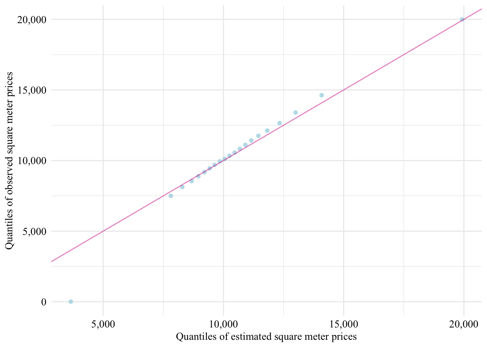
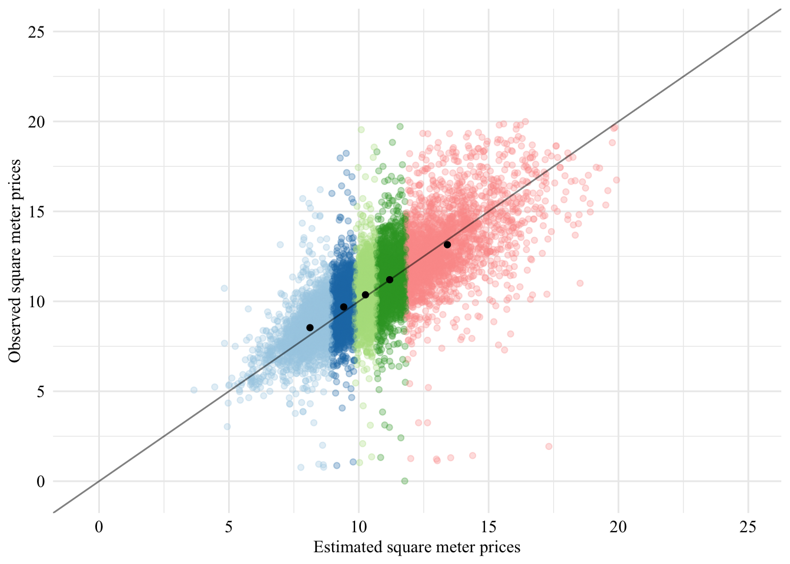
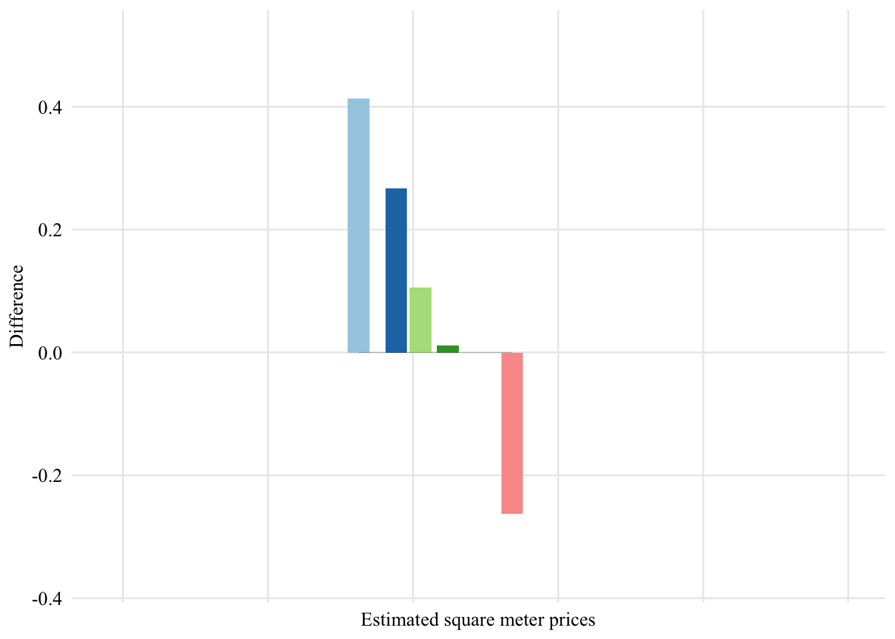
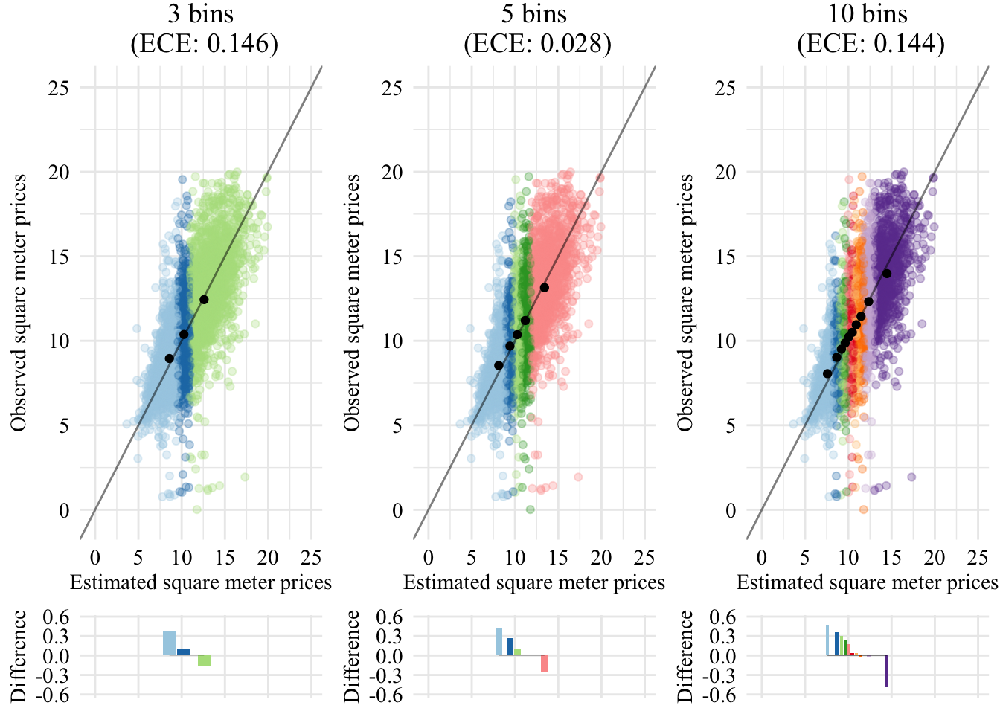
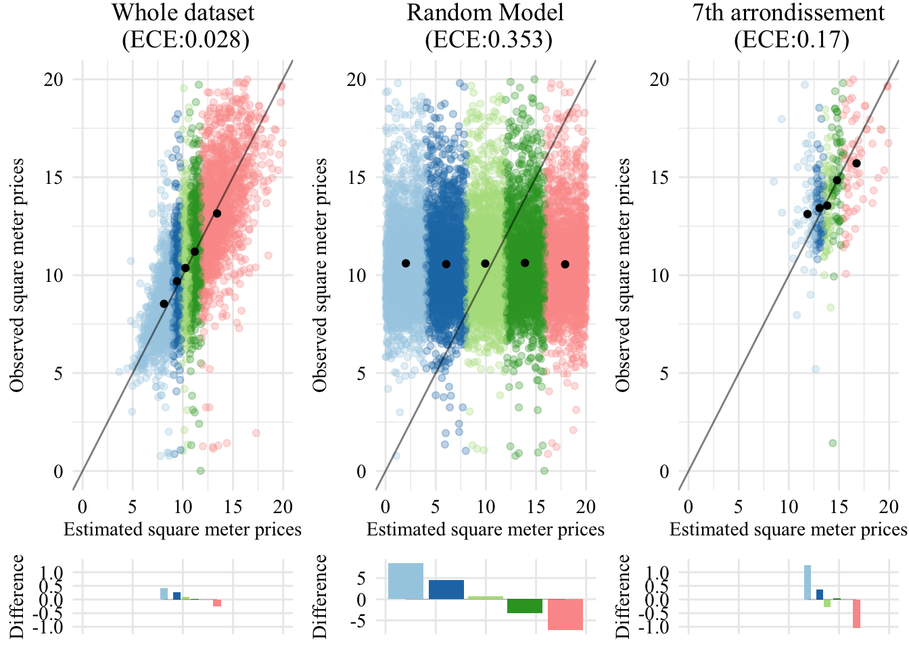

<!DOCTYPE html>
<html xmlns="http://www.w3.org/1999/xhtml" lang="en" xml:lang="en"><head>

<meta charset="utf-8">
<meta name="generator" content="quarto-1.3.361">

<meta name="viewport" content="width=device-width, initial-scale=1.0, user-scalable=yes">


<title>Geospatial Disparities: A Case Study on Real Estate Prices in Paris - 3&nbsp; Model Calibration</title>
<style>
code{white-space: pre-wrap;}
span.smallcaps{font-variant: small-caps;}
div.columns{display: flex; gap: min(4vw, 1.5em);}
div.column{flex: auto; overflow-x: auto;}
div.hanging-indent{margin-left: 1.5em; text-indent: -1.5em;}
ul.task-list{list-style: none;}
ul.task-list li input[type="checkbox"] {
  width: 0.8em;
  margin: 0 0.8em 0.2em -1em; /* quarto-specific, see https://github.com/quarto-dev/quarto-cli/issues/4556 */ 
  vertical-align: middle;
}
/* CSS for syntax highlighting */
pre > code.sourceCode { white-space: pre; position: relative; }
pre > code.sourceCode > span { display: inline-block; line-height: 1.25; }
pre > code.sourceCode > span:empty { height: 1.2em; }
.sourceCode { overflow: visible; }
code.sourceCode > span { color: inherit; text-decoration: inherit; }
div.sourceCode { margin: 1em 0; }
pre.sourceCode { margin: 0; }
@media screen {
div.sourceCode { overflow: auto; }
}
@media print {
pre > code.sourceCode { white-space: pre-wrap; }
pre > code.sourceCode > span { text-indent: -5em; padding-left: 5em; }
}
pre.numberSource code
  { counter-reset: source-line 0; }
pre.numberSource code > span
  { position: relative; left: -4em; counter-increment: source-line; }
pre.numberSource code > span > a:first-child::before
  { content: counter(source-line);
    position: relative; left: -1em; text-align: right; vertical-align: baseline;
    border: none; display: inline-block;
    -webkit-touch-callout: none; -webkit-user-select: none;
    -khtml-user-select: none; -moz-user-select: none;
    -ms-user-select: none; user-select: none;
    padding: 0 4px; width: 4em;
  }
pre.numberSource { margin-left: 3em;  padding-left: 4px; }
div.sourceCode
  {   }
@media screen {
pre > code.sourceCode > span > a:first-child::before { text-decoration: underline; }
}
/* CSS for citations */
div.csl-bib-body { }
div.csl-entry {
  clear: both;
}
.hanging-indent div.csl-entry {
  margin-left:2em;
  text-indent:-2em;
}
div.csl-left-margin {
  min-width:2em;
  float:left;
}
div.csl-right-inline {
  margin-left:2em;
  padding-left:1em;
}
div.csl-indent {
  margin-left: 2em;
}</style>


<script src="site_libs/quarto-nav/quarto-nav.js"></script>
<script src="site_libs/quarto-nav/headroom.min.js"></script>
<script src="site_libs/clipboard/clipboard.min.js"></script>
<script src="site_libs/quarto-search/autocomplete.umd.js"></script>
<script src="site_libs/quarto-search/fuse.min.js"></script>
<script src="site_libs/quarto-search/quarto-search.js"></script>
<meta name="quarto:offset" content="./">
<link href="./fairness.html" rel="next">
<link href="./neigh-smoothing.html" rel="prev">
<script src="site_libs/quarto-html/quarto.js"></script>
<script src="site_libs/quarto-html/popper.min.js"></script>
<script src="site_libs/quarto-html/tippy.umd.min.js"></script>
<script src="site_libs/quarto-html/anchor.min.js"></script>
<link href="site_libs/quarto-html/tippy.css" rel="stylesheet">
<link href="site_libs/quarto-html/quarto-syntax-highlighting.css" rel="stylesheet" id="quarto-text-highlighting-styles">
<script src="site_libs/bootstrap/bootstrap.min.js"></script>
<link href="site_libs/bootstrap/bootstrap-icons.css" rel="stylesheet">
<link href="site_libs/bootstrap/bootstrap.min.css" rel="stylesheet" id="quarto-bootstrap" data-mode="light">
<script id="quarto-search-options" type="application/json">{
  "location": "sidebar",
  "copy-button": false,
  "collapse-after": 3,
  "panel-placement": "start",
  "type": "textbox",
  "limit": 20,
  "language": {
    "search-no-results-text": "No results",
    "search-matching-documents-text": "matching documents",
    "search-copy-link-title": "Copy link to search",
    "search-hide-matches-text": "Hide additional matches",
    "search-more-match-text": "more match in this document",
    "search-more-matches-text": "more matches in this document",
    "search-clear-button-title": "Clear",
    "search-detached-cancel-button-title": "Cancel",
    "search-submit-button-title": "Submit",
    "search-label": "Search"
  }
}</script>
<script type="text/x-mathjax-config">
  MathJax.Hub.Config({ TeX: { extensions: ["color.js"] }});
</script>
<script type="text/x-mathjax-config">
	MathJax.Hub.Register.StartupHook("TeX color Ready", function() {
	     MathJax.Extension["TeX/color"].colors["wongBlack"] = '#000000';
		 MathJax.Extension["TeX/color"].colors["wongGold"] = '#E69F00';
		 MathJax.Extension["TeX/color"].colors["wongLightBlue"] = '#56B4E9';
		 MathJax.Extension["TeX/color"].colors["wongGreen"] = '#009E73';
		 MathJax.Extension["TeX/color"].colors["wongYellow"] = '#F0E442';
		 MathJax.Extension["TeX/color"].colors["wongBlue"] = '#0072B2';
		 MathJax.Extension["TeX/color"].colors["wongOrange"] = '#D55E00';
		 MathJax.Extension["TeX/color"].colors["wongPurple"] = '#CC79A7';
		 
		 
		 MathJax.Extension["TeX/color"].colors["IBMBlue"] = '#648FFF';
		 MathJax.Extension["TeX/color"].colors["IBMPurple"] = '#785EF0';
		 MathJax.Extension["TeX/color"].colors["IBMMagenta"] = '#DC267F';
		 MathJax.Extension["TeX/color"].colors["IBMOrange"] = '#FE6100';
		 MathJax.Extension["TeX/color"].colors["IBMYellow"] = '#FFB000';
	});
</script>

  <script src="https://polyfill.io/v3/polyfill.min.js?features=es6"></script>
  <script src="https://cdn.jsdelivr.net/npm/mathjax@3/es5/tex-chtml-full.js" type="text/javascript"></script>

</head>

<body class="nav-sidebar floating">

<div id="quarto-search-results"></div>
  <header id="quarto-header" class="headroom fixed-top">
  <nav class="quarto-secondary-nav">
    <div class="container-fluid d-flex">
      <button type="button" class="quarto-btn-toggle btn" data-bs-toggle="collapse" data-bs-target="#quarto-sidebar,#quarto-sidebar-glass" aria-controls="quarto-sidebar" aria-expanded="false" aria-label="Toggle sidebar navigation" onclick="if (window.quartoToggleHeadroom) { window.quartoToggleHeadroom(); }">
        <i class="bi bi-layout-text-sidebar-reverse"></i>
      </button>
      <nav class="quarto-page-breadcrumbs" aria-label="breadcrumb"><ol class="breadcrumb"><li class="breadcrumb-item"><a href="./model-calibration.html"><span class="chapter-number">3</span>&nbsp; <span class="chapter-title">Model Calibration</span></a></li></ol></nav>
      <a class="flex-grow-1" role="button" data-bs-toggle="collapse" data-bs-target="#quarto-sidebar,#quarto-sidebar-glass" aria-controls="quarto-sidebar" aria-expanded="false" aria-label="Toggle sidebar navigation" onclick="if (window.quartoToggleHeadroom) { window.quartoToggleHeadroom(); }">      
      </a>
      <button type="button" class="btn quarto-search-button" aria-label="" onclick="window.quartoOpenSearch();">
        <i class="bi bi-search"></i>
      </button>
    </div>
  </nav>
</header>
<!-- content -->
<div id="quarto-content" class="quarto-container page-columns page-rows-contents page-layout-article">
<!-- sidebar -->
  <nav id="quarto-sidebar" class="sidebar collapse collapse-horizontal sidebar-navigation floating overflow-auto">
    <div class="pt-lg-2 mt-2 text-left sidebar-header">
    <div class="sidebar-title mb-0 py-0">
      <a href="./">Geospatial Disparities: A Case Study on Real Estate Prices in Paris</a> 
    </div>
      </div>
        <div class="mt-2 flex-shrink-0 align-items-center">
        <div class="sidebar-search">
        <div id="quarto-search" class="" title="Search"></div>
        </div>
        </div>
    <div class="sidebar-menu-container"> 
    <ul class="list-unstyled mt-1">
        <li class="sidebar-item">
  <div class="sidebar-item-container"> 
  <a href="./index.html" class="sidebar-item-text sidebar-link">
 <span class="menu-text">Introduction</span></a>
  </div>
</li>
        <li class="sidebar-item">
  <div class="sidebar-item-container"> 
  <a href="./data.html" class="sidebar-item-text sidebar-link">
 <span class="menu-text"><span class="chapter-number">1</span>&nbsp; <span class="chapter-title">Data</span></span></a>
  </div>
</li>
        <li class="sidebar-item">
  <div class="sidebar-item-container"> 
  <a href="./neigh-smoothing.html" class="sidebar-item-text sidebar-link">
 <span class="menu-text"><span class="chapter-number">2</span>&nbsp; <span class="chapter-title">Neighborhood-Based Smoothing</span></span></a>
  </div>
</li>
        <li class="sidebar-item">
  <div class="sidebar-item-container"> 
  <a href="./model-calibration.html" class="sidebar-item-text sidebar-link active">
 <span class="menu-text"><span class="chapter-number">3</span>&nbsp; <span class="chapter-title">Model Calibration</span></span></a>
  </div>
</li>
        <li class="sidebar-item">
  <div class="sidebar-item-container"> 
  <a href="./fairness.html" class="sidebar-item-text sidebar-link">
 <span class="menu-text"><span class="chapter-number">4</span>&nbsp; <span class="chapter-title">Fairness</span></span></a>
  </div>
</li>
        <li class="sidebar-item">
  <div class="sidebar-item-container"> 
  <a href="./mitigation.html" class="sidebar-item-text sidebar-link">
 <span class="menu-text"><span class="chapter-number">5</span>&nbsp; <span class="chapter-title">Mitigation</span></span></a>
  </div>
</li>
        <li class="sidebar-item">
  <div class="sidebar-item-container"> 
  <a href="./references.html" class="sidebar-item-text sidebar-link">
 <span class="menu-text">References</span></a>
  </div>
</li>
    </ul>
    </div>
</nav>
<div id="quarto-sidebar-glass" data-bs-toggle="collapse" data-bs-target="#quarto-sidebar,#quarto-sidebar-glass"></div>
<!-- margin-sidebar -->
    <div id="quarto-margin-sidebar" class="sidebar margin-sidebar">
        <nav id="TOC" role="doc-toc" class="toc-active">
    <h2 id="toc-title">Table of contents</h2>
   
  <ul>
  <li><a href="#load-data" id="toc-load-data" class="nav-link active" data-scroll-target="#load-data"><span class="header-section-number">3.1</span> Load Data</a></li>
  <li><a href="#sec-calib-illustrative" id="toc-sec-calib-illustrative" class="nav-link" data-scroll-target="#sec-calib-illustrative"><span class="header-section-number">3.2</span> Illustrative Example</a>
  <ul class="collapse">
  <li><a href="#calibration-curve" id="toc-calibration-curve" class="nav-link" data-scroll-target="#calibration-curve"><span class="header-section-number">3.2.1</span> Calibration Curve</a></li>
  <li><a href="#expected-calibration-error" id="toc-expected-calibration-error" class="nav-link" data-scroll-target="#expected-calibration-error"><span class="header-section-number">3.2.2</span> Expected Calibration Error</a></li>
  </ul></li>
  <li><a href="#helper-functions" id="toc-helper-functions" class="nav-link" data-scroll-target="#helper-functions"><span class="header-section-number">3.3</span> Helper Functions</a>
  <ul class="collapse">
  <li><a href="#quantile-binning" id="toc-quantile-binning" class="nav-link" data-scroll-target="#quantile-binning"><span class="header-section-number">3.3.1</span> Quantile Binning</a></li>
  <li><a href="#expected-calibration-error-1" id="toc-expected-calibration-error-1" class="nav-link" data-scroll-target="#expected-calibration-error-1"><span class="header-section-number">3.3.2</span> Expected Calibration Error</a></li>
  </ul></li>
  <li><a href="#whole-dataset" id="toc-whole-dataset" class="nav-link" data-scroll-target="#whole-dataset"><span class="header-section-number">3.4</span> Whole Dataset</a></li>
  <li><a href="#comparison-with-a-single-arrondissement" id="toc-comparison-with-a-single-arrondissement" class="nav-link" data-scroll-target="#comparison-with-a-single-arrondissement"><span class="header-section-number">3.5</span> Comparison With a Single <em>Arrondissement</em></a>
  <ul class="collapse">
  <li><a href="#on-the-whole-dataset" id="toc-on-the-whole-dataset" class="nav-link" data-scroll-target="#on-the-whole-dataset"><span class="header-section-number">3.5.1</span> On the Whole Dataset</a></li>
  <li><a href="#sec-calib-random" id="toc-sec-calib-random" class="nav-link" data-scroll-target="#sec-calib-random"><span class="header-section-number">3.5.2</span> Random Model</a></li>
  <li><a href="#sec-calib-comparison-7th" id="toc-sec-calib-comparison-7th" class="nav-link" data-scroll-target="#sec-calib-comparison-7th"><span class="header-section-number">3.5.3</span> 7th <em>Arrondissement</em></a></li>
  <li><a href="#visualizing-the-calibration-for-the-3-cases" id="toc-visualizing-the-calibration-for-the-3-cases" class="nav-link" data-scroll-target="#visualizing-the-calibration-for-the-3-cases"><span class="header-section-number">3.5.4</span> Visualizing the Calibration for the 3 Cases</a></li>
  </ul></li>
  <li><a href="#sec-ece-arrond" id="toc-sec-ece-arrond" class="nav-link" data-scroll-target="#sec-ece-arrond"><span class="header-section-number">3.6</span> ECE in each <em>Arrondissement</em></a></li>
  <li><a href="#sec-calib-mont-champ" id="toc-sec-calib-mont-champ" class="nav-link" data-scroll-target="#sec-calib-mont-champ"><span class="header-section-number">3.7</span> Focus on Montmartre and Champs-de-Mars</a></li>
  </ul>
</nav>
    </div>
<!-- main -->
<main class="content" id="quarto-document-content">

<header id="title-block-header" class="quarto-title-block default">
<div class="quarto-title">
<h1 class="title"><span id="sec-model-calibration" class="quarto-section-identifier"><span class="chapter-number">3</span>&nbsp; <span class="chapter-title">Model Calibration</span></span></h1>
</div>


<div class="quarto-title-meta">

    
  
    
  </div>
  

</header>

<div class="cell">
<details>
<summary>Display the setting codes</summary>
<div class="sourceCode cell-code" id="cb1"><pre class="sourceCode r code-with-copy"><code class="sourceCode r"><span id="cb1-1"><a href="#cb1-1" aria-hidden="true" tabindex="-1"></a><span class="co"># Required packages----</span></span>
<span id="cb1-2"><a href="#cb1-2" aria-hidden="true" tabindex="-1"></a><span class="fu">library</span>(tidyverse)</span>
<span id="cb1-3"><a href="#cb1-3" aria-hidden="true" tabindex="-1"></a><span class="fu">library</span>(lubridate)</span>
<span id="cb1-4"><a href="#cb1-4" aria-hidden="true" tabindex="-1"></a><span class="fu">library</span>(gtsummary)</span>
<span id="cb1-5"><a href="#cb1-5" aria-hidden="true" tabindex="-1"></a><span class="fu">library</span>(labelled)</span>
<span id="cb1-6"><a href="#cb1-6" aria-hidden="true" tabindex="-1"></a><span class="fu">library</span>(sf)</span>
<span id="cb1-7"><a href="#cb1-7" aria-hidden="true" tabindex="-1"></a><span class="fu">library</span>(showtext)</span>
<span id="cb1-8"><a href="#cb1-8" aria-hidden="true" tabindex="-1"></a><span class="fu">library</span>(extrafont)</span>
<span id="cb1-9"><a href="#cb1-9" aria-hidden="true" tabindex="-1"></a><span class="fu">library</span>(wesanderson)</span>
<span id="cb1-10"><a href="#cb1-10" aria-hidden="true" tabindex="-1"></a><span class="fu">library</span>(zoo)</span>
<span id="cb1-11"><a href="#cb1-11" aria-hidden="true" tabindex="-1"></a><span class="fu">library</span>(locfit)</span>
<span id="cb1-12"><a href="#cb1-12" aria-hidden="true" tabindex="-1"></a><span class="fu">library</span>(LDATS)</span>
<span id="cb1-13"><a href="#cb1-13" aria-hidden="true" tabindex="-1"></a><span class="fu">library</span>(ramify)</span>
<span id="cb1-14"><a href="#cb1-14" aria-hidden="true" tabindex="-1"></a></span>
<span id="cb1-15"><a href="#cb1-15" aria-hidden="true" tabindex="-1"></a><span class="co"># Graphs----</span></span>
<span id="cb1-16"><a href="#cb1-16" aria-hidden="true" tabindex="-1"></a>font_main <span class="ot">=</span> font_title <span class="ot">=</span> <span class="st">'Times New Roman'</span></span>
<span id="cb1-17"><a href="#cb1-17" aria-hidden="true" tabindex="-1"></a>extrafont<span class="sc">::</span><span class="fu">loadfonts</span>(<span class="at">quiet =</span> T)</span>
<span id="cb1-18"><a href="#cb1-18" aria-hidden="true" tabindex="-1"></a>face_text<span class="ot">=</span><span class="st">'plain'</span></span>
<span id="cb1-19"><a href="#cb1-19" aria-hidden="true" tabindex="-1"></a>face_title<span class="ot">=</span><span class="st">'plain'</span></span>
<span id="cb1-20"><a href="#cb1-20" aria-hidden="true" tabindex="-1"></a>size_title <span class="ot">=</span> <span class="dv">14</span></span>
<span id="cb1-21"><a href="#cb1-21" aria-hidden="true" tabindex="-1"></a>size_text <span class="ot">=</span> <span class="dv">11</span></span>
<span id="cb1-22"><a href="#cb1-22" aria-hidden="true" tabindex="-1"></a>legend_size <span class="ot">=</span> <span class="dv">11</span></span>
<span id="cb1-23"><a href="#cb1-23" aria-hidden="true" tabindex="-1"></a></span>
<span id="cb1-24"><a href="#cb1-24" aria-hidden="true" tabindex="-1"></a>global_theme <span class="ot">&lt;-</span> <span class="cf">function</span>() {</span>
<span id="cb1-25"><a href="#cb1-25" aria-hidden="true" tabindex="-1"></a>  <span class="fu">theme_minimal</span>() <span class="sc">%+replace%</span></span>
<span id="cb1-26"><a href="#cb1-26" aria-hidden="true" tabindex="-1"></a>    <span class="fu">theme</span>(</span>
<span id="cb1-27"><a href="#cb1-27" aria-hidden="true" tabindex="-1"></a>      <span class="at">text =</span> <span class="fu">element_text</span>(<span class="at">family =</span> font_main, <span class="at">size =</span> size_text, <span class="at">face =</span> face_text),</span>
<span id="cb1-28"><a href="#cb1-28" aria-hidden="true" tabindex="-1"></a>      <span class="at">legend.text =</span> <span class="fu">element_text</span>(<span class="at">family =</span> font_main, <span class="at">size =</span> legend_size),</span>
<span id="cb1-29"><a href="#cb1-29" aria-hidden="true" tabindex="-1"></a>      <span class="at">axis.text =</span> <span class="fu">element_text</span>(<span class="at">size =</span> size_text, <span class="at">face =</span> face_text), </span>
<span id="cb1-30"><a href="#cb1-30" aria-hidden="true" tabindex="-1"></a>      <span class="at">plot.title =</span> <span class="fu">element_text</span>(</span>
<span id="cb1-31"><a href="#cb1-31" aria-hidden="true" tabindex="-1"></a>        <span class="at">family =</span> font_title, </span>
<span id="cb1-32"><a href="#cb1-32" aria-hidden="true" tabindex="-1"></a>        <span class="at">size =</span> size_title, </span>
<span id="cb1-33"><a href="#cb1-33" aria-hidden="true" tabindex="-1"></a>        <span class="at">hjust =</span> <span class="fl">0.5</span></span>
<span id="cb1-34"><a href="#cb1-34" aria-hidden="true" tabindex="-1"></a>      ),</span>
<span id="cb1-35"><a href="#cb1-35" aria-hidden="true" tabindex="-1"></a>      <span class="at">plot.subtitle =</span> <span class="fu">element_text</span>(<span class="at">hjust =</span> <span class="fl">0.5</span>)</span>
<span id="cb1-36"><a href="#cb1-36" aria-hidden="true" tabindex="-1"></a>    )</span>
<span id="cb1-37"><a href="#cb1-37" aria-hidden="true" tabindex="-1"></a>}</span>
<span id="cb1-38"><a href="#cb1-38" aria-hidden="true" tabindex="-1"></a></span>
<span id="cb1-39"><a href="#cb1-39" aria-hidden="true" tabindex="-1"></a><span class="co"># Colours</span></span>
<span id="cb1-40"><a href="#cb1-40" aria-hidden="true" tabindex="-1"></a>colors_ <span class="ot">&lt;-</span> <span class="fu">wes_palette</span>(<span class="st">'Rushmore1'</span>)</span>
<span id="cb1-41"><a href="#cb1-41" aria-hidden="true" tabindex="-1"></a>col_seine <span class="ot">&lt;-</span> <span class="st">"#2140A3"</span></span></code><button title="Copy to Clipboard" class="code-copy-button"><i class="bi"></i></button></pre></div>
</details>
</div>
<p>In this part, we look at the calibration of the model. In a nutshell, in traditional regression, a model output denoted as <span class="math inline">\(\hat{Z}\)</span> is considered well calibrated for <span class="math inline">\(Z\)</span> when (<span class="citation" data-cites="calib2019reg">Krüger and Ziegel (<a href="references.html#ref-calib2019reg" role="doc-biblioref">2020</a>)</span>): <span class="math display">\[
\mathbb{E}\left[ Z \mid \hat{Z} \right] = \hat{Z}\enspace.
\]</span></p>
<p>However, here, we discretize the variable of interest (square meter prices) so as to obtain a multi-class variable <span class="math inline">\(\mathcal{Y} = [K]\)</span>, where <span class="math inline">\(K&gt;0\)</span> is a positive integer.</p>
<p>Here, we focus on ordinal regression. The variable of interest is denoted as <span class="math inline">\(\mathcal{Y} = [K]\)</span>, where <span class="math inline">\(K&gt;0\)</span> is a positive integer. In this context, a model <span class="math inline">\(h\in\mathcal{H}\)</span> is deemed well calibrated in predicting the distribution of confident scores <span class="math inline">\(\hat{\boldsymbol{P}}\)</span> (<span class="citation" data-cites="widmann2019calibration">Widmann, Lindsten, and Zachariah (<a href="references.html#ref-widmann2019calibration" role="doc-biblioref">2019</a>)</span>) if: <span class="math display">\[
\mathbb{P}(Y = k | \,\hat{\boldsymbol{P}} = \hat{\boldsymbol{p}}) = \hat{p}_k,\quad \text{ for all }k\in[K]\enspace,
\]</span> where <span class="math inline">\(\hat{\boldsymbol{p}} = (\hat{p}_1, \ldots, \hat{p}_K)\)</span> and <span class="math inline">\(\hat{p}_k\)</span> represents the (confidence) score or probability estimate for class <span class="math inline">\(k\)</span> under the model <span class="math inline">\(h\)</span>.</p>
<p>To measure the calibration of a model, we rely on the group-wise calibration error, or in the calibration literature, the Expected Calibration Error (ECE) (<span class="citation" data-cites="naeini2015obtaining">Naeini, Cooper, and Hauskrecht (<a href="references.html#ref-naeini2015obtaining" role="doc-biblioref">2015</a>)</span>) denoted <span class="math inline">\(\mathcal{U}_{ECE}\)</span>.</p>
<p>The empirical distribution is calculated as follows: <span id="eq-empirical-distrib"><span class="math display">\[
\hat{\mathbb{P}}_{(\boldsymbol{X}_i, Y_i)_i}:= \frac{1}{n} \sum_{i=1}^n \delta_{(\boldsymbol{X}_i, Y_i)}\enspace,
\tag{3.1}\]</span></span> where <span class="math inline">\((\boldsymbol{X}_i, Y_i)_{i=1, \ldots, n}\)</span>is the empirical data, i.i.d. copies of <span class="math inline">\((\boldsymbol{X}, Y)\)</span>.</p>
<p>Let the interval <span class="math inline">\([0,1]\)</span> be partitioned into <span class="math inline">\(B\)</span> bins based on quantiles of <span class="math inline">\(\max_k \hat{p}_k\)</span> values, where each bin <span class="math inline">\(b\in[B]\)</span> is associated with the set <span class="math inline">\(\mathcal{I}_b\)</span> containing the indices of instances within that bin. This partitioning is used in the subsequent definition of the ECE, which is applicable to the multi-class classification framework and thereby extends to ordinal regression.</p>
<div class="callout callout-style-default callout-tip callout-titled">
<div class="callout-header d-flex align-content-center">
<div class="callout-icon-container">
<i class="callout-icon"></i>
</div>
<div class="callout-title-container flex-fill">
Model calibration in multi-class classification
</div>
</div>
<div class="callout-body-container callout-body">
<p>To quantify the ECE, we introduce the accuracy and confidence measures within each bin <span class="math inline">\(b\in[B]\)</span>:</p>
<ul>
<li><strong>Accuracy</strong>: <span class="math display">\[\textrm{acc}(\mathcal{I}_b) = \hat{\mathbb{P}}_{(\boldsymbol{X}_i, Y_i)_{i\in\mathcal{I}_b}}(Y=\hat{Y})\]</span></li>
<li><strong>Confidence</strong>: <span class="math display">\[\textrm{conf}(\mathcal{I}_b) = \hat{\mathbb{E}}_{(\boldsymbol{X}_i, Y_i)_{i\in\mathcal{I}_b}} (\max_k \hat{p}_k)\enspace.
  %\frac{1}{n_b} \sum_{i \in b} \max_k \hat{p}_k^{(i)}\]</span></li>
</ul>
<p>The <strong>calibration error measure</strong> for a model <span class="math inline">\(h\in\mathcal{H}\)</span> is then defined as <span class="math display">\[
\mathcal{U}_{ECE}(h) := \frac{1}{n} \sum_{b\in[B]} |\mathcal{I}_b| \cdot \left|\textrm{acc}(\mathcal{I}_b) - \textrm{conf}(\mathcal{I}_b)\right|
\enspace,
\]</span> and model <span class="math inline">\(h\)</span> is considered (group-wise) well calibrated if <span class="math inline">\(\mathcal{U}_{ECE}(h) = 0\)</span>.</p>
</div>
</div>
<section id="load-data" class="level2" data-number="3.1">
<h2 data-number="3.1" class="anchored" data-anchor-id="load-data"><span class="header-section-number">3.1</span> Load Data</h2>
<p>Let us load the real estate data that were cleaned in <a href="data.html#sec-export-data"><span>Section&nbsp;1.5</span></a>, in <a href="data.html">Chapter&nbsp;<span>1</span></a>.</p>
<div class="cell">
<div class="sourceCode cell-code" id="cb2"><pre class="sourceCode r code-with-copy"><code class="sourceCode r"><span id="cb2-1"><a href="#cb2-1" aria-hidden="true" tabindex="-1"></a><span class="fu">load</span>(<span class="st">"../data/data_clean_all.rda"</span>)</span></code><button title="Copy to Clipboard" class="code-copy-button"><i class="bi"></i></button></pre></div>
</div>
<p>Let us have a look at the quantiles of the observed and the estimated prices. We consider here levels from 0 to 1 in steps of .05 for the quantiles.</p>
<div class="cell">
<div class="sourceCode cell-code" id="cb3"><pre class="sourceCode r code-with-copy"><code class="sourceCode r"><span id="cb3-1"><a href="#cb3-1" aria-hidden="true" tabindex="-1"></a>probs <span class="ot">&lt;-</span> <span class="fu">seq</span>(<span class="dv">0</span>, <span class="dv">1</span>, .<span class="dv">05</span>)</span>
<span id="cb3-2"><a href="#cb3-2" aria-hidden="true" tabindex="-1"></a>quantile_data <span class="ot">&lt;-</span> <span class="fu">tibble</span>(</span>
<span id="cb3-3"><a href="#cb3-3" aria-hidden="true" tabindex="-1"></a>  <span class="at">true_price_quant =</span> <span class="fu">quantile</span>(data_clean_all<span class="sc">$</span>pm2, <span class="at">probs =</span> probs), </span>
<span id="cb3-4"><a href="#cb3-4" aria-hidden="true" tabindex="-1"></a>  <span class="at">estim_price_quant =</span> <span class="fu">quantile</span>(data_clean_all<span class="sc">$</span>pm2_estimated, <span class="at">probs =</span> probs)</span>
<span id="cb3-5"><a href="#cb3-5" aria-hidden="true" tabindex="-1"></a>)</span></code><button title="Copy to Clipboard" class="code-copy-button"><i class="bi"></i></button></pre></div>
</div>
<div class="cell">
<details>
<summary>Display the codes used to create the Figure.</summary>
<div class="sourceCode cell-code" id="cb4"><pre class="sourceCode r code-with-copy"><code class="sourceCode r"><span id="cb4-1"><a href="#cb4-1" aria-hidden="true" tabindex="-1"></a><span class="fu">ggplot</span>(</span>
<span id="cb4-2"><a href="#cb4-2" aria-hidden="true" tabindex="-1"></a>  <span class="at">data =</span> quantile_data, </span>
<span id="cb4-3"><a href="#cb4-3" aria-hidden="true" tabindex="-1"></a>  <span class="at">mapping =</span> <span class="fu">aes</span>(<span class="at">x =</span> estim_price_quant, <span class="at">y =</span> true_price_quant)</span>
<span id="cb4-4"><a href="#cb4-4" aria-hidden="true" tabindex="-1"></a>) <span class="sc">+</span> </span>
<span id="cb4-5"><a href="#cb4-5" aria-hidden="true" tabindex="-1"></a>  <span class="fu">geom_point</span>(<span class="at">color =</span> <span class="st">"lightblue"</span>, <span class="at">alpha =</span> <span class="fl">0.8</span>) <span class="sc">+</span></span>
<span id="cb4-6"><a href="#cb4-6" aria-hidden="true" tabindex="-1"></a>  <span class="fu">geom_abline</span>(<span class="at">color=</span><span class="st">"violetred"</span>, <span class="at">alpha =</span> <span class="fl">0.5</span>) <span class="sc">+</span></span>
<span id="cb4-7"><a href="#cb4-7" aria-hidden="true" tabindex="-1"></a>  <span class="fu">labs</span>(</span>
<span id="cb4-8"><a href="#cb4-8" aria-hidden="true" tabindex="-1"></a>    <span class="at">x =</span> <span class="st">"Quantiles of estimated square meter prices"</span>,</span>
<span id="cb4-9"><a href="#cb4-9" aria-hidden="true" tabindex="-1"></a>    <span class="at">y =</span> <span class="st">"Quantiles of observed square meter prices"</span>,</span>
<span id="cb4-10"><a href="#cb4-10" aria-hidden="true" tabindex="-1"></a>  ) <span class="sc">+</span></span>
<span id="cb4-11"><a href="#cb4-11" aria-hidden="true" tabindex="-1"></a>  <span class="fu">scale_x_continuous</span>(<span class="at">labels =</span> scales<span class="sc">::</span><span class="fu">label_comma</span>()) <span class="sc">+</span></span>
<span id="cb4-12"><a href="#cb4-12" aria-hidden="true" tabindex="-1"></a>  <span class="fu">scale_y_continuous</span>(<span class="at">labels =</span> scales<span class="sc">::</span><span class="fu">label_comma</span>()) <span class="sc">+</span></span>
<span id="cb4-13"><a href="#cb4-13" aria-hidden="true" tabindex="-1"></a>  <span class="fu">global_theme</span>()</span></code><button title="Copy to Clipboard" class="code-copy-button"><i class="bi"></i></button></pre></div>
</details>
<div class="cell-output-display">
<div id="fig-quantiles-obs-estim" class="quarto-figure quarto-figure-center anchored">
<figure class="figure">
<figcaption class="figure-caption">Figure&nbsp;3.1: Quantiles of observed prices as a function of quantiles of estimated prices. The violet line is the bissector.</figcaption>
<p></p>
</figure>
</div>
</div>
</div>
</section>
<section id="sec-calib-illustrative" class="level2" data-number="3.2">
<h2 data-number="3.2" class="anchored" data-anchor-id="sec-calib-illustrative"><span class="header-section-number">3.2</span> Illustrative Example</h2>
<p>Let us consider an illustrative example, where we discretize the data into 5 classes.</p>
<div class="cell">
<div class="sourceCode cell-code" id="cb5"><pre class="sourceCode r code-with-copy"><code class="sourceCode r"><span id="cb5-1"><a href="#cb5-1" aria-hidden="true" tabindex="-1"></a>k <span class="ot">&lt;-</span> <span class="dv">5</span></span></code><button title="Copy to Clipboard" class="code-copy-button"><i class="bi"></i></button></pre></div>
</div>
<p>Let us store the observed and predicted prices in two vectors.</p>
<div class="cell">
<div class="sourceCode cell-code" id="cb6"><pre class="sourceCode r code-with-copy"><code class="sourceCode r"><span id="cb6-1"><a href="#cb6-1" aria-hidden="true" tabindex="-1"></a>obs <span class="ot">&lt;-</span> data_clean_all<span class="sc">$</span>pm2</span>
<span id="cb6-2"><a href="#cb6-2" aria-hidden="true" tabindex="-1"></a>pred <span class="ot">&lt;-</span> data_clean_all<span class="sc">$</span>pm2_estimated</span></code><button title="Copy to Clipboard" class="code-copy-button"><i class="bi"></i></button></pre></div>
</div>
<p>Based on the predicted prices <span class="math inline">\(\hat{Y}\)</span>, we define 5 bins:</p>
<div class="cell">
<div class="sourceCode cell-code" id="cb7"><pre class="sourceCode r code-with-copy"><code class="sourceCode r"><span id="cb7-1"><a href="#cb7-1" aria-hidden="true" tabindex="-1"></a>quantiles <span class="ot">&lt;-</span> <span class="fu">quantile</span>(pred, <span class="at">probs =</span> (<span class="dv">0</span><span class="sc">:</span>k) <span class="sc">/</span> k)</span>
<span id="cb7-2"><a href="#cb7-2" aria-hidden="true" tabindex="-1"></a>quantiles</span></code><button title="Copy to Clipboard" class="code-copy-button"><i class="bi"></i></button></pre></div>
<div class="cell-output cell-output-stdout">
<pre><code>       0%       20%       40%       60%       80%      100% 
 3653.324  8958.131  9849.044 10682.828 11821.381 19927.113 </code></pre>
</div>
</div>
<p>We compute the midpoint of each bin:</p>
<div class="cell">
<div class="sourceCode cell-code" id="cb9"><pre class="sourceCode r code-with-copy"><code class="sourceCode r"><span id="cb9-1"><a href="#cb9-1" aria-hidden="true" tabindex="-1"></a>midpoints <span class="ot">&lt;-</span> quantiles <span class="sc">|&gt;</span> <span class="fu">rollmean</span>(quantiles, <span class="at">k =</span> <span class="dv">2</span>)</span>
<span id="cb9-2"><a href="#cb9-2" aria-hidden="true" tabindex="-1"></a>midpoints <span class="ot">&lt;-</span> midpoints[<span class="sc">-</span><span class="fu">length</span>(midpoints)]</span>
<span id="cb9-3"><a href="#cb9-3" aria-hidden="true" tabindex="-1"></a>midpoints</span></code><button title="Copy to Clipboard" class="code-copy-button"><i class="bi"></i></button></pre></div>
<div class="cell-output cell-output-stdout">
<pre><code>       0%       20%       40%       60%       80% 
 6305.728  9403.588 10265.936 11252.105 15874.247 </code></pre>
</div>
</div>
<p>Next, we compute the length of each bin, which corresponds to the distance between quantiles:</p>
<div class="cell">
<div class="sourceCode cell-code" id="cb11"><pre class="sourceCode r code-with-copy"><code class="sourceCode r"><span id="cb11-1"><a href="#cb11-1" aria-hidden="true" tabindex="-1"></a>dist_quantiles <span class="ot">&lt;-</span> <span class="fu">diff</span>(quantiles) <span class="co"># to normalize deviation</span></span>
<span id="cb11-2"><a href="#cb11-2" aria-hidden="true" tabindex="-1"></a>dist_q <span class="ot">&lt;-</span> <span class="fu">tibble</span>(</span>
<span id="cb11-3"><a href="#cb11-3" aria-hidden="true" tabindex="-1"></a>  <span class="at">pred_labs =</span> <span class="dv">1</span><span class="sc">:</span><span class="fu">length</span>(dist_quantiles), </span>
<span id="cb11-4"><a href="#cb11-4" aria-hidden="true" tabindex="-1"></a>  <span class="at">dist =</span> dist_quantiles</span>
<span id="cb11-5"><a href="#cb11-5" aria-hidden="true" tabindex="-1"></a>) <span class="sc">|&gt;</span> </span>
<span id="cb11-6"><a href="#cb11-6" aria-hidden="true" tabindex="-1"></a>  <span class="fu">mutate</span>(<span class="at">pred_labs =</span> pred_labs)</span>
<span id="cb11-7"><a href="#cb11-7" aria-hidden="true" tabindex="-1"></a>dist_q</span></code><button title="Copy to Clipboard" class="code-copy-button"><i class="bi"></i></button></pre></div>
<div class="cell-output cell-output-stdout">
<pre><code># A tibble: 5 × 2
  pred_labs  dist
      &lt;int&gt; &lt;dbl&gt;
1         1 5305.
2         2  891.
3         3  834.
4         4 1139.
5         5 8106.</code></pre>
</div>
</div>
<p>Then, for each observed price and each predicted price, we can assign the bin in which it lies.</p>
<div class="cell">
<div class="sourceCode cell-code" id="cb13"><pre class="sourceCode r code-with-copy"><code class="sourceCode r"><span id="cb13-1"><a href="#cb13-1" aria-hidden="true" tabindex="-1"></a><span class="co"># Change first and last values of quantiles (0% - 100%)</span></span>
<span id="cb13-2"><a href="#cb13-2" aria-hidden="true" tabindex="-1"></a>quantiles[<span class="dv">1</span>] <span class="ot">&lt;-</span> <span class="dv">0</span></span>
<span id="cb13-3"><a href="#cb13-3" aria-hidden="true" tabindex="-1"></a>quantiles[<span class="fu">length</span>(quantiles)] <span class="ot">&lt;-</span> <span class="cn">Inf</span></span>
<span id="cb13-4"><a href="#cb13-4" aria-hidden="true" tabindex="-1"></a><span class="co"># Get true and predicted labels based on quantiles</span></span>
<span id="cb13-5"><a href="#cb13-5" aria-hidden="true" tabindex="-1"></a>obs_labels <span class="ot">&lt;-</span> <span class="fu">cut</span>(</span>
<span id="cb13-6"><a href="#cb13-6" aria-hidden="true" tabindex="-1"></a>  obs, <span class="at">breaks =</span> quantiles, <span class="at">labels =</span> <span class="dv">1</span><span class="sc">:</span>(<span class="fu">length</span>(quantiles) <span class="sc">-</span> <span class="dv">1</span>)</span>
<span id="cb13-7"><a href="#cb13-7" aria-hidden="true" tabindex="-1"></a>) <span class="sc">|&gt;</span> </span>
<span id="cb13-8"><a href="#cb13-8" aria-hidden="true" tabindex="-1"></a>  <span class="fu">as.numeric</span>()</span>
<span id="cb13-9"><a href="#cb13-9" aria-hidden="true" tabindex="-1"></a>pred_labels <span class="ot">&lt;-</span> <span class="fu">cut</span>(</span>
<span id="cb13-10"><a href="#cb13-10" aria-hidden="true" tabindex="-1"></a>  pred, <span class="at">breaks =</span> quantiles, <span class="at">labels =</span> <span class="dv">1</span><span class="sc">:</span>(<span class="fu">length</span>(quantiles)<span class="sc">-</span><span class="dv">1</span>)</span>
<span id="cb13-11"><a href="#cb13-11" aria-hidden="true" tabindex="-1"></a>) <span class="sc">|&gt;</span> </span>
<span id="cb13-12"><a href="#cb13-12" aria-hidden="true" tabindex="-1"></a>  <span class="fu">as.numeric</span>()</span></code><button title="Copy to Clipboard" class="code-copy-button"><i class="bi"></i></button></pre></div>
</div>
<p>Let us put the results in a tibble:</p>
<div class="cell">
<div class="sourceCode cell-code" id="cb14"><pre class="sourceCode r code-with-copy"><code class="sourceCode r"><span id="cb14-1"><a href="#cb14-1" aria-hidden="true" tabindex="-1"></a>data_to_display <span class="ot">&lt;-</span> <span class="fu">tibble</span>(</span>
<span id="cb14-2"><a href="#cb14-2" aria-hidden="true" tabindex="-1"></a>  <span class="at">obs =</span> obs,</span>
<span id="cb14-3"><a href="#cb14-3" aria-hidden="true" tabindex="-1"></a>  <span class="at">pred =</span> pred,</span>
<span id="cb14-4"><a href="#cb14-4" aria-hidden="true" tabindex="-1"></a>  <span class="at">obs_labs =</span> obs_labels, </span>
<span id="cb14-5"><a href="#cb14-5" aria-hidden="true" tabindex="-1"></a>  <span class="at">pred_labs =</span> pred_labels</span>
<span id="cb14-6"><a href="#cb14-6" aria-hidden="true" tabindex="-1"></a>) <span class="sc">|&gt;</span></span>
<span id="cb14-7"><a href="#cb14-7" aria-hidden="true" tabindex="-1"></a>  <span class="fu">left_join</span>(dist_q, <span class="at">by=</span><span class="st">"pred_labs"</span>)</span>
<span id="cb14-8"><a href="#cb14-8" aria-hidden="true" tabindex="-1"></a>data_to_display</span></code><button title="Copy to Clipboard" class="code-copy-button"><i class="bi"></i></button></pre></div>
<div class="cell-output cell-output-stdout">
<pre><code># A tibble: 11,169 × 5
      obs   pred obs_labs pred_labs  dist
    &lt;dbl&gt;  &lt;dbl&gt;    &lt;dbl&gt;     &lt;dbl&gt; &lt;dbl&gt;
 1  9500   9227.        2         2  891.
 2 14210  14481.        5         5 8106.
 3 11314. 13481.        4         5 8106.
 4  9838.  8553.        2         1 5305.
 5  5294.  7132.        1         1 5305.
 6  5042.  8035.        1         1 5305.
 7  8684.  8708.        1         1 5305.
 8  8167.  8931.        1         1 5305.
 9  7647.  9946.        1         3  834.
10  5581.  7339.        1         1 5305.
# ℹ 11,159 more rows</code></pre>
</div>
</div>
<section id="calibration-curve" class="level3" data-number="3.2.1">
<h3 data-number="3.2.1" class="anchored" data-anchor-id="calibration-curve"><span class="header-section-number">3.2.1</span> Calibration Curve</h3>
<p>Now, in each bin, we can compute the mean of observed and predicted prices (<code>obs_mean</code> and <code>pred_mean</code>). This will allow us to create a calibration curve. We also compute the number of observation in the bin (<code>nb</code>), the length of the bin (<code>dist</code>), the midpoints of the two quantiles defining the bin (<code>midpoints</code>), and the difference between the average observed price and the average predicted price (<code>diff</code>).</p>
<div class="cell">
<div class="sourceCode cell-code" id="cb16"><pre class="sourceCode r code-with-copy"><code class="sourceCode r"><span id="cb16-1"><a href="#cb16-1" aria-hidden="true" tabindex="-1"></a>local_means <span class="ot">&lt;-</span> data_to_display <span class="sc">|&gt;</span> </span>
<span id="cb16-2"><a href="#cb16-2" aria-hidden="true" tabindex="-1"></a>  <span class="fu">group_by</span>(pred_labs) <span class="sc">|&gt;</span> </span>
<span id="cb16-3"><a href="#cb16-3" aria-hidden="true" tabindex="-1"></a>  <span class="fu">summarise</span>(</span>
<span id="cb16-4"><a href="#cb16-4" aria-hidden="true" tabindex="-1"></a>    <span class="at">obs_mean =</span> <span class="fu">mean</span>(obs),</span>
<span id="cb16-5"><a href="#cb16-5" aria-hidden="true" tabindex="-1"></a>    <span class="at">pred_mean =</span> <span class="fu">mean</span>(pred),</span>
<span id="cb16-6"><a href="#cb16-6" aria-hidden="true" tabindex="-1"></a>    <span class="at">nb =</span> <span class="fu">n</span>(),</span>
<span id="cb16-7"><a href="#cb16-7" aria-hidden="true" tabindex="-1"></a>    <span class="at">dist =</span> <span class="fu">min</span>(dist)</span>
<span id="cb16-8"><a href="#cb16-8" aria-hidden="true" tabindex="-1"></a>  ) <span class="sc">|&gt;</span></span>
<span id="cb16-9"><a href="#cb16-9" aria-hidden="true" tabindex="-1"></a>  <span class="fu">mutate</span>(<span class="at">midpoints =</span> midpoints) <span class="sc">|&gt;</span></span>
<span id="cb16-10"><a href="#cb16-10" aria-hidden="true" tabindex="-1"></a>  <span class="fu">mutate</span>(<span class="at">diff =</span> obs_mean <span class="sc">-</span> pred_mean)</span>
<span id="cb16-11"><a href="#cb16-11" aria-hidden="true" tabindex="-1"></a>local_means</span></code><button title="Copy to Clipboard" class="code-copy-button"><i class="bi"></i></button></pre></div>
<div class="cell-output cell-output-stdout">
<pre><code># A tibble: 5 × 7
  pred_labs obs_mean pred_mean    nb  dist midpoints   diff
      &lt;dbl&gt;    &lt;dbl&gt;     &lt;dbl&gt; &lt;int&gt; &lt;dbl&gt;     &lt;dbl&gt;  &lt;dbl&gt;
1         1    8535.     8121.  2234 5305.     6306.  414. 
2         2    9687.     9421.  2234  891.     9404.  267. 
3         3   10363.    10257.  2233  834.    10266.  106. 
4         4   11202.    11191.  2234 1139.    11252.   10.9
5         5   13149.    13412.  2234 8106.    15874. -263. </code></pre>
</div>
</div>
<p>Let us draw the calibration curve. We can define a color for each bin (we generate 10 but will only use 5 here).</p>
<div class="cell">
<div class="sourceCode cell-code" id="cb18"><pre class="sourceCode r code-with-copy"><code class="sourceCode r"><span id="cb18-1"><a href="#cb18-1" aria-hidden="true" tabindex="-1"></a>colours <span class="ot">&lt;-</span> RColorBrewer<span class="sc">::</span><span class="fu">brewer.pal</span>(<span class="dv">10</span>, <span class="st">"Paired"</span>)</span>
<span id="cb18-2"><a href="#cb18-2" aria-hidden="true" tabindex="-1"></a><span class="fu">names</span>(colours) <span class="ot">&lt;-</span> <span class="fu">seq_len</span>(<span class="fu">max</span>(<span class="dv">10</span>))</span></code><button title="Copy to Clipboard" class="code-copy-button"><i class="bi"></i></button></pre></div>
</div>
<p>The calibration curve is shown in <a href="#fig-calibration-bins-illustr">Figure&nbsp;<span>3.2</span></a>. If the model was perfectly calibrated, the dots would all be on the bissector.</p>
<div class="cell">
<details>
<summary>Display the codes used to create the Figure.</summary>
<div class="sourceCode cell-code" id="cb19"><pre class="sourceCode r code-with-copy"><code class="sourceCode r"><span id="cb19-1"><a href="#cb19-1" aria-hidden="true" tabindex="-1"></a>x_lim <span class="ot">&lt;-</span> <span class="fu">c</span>(<span class="sc">-</span><span class="dv">500</span>, <span class="dv">25000</span>)</span>
<span id="cb19-2"><a href="#cb19-2" aria-hidden="true" tabindex="-1"></a><span class="fu">ggplot</span>() <span class="sc">+</span> </span>
<span id="cb19-3"><a href="#cb19-3" aria-hidden="true" tabindex="-1"></a>  <span class="fu">geom_point</span>(</span>
<span id="cb19-4"><a href="#cb19-4" aria-hidden="true" tabindex="-1"></a>    <span class="at">data =</span> data_to_display <span class="sc">|&gt;</span> </span>
<span id="cb19-5"><a href="#cb19-5" aria-hidden="true" tabindex="-1"></a>      <span class="fu">mutate</span>(<span class="at">pred_labs =</span> <span class="fu">factor</span>(pred_labs)), </span>
<span id="cb19-6"><a href="#cb19-6" aria-hidden="true" tabindex="-1"></a>    <span class="at">mapping =</span> <span class="fu">aes</span>(</span>
<span id="cb19-7"><a href="#cb19-7" aria-hidden="true" tabindex="-1"></a>      <span class="at">x =</span> pred, <span class="at">y =</span> obs, </span>
<span id="cb19-8"><a href="#cb19-8" aria-hidden="true" tabindex="-1"></a>      <span class="at">color =</span> pred_labs</span>
<span id="cb19-9"><a href="#cb19-9" aria-hidden="true" tabindex="-1"></a>    ), </span>
<span id="cb19-10"><a href="#cb19-10" aria-hidden="true" tabindex="-1"></a>    <span class="at">alpha =</span> <span class="fl">0.3</span></span>
<span id="cb19-11"><a href="#cb19-11" aria-hidden="true" tabindex="-1"></a>  ) <span class="sc">+</span></span>
<span id="cb19-12"><a href="#cb19-12" aria-hidden="true" tabindex="-1"></a>  <span class="fu">scale_colour_manual</span>(<span class="at">values =</span> colours[<span class="dv">1</span><span class="sc">:</span>k]) <span class="sc">+</span></span>
<span id="cb19-13"><a href="#cb19-13" aria-hidden="true" tabindex="-1"></a>  <span class="co"># Mean point in each bin</span></span>
<span id="cb19-14"><a href="#cb19-14" aria-hidden="true" tabindex="-1"></a>  <span class="fu">geom_point</span>(</span>
<span id="cb19-15"><a href="#cb19-15" aria-hidden="true" tabindex="-1"></a>    <span class="at">data =</span> local_means, </span>
<span id="cb19-16"><a href="#cb19-16" aria-hidden="true" tabindex="-1"></a>    <span class="at">mapping =</span> <span class="fu">aes</span>(<span class="at">x =</span> pred_mean, <span class="at">y =</span> obs_mean)</span>
<span id="cb19-17"><a href="#cb19-17" aria-hidden="true" tabindex="-1"></a>  ) <span class="sc">+</span></span>
<span id="cb19-18"><a href="#cb19-18" aria-hidden="true" tabindex="-1"></a>  <span class="co"># in thousand Euros</span></span>
<span id="cb19-19"><a href="#cb19-19" aria-hidden="true" tabindex="-1"></a>  <span class="fu">labs</span>(</span>
<span id="cb19-20"><a href="#cb19-20" aria-hidden="true" tabindex="-1"></a>    <span class="at">x =</span> <span class="st">"Estimated square meter prices"</span>,</span>
<span id="cb19-21"><a href="#cb19-21" aria-hidden="true" tabindex="-1"></a>    <span class="at">y =</span> <span class="st">"Observed square meter prices"</span></span>
<span id="cb19-22"><a href="#cb19-22" aria-hidden="true" tabindex="-1"></a>  ) <span class="sc">+</span></span>
<span id="cb19-23"><a href="#cb19-23" aria-hidden="true" tabindex="-1"></a>  <span class="fu">scale_x_continuous</span>(</span>
<span id="cb19-24"><a href="#cb19-24" aria-hidden="true" tabindex="-1"></a>    <span class="at">labels =</span> scales<span class="sc">::</span><span class="fu">label_comma</span>(<span class="at">scale =</span> <span class="dv">1</span><span class="sc">/</span><span class="dv">1000</span>), <span class="at">limits =</span> x_lim</span>
<span id="cb19-25"><a href="#cb19-25" aria-hidden="true" tabindex="-1"></a>  ) <span class="sc">+</span></span>
<span id="cb19-26"><a href="#cb19-26" aria-hidden="true" tabindex="-1"></a>  <span class="fu">scale_y_continuous</span>(</span>
<span id="cb19-27"><a href="#cb19-27" aria-hidden="true" tabindex="-1"></a>    <span class="at">labels =</span> scales<span class="sc">::</span><span class="fu">label_comma</span>(<span class="at">scale =</span> <span class="dv">1</span><span class="sc">/</span><span class="dv">1000</span>), <span class="at">limits =</span> x_lim</span>
<span id="cb19-28"><a href="#cb19-28" aria-hidden="true" tabindex="-1"></a>  ) <span class="sc">+</span></span>
<span id="cb19-29"><a href="#cb19-29" aria-hidden="true" tabindex="-1"></a>  <span class="fu">geom_abline</span>(<span class="at">color=</span><span class="st">"black"</span>, <span class="at">alpha =</span> <span class="fl">0.5</span>) <span class="sc">+</span> </span>
<span id="cb19-30"><a href="#cb19-30" aria-hidden="true" tabindex="-1"></a>  <span class="fu">guides</span>(<span class="at">color =</span> <span class="st">"none"</span>) <span class="sc">+</span> </span>
<span id="cb19-31"><a href="#cb19-31" aria-hidden="true" tabindex="-1"></a>  <span class="fu">global_theme</span>()</span></code><button title="Copy to Clipboard" class="code-copy-button"><i class="bi"></i></button></pre></div>
</details>
<div class="cell-output-display">
<div id="fig-calibration-bins-illustr" class="quarto-figure quarto-figure-center anchored">
<figure class="figure">
<figcaption class="figure-caption">Figure&nbsp;3.2: Calibration on the whole dataset estimated using 5 bins. Prices are in thousand Euros.</figcaption>
<p></p>
</figure>
</div>
</div>
</div>
<p>We can also use a barplot to visualize how far the average observed prices are from the average predicted prices in each bin.</p>
<div class="cell">
<details>
<summary>Display the codes used to create the Figure.</summary>
<div class="sourceCode cell-code" id="cb20"><pre class="sourceCode r code-with-copy"><code class="sourceCode r"><span id="cb20-1"><a href="#cb20-1" aria-hidden="true" tabindex="-1"></a>y_lim_bar <span class="ot">&lt;-</span> <span class="fu">range</span>(local_means<span class="sc">$</span>diff)</span>
<span id="cb20-2"><a href="#cb20-2" aria-hidden="true" tabindex="-1"></a>y_lim_bar[<span class="dv">1</span>] <span class="ot">&lt;-</span> <span class="fu">round</span>(y_lim_bar[<span class="dv">1</span>]) <span class="sc">-</span> <span class="dv">100</span></span>
<span id="cb20-3"><a href="#cb20-3" aria-hidden="true" tabindex="-1"></a>y_lim_bar[<span class="dv">2</span>] <span class="ot">&lt;-</span> <span class="fu">round</span>(y_lim_bar[<span class="dv">2</span>]) <span class="sc">+</span> <span class="dv">100</span></span>
<span id="cb20-4"><a href="#cb20-4" aria-hidden="true" tabindex="-1"></a><span class="fu">ggplot</span>(</span>
<span id="cb20-5"><a href="#cb20-5" aria-hidden="true" tabindex="-1"></a>  <span class="at">data =</span> local_means,</span>
<span id="cb20-6"><a href="#cb20-6" aria-hidden="true" tabindex="-1"></a>  <span class="at">mapping =</span> <span class="fu">aes</span>(<span class="at">x =</span> pred_mean, <span class="at">y =</span> diff, <span class="at">fill =</span> <span class="fu">factor</span>(pred_labs))</span>
<span id="cb20-7"><a href="#cb20-7" aria-hidden="true" tabindex="-1"></a>) <span class="sc">+</span></span>
<span id="cb20-8"><a href="#cb20-8" aria-hidden="true" tabindex="-1"></a>  <span class="fu">geom_bar</span>(<span class="at">stat =</span> <span class="st">"identity"</span>) <span class="sc">+</span></span>
<span id="cb20-9"><a href="#cb20-9" aria-hidden="true" tabindex="-1"></a>  <span class="fu">geom_segment</span>(</span>
<span id="cb20-10"><a href="#cb20-10" aria-hidden="true" tabindex="-1"></a>    <span class="at">mapping =</span> <span class="fu">aes</span>(</span>
<span id="cb20-11"><a href="#cb20-11" aria-hidden="true" tabindex="-1"></a>      <span class="at">x =</span> <span class="fu">min</span>(pred_mean), </span>
<span id="cb20-12"><a href="#cb20-12" aria-hidden="true" tabindex="-1"></a>      <span class="at">y =</span> <span class="dv">0</span>, </span>
<span id="cb20-13"><a href="#cb20-13" aria-hidden="true" tabindex="-1"></a>      <span class="at">xend =</span> <span class="fu">max</span>(pred_mean),</span>
<span id="cb20-14"><a href="#cb20-14" aria-hidden="true" tabindex="-1"></a>      <span class="at">yend =</span> <span class="dv">0</span>),</span>
<span id="cb20-15"><a href="#cb20-15" aria-hidden="true" tabindex="-1"></a>    <span class="at">colour =</span> <span class="st">"black"</span>,</span>
<span id="cb20-16"><a href="#cb20-16" aria-hidden="true" tabindex="-1"></a>    <span class="at">alpha =</span> <span class="fl">0.1</span>,</span>
<span id="cb20-17"><a href="#cb20-17" aria-hidden="true" tabindex="-1"></a>    <span class="at">linewidth =</span> .<span class="dv">1</span></span>
<span id="cb20-18"><a href="#cb20-18" aria-hidden="true" tabindex="-1"></a>  ) <span class="sc">+</span></span>
<span id="cb20-19"><a href="#cb20-19" aria-hidden="true" tabindex="-1"></a>  <span class="fu">scale_fill_manual</span>(<span class="at">values =</span> colours[<span class="dv">1</span><span class="sc">:</span>k]) <span class="sc">+</span></span>
<span id="cb20-20"><a href="#cb20-20" aria-hidden="true" tabindex="-1"></a>  <span class="fu">scale_x_continuous</span>(</span>
<span id="cb20-21"><a href="#cb20-21" aria-hidden="true" tabindex="-1"></a>    <span class="at">labels =</span> scales<span class="sc">::</span><span class="fu">label_comma</span>(<span class="at">scale =</span> <span class="dv">1</span><span class="sc">/</span><span class="dv">1000</span>), <span class="at">limits =</span> x_lim</span>
<span id="cb20-22"><a href="#cb20-22" aria-hidden="true" tabindex="-1"></a>  ) <span class="sc">+</span></span>
<span id="cb20-23"><a href="#cb20-23" aria-hidden="true" tabindex="-1"></a>  <span class="fu">scale_y_continuous</span>(</span>
<span id="cb20-24"><a href="#cb20-24" aria-hidden="true" tabindex="-1"></a>    <span class="at">labels =</span> scales<span class="sc">::</span><span class="fu">label_comma</span>(<span class="at">scale =</span> <span class="dv">1</span><span class="sc">/</span><span class="dv">1000</span>), <span class="at">limits =</span> y_lim_bar</span>
<span id="cb20-25"><a href="#cb20-25" aria-hidden="true" tabindex="-1"></a>  ) <span class="sc">+</span></span>
<span id="cb20-26"><a href="#cb20-26" aria-hidden="true" tabindex="-1"></a>  <span class="fu">guides</span>(<span class="at">fill =</span> <span class="st">"none"</span>) <span class="sc">+</span> </span>
<span id="cb20-27"><a href="#cb20-27" aria-hidden="true" tabindex="-1"></a>  <span class="co"># in thousand Euros</span></span>
<span id="cb20-28"><a href="#cb20-28" aria-hidden="true" tabindex="-1"></a>  <span class="fu">labs</span>(<span class="at">x =</span> <span class="st">"Estimated square meter prices"</span>,, <span class="at">y =</span> <span class="st">"Difference"</span>) <span class="sc">+</span></span>
<span id="cb20-29"><a href="#cb20-29" aria-hidden="true" tabindex="-1"></a>  <span class="fu">global_theme</span>() <span class="sc">+</span></span>
<span id="cb20-30"><a href="#cb20-30" aria-hidden="true" tabindex="-1"></a>  <span class="fu">theme</span>(</span>
<span id="cb20-31"><a href="#cb20-31" aria-hidden="true" tabindex="-1"></a>    <span class="at">panel.grid.minor =</span> <span class="fu">element_blank</span>(),</span>
<span id="cb20-32"><a href="#cb20-32" aria-hidden="true" tabindex="-1"></a>    <span class="at">axis.text.x =</span> <span class="fu">element_blank</span>(), </span>
<span id="cb20-33"><a href="#cb20-33" aria-hidden="true" tabindex="-1"></a>    <span class="at">axis.ticks.x =</span> <span class="fu">element_blank</span>()</span>
<span id="cb20-34"><a href="#cb20-34" aria-hidden="true" tabindex="-1"></a>  )</span></code><button title="Copy to Clipboard" class="code-copy-button"><i class="bi"></i></button></pre></div>
</details>
<div class="cell-output-display">
<div id="fig-calibration-bins-illustr-barplot" class="quarto-figure quarto-figure-center anchored">
<figure class="figure">
<figcaption class="figure-caption">Figure&nbsp;3.3: Calibration on the whole dataset estimated using 5 bins: difference between the average observed price and the average predicted price, in each bin. Prices are in thousand Euros.</figcaption>
<p></p>
</figure>
</div>
</div>
</div>
</section>
<section id="expected-calibration-error" class="level3" data-number="3.2.2">
<h3 data-number="3.2.2" class="anchored" data-anchor-id="expected-calibration-error"><span class="header-section-number">3.2.2</span> Expected Calibration Error</h3>
<p>Now, let us compute the Expected Calibration Error.</p>
<div class="cell">
<div class="sourceCode cell-code" id="cb21"><pre class="sourceCode r code-with-copy"><code class="sourceCode r"><span id="cb21-1"><a href="#cb21-1" aria-hidden="true" tabindex="-1"></a>n_obs <span class="ot">&lt;-</span> <span class="fu">nrow</span>(data_clean_all)</span></code><button title="Copy to Clipboard" class="code-copy-button"><i class="bi"></i></button></pre></div>
</div>
<p>This time, we need to partition the data according to the quantiles computed on the <strong>observed</strong> prices.</p>
<div class="cell">
<div class="sourceCode cell-code" id="cb22"><pre class="sourceCode r code-with-copy"><code class="sourceCode r"><span id="cb22-1"><a href="#cb22-1" aria-hidden="true" tabindex="-1"></a>quantiles <span class="ot">&lt;-</span> <span class="fu">quantile</span>(data_clean_all<span class="sc">$</span>pm2, <span class="at">probs =</span> (<span class="dv">0</span><span class="sc">:</span>k) <span class="sc">/</span> k)</span>
<span id="cb22-2"><a href="#cb22-2" aria-hidden="true" tabindex="-1"></a>quantiles</span></code><button title="Copy to Clipboard" class="code-copy-button"><i class="bi"></i></button></pre></div>
<div class="cell-output cell-output-stdout">
<pre><code>         0%         20%         40%         60%         80%        100% 
   11.97183  8893.48074  9941.87479 10829.77717 12122.78446 19994.28735 </code></pre>
</div>
</div>
<p>The length of each bin:</p>
<div class="cell">
<div class="sourceCode cell-code" id="cb24"><pre class="sourceCode r code-with-copy"><code class="sourceCode r"><span id="cb24-1"><a href="#cb24-1" aria-hidden="true" tabindex="-1"></a>dist_quantiles <span class="ot">&lt;-</span> <span class="fu">diff</span>(quantiles)</span>
<span id="cb24-2"><a href="#cb24-2" aria-hidden="true" tabindex="-1"></a>dist_quantiles</span></code><button title="Copy to Clipboard" class="code-copy-button"><i class="bi"></i></button></pre></div>
<div class="cell-output cell-output-stdout">
<pre><code>      20%       40%       60%       80%      100% 
8881.5089 1048.3940  887.9024 1293.0073 7871.5029 </code></pre>
</div>
</div>
<p>And the midpoints:</p>
<div class="cell">
<div class="sourceCode cell-code" id="cb26"><pre class="sourceCode r code-with-copy"><code class="sourceCode r"><span id="cb26-1"><a href="#cb26-1" aria-hidden="true" tabindex="-1"></a>midpoints <span class="ot">&lt;-</span> quantiles <span class="sc">%&gt;%</span> <span class="fu">rollmean</span>(quantiles, <span class="at">k =</span> <span class="dv">2</span>)</span>
<span id="cb26-2"><a href="#cb26-2" aria-hidden="true" tabindex="-1"></a>midpoints <span class="ot">&lt;-</span> midpoints[<span class="sc">-</span><span class="fu">length</span>(midpoints)]</span>
<span id="cb26-3"><a href="#cb26-3" aria-hidden="true" tabindex="-1"></a>midpoints</span></code><button title="Copy to Clipboard" class="code-copy-button"><i class="bi"></i></button></pre></div>
<div class="cell-output cell-output-stdout">
<pre><code>       0%       20%       40%       60%       80% 
 4452.726  9417.678 10385.826 11476.281 16058.536 </code></pre>
</div>
</div>
<p>Let us get the true and predicted labels based on these quantiles:</p>
<div class="cell">
<div class="sourceCode cell-code" id="cb28"><pre class="sourceCode r code-with-copy"><code class="sourceCode r"><span id="cb28-1"><a href="#cb28-1" aria-hidden="true" tabindex="-1"></a><span class="co"># Change first and last values of quantiles (0% - 100%)</span></span>
<span id="cb28-2"><a href="#cb28-2" aria-hidden="true" tabindex="-1"></a>quantiles[<span class="dv">1</span>] <span class="ot">&lt;-</span> <span class="dv">0</span></span>
<span id="cb28-3"><a href="#cb28-3" aria-hidden="true" tabindex="-1"></a>quantiles[<span class="fu">length</span>(quantiles)] <span class="ot">&lt;-</span> <span class="cn">Inf</span></span>
<span id="cb28-4"><a href="#cb28-4" aria-hidden="true" tabindex="-1"></a>obs_labels <span class="ot">&lt;-</span> <span class="fu">as.numeric</span>(</span>
<span id="cb28-5"><a href="#cb28-5" aria-hidden="true" tabindex="-1"></a>  <span class="fu">cut</span>(obs, <span class="at">breaks =</span> quantiles, <span class="at">labels =</span> <span class="dv">1</span><span class="sc">:</span>(<span class="fu">length</span>(quantiles)<span class="sc">-</span><span class="dv">1</span>))</span>
<span id="cb28-6"><a href="#cb28-6" aria-hidden="true" tabindex="-1"></a>)</span>
<span id="cb28-7"><a href="#cb28-7" aria-hidden="true" tabindex="-1"></a>pred_labels <span class="ot">&lt;-</span> <span class="fu">as.numeric</span>(</span>
<span id="cb28-8"><a href="#cb28-8" aria-hidden="true" tabindex="-1"></a>  <span class="fu">cut</span>(pred, <span class="at">breaks =</span> quantiles, <span class="at">labels =</span> <span class="dv">1</span><span class="sc">:</span>(<span class="fu">length</span>(quantiles)<span class="sc">-</span><span class="dv">1</span>))</span>
<span id="cb28-9"><a href="#cb28-9" aria-hidden="true" tabindex="-1"></a>)</span></code><button title="Copy to Clipboard" class="code-copy-button"><i class="bi"></i></button></pre></div>
</div>
<p>Let us put those values in a tibble:</p>
<div class="cell">
<div class="sourceCode cell-code" id="cb29"><pre class="sourceCode r code-with-copy"><code class="sourceCode r"><span id="cb29-1"><a href="#cb29-1" aria-hidden="true" tabindex="-1"></a>data_to_display <span class="ot">&lt;-</span> <span class="fu">tibble</span>(</span>
<span id="cb29-2"><a href="#cb29-2" aria-hidden="true" tabindex="-1"></a>  <span class="at">obs =</span> obs,</span>
<span id="cb29-3"><a href="#cb29-3" aria-hidden="true" tabindex="-1"></a>  <span class="at">pred =</span> pred,</span>
<span id="cb29-4"><a href="#cb29-4" aria-hidden="true" tabindex="-1"></a>  <span class="at">obs_labs =</span> obs_labels, </span>
<span id="cb29-5"><a href="#cb29-5" aria-hidden="true" tabindex="-1"></a>  <span class="at">pred_labs =</span> pred_labels</span>
<span id="cb29-6"><a href="#cb29-6" aria-hidden="true" tabindex="-1"></a>)</span>
<span id="cb29-7"><a href="#cb29-7" aria-hidden="true" tabindex="-1"></a>data_to_display</span></code><button title="Copy to Clipboard" class="code-copy-button"><i class="bi"></i></button></pre></div>
<div class="cell-output cell-output-stdout">
<pre><code># A tibble: 11,169 × 4
      obs   pred obs_labs pred_labs
    &lt;dbl&gt;  &lt;dbl&gt;    &lt;dbl&gt;     &lt;dbl&gt;
 1  9500   9227.        2         2
 2 14210  14481.        5         5
 3 11314. 13481.        4         5
 4  9838.  8553.        2         1
 5  5294.  7132.        1         1
 6  5042.  8035.        1         1
 7  8684.  8708.        1         1
 8  8167.  8931.        1         2
 9  7647.  9946.        1         3
10  5581.  7339.        1         1
# ℹ 11,159 more rows</code></pre>
</div>
</div>
<p>We can then compute the distances between the predicted prices and the midpoints. First, we initiate a matrix which will contain the distances.</p>
<div class="cell">
<div class="sourceCode cell-code" id="cb31"><pre class="sourceCode r code-with-copy"><code class="sourceCode r"><span id="cb31-1"><a href="#cb31-1" aria-hidden="true" tabindex="-1"></a>dist_y_hat <span class="ot">&lt;-</span> <span class="fu">matrix</span>(<span class="at">data =</span> <span class="cn">NA</span>, <span class="at">nrow =</span> n_obs, <span class="at">ncol =</span> <span class="fu">length</span>(midpoints))</span></code><button title="Copy to Clipboard" class="code-copy-button"><i class="bi"></i></button></pre></div>
</div>
<p>For each example in the data, we will compute the distance of the predicted price to each of the midpoints of the quantile-defined bins. Before doing so, let us show an example with the first observation. The predicted price is:</p>
<div class="cell">
<div class="sourceCode cell-code" id="cb32"><pre class="sourceCode r code-with-copy"><code class="sourceCode r"><span id="cb32-1"><a href="#cb32-1" aria-hidden="true" tabindex="-1"></a>data_to_display<span class="sc">$</span>pred[<span class="dv">1</span>]</span></code><button title="Copy to Clipboard" class="code-copy-button"><i class="bi"></i></button></pre></div>
<div class="cell-output cell-output-stdout">
<pre><code>[1] 9227.013</code></pre>
</div>
</div>
<p>Its predicted bin is:</p>
<div class="cell">
<div class="sourceCode cell-code" id="cb34"><pre class="sourceCode r code-with-copy"><code class="sourceCode r"><span id="cb34-1"><a href="#cb34-1" aria-hidden="true" tabindex="-1"></a>data_to_display<span class="sc">$</span>pred_labs[<span class="dv">1</span>]</span></code><button title="Copy to Clipboard" class="code-copy-button"><i class="bi"></i></button></pre></div>
<div class="cell-output cell-output-stdout">
<pre><code>[1] 2</code></pre>
</div>
</div>
<p>To compute the distance between an observation and a midpoint of a bin, we create a function, <code class="sourceCode r"><span class="fu">distance_metric</span>()</code>.</p>
<div class="cell">
<div class="sourceCode cell-code" id="cb36"><pre class="sourceCode r code-with-copy"><code class="sourceCode r"><span id="cb36-1"><a href="#cb36-1" aria-hidden="true" tabindex="-1"></a><span class="co">#' Calculates distance between a data point and a midpoint by normalizing to 1</span></span>
<span id="cb36-2"><a href="#cb36-2" aria-hidden="true" tabindex="-1"></a><span class="co">#' distance between quantiles</span></span>
<span id="cb36-3"><a href="#cb36-3" aria-hidden="true" tabindex="-1"></a><span class="co">#' </span></span>
<span id="cb36-4"><a href="#cb36-4" aria-hidden="true" tabindex="-1"></a><span class="co">#' @param x observation</span></span>
<span id="cb36-5"><a href="#cb36-5" aria-hidden="true" tabindex="-1"></a><span class="co">#' @param x_class assigned bin class</span></span>
<span id="cb36-6"><a href="#cb36-6" aria-hidden="true" tabindex="-1"></a><span class="co">#' @param midpoint midpoint midpoints of the bin of interest</span></span>
<span id="cb36-7"><a href="#cb36-7" aria-hidden="true" tabindex="-1"></a><span class="co">#' @param midpoints midpoints of all the bins</span></span>
<span id="cb36-8"><a href="#cb36-8" aria-hidden="true" tabindex="-1"></a><span class="co">#' @param quantiles quantiles defining the bins</span></span>
<span id="cb36-9"><a href="#cb36-9" aria-hidden="true" tabindex="-1"></a><span class="co">#' @param dist_quantiles length of each bin</span></span>
<span id="cb36-10"><a href="#cb36-10" aria-hidden="true" tabindex="-1"></a>distance_metric <span class="ot">&lt;-</span> <span class="cf">function</span>(x, </span>
<span id="cb36-11"><a href="#cb36-11" aria-hidden="true" tabindex="-1"></a>                            x_class, </span>
<span id="cb36-12"><a href="#cb36-12" aria-hidden="true" tabindex="-1"></a>                            midpoint, </span>
<span id="cb36-13"><a href="#cb36-13" aria-hidden="true" tabindex="-1"></a>                            midpoints,</span>
<span id="cb36-14"><a href="#cb36-14" aria-hidden="true" tabindex="-1"></a>                            quantiles,</span>
<span id="cb36-15"><a href="#cb36-15" aria-hidden="true" tabindex="-1"></a>                            dist_quantiles</span>
<span id="cb36-16"><a href="#cb36-16" aria-hidden="true" tabindex="-1"></a>                            ) {</span>
<span id="cb36-17"><a href="#cb36-17" aria-hidden="true" tabindex="-1"></a>  midpoint_class <span class="ot">&lt;-</span> <span class="fu">which</span>(midpoints <span class="sc">==</span> midpoint)</span>
<span id="cb36-18"><a href="#cb36-18" aria-hidden="true" tabindex="-1"></a>  <span class="cf">if</span> (x_class <span class="sc">==</span> midpoint_class){</span>
<span id="cb36-19"><a href="#cb36-19" aria-hidden="true" tabindex="-1"></a>    <span class="fu">return</span>(<span class="fu">distance</span>(x, midpoint) <span class="sc">/</span> dist_quantiles[x_class])</span>
<span id="cb36-20"><a href="#cb36-20" aria-hidden="true" tabindex="-1"></a>  } <span class="cf">else</span> <span class="cf">if</span> (x_class <span class="sc">&gt;</span> midpoint_class){</span>
<span id="cb36-21"><a href="#cb36-21" aria-hidden="true" tabindex="-1"></a>    diff_class <span class="ot">&lt;-</span> x_class <span class="sc">-</span> midpoint_class</span>
<span id="cb36-22"><a href="#cb36-22" aria-hidden="true" tabindex="-1"></a>    dist <span class="ot">&lt;-</span> <span class="fu">rep</span>(<span class="cn">NA</span>, <span class="dv">2</span>)</span>
<span id="cb36-23"><a href="#cb36-23" aria-hidden="true" tabindex="-1"></a>    <span class="co"># First and last distance values</span></span>
<span id="cb36-24"><a href="#cb36-24" aria-hidden="true" tabindex="-1"></a>    dist[<span class="dv">1</span>] <span class="ot">&lt;-</span> <span class="fl">0.5</span></span>
<span id="cb36-25"><a href="#cb36-25" aria-hidden="true" tabindex="-1"></a>    dist[<span class="fu">length</span>(dist)] <span class="ot">&lt;-</span> </span>
<span id="cb36-26"><a href="#cb36-26" aria-hidden="true" tabindex="-1"></a>      <span class="fu">distance</span>(quantiles[x_class], x) <span class="sc">/</span> dist_quantiles[x_class]</span>
<span id="cb36-27"><a href="#cb36-27" aria-hidden="true" tabindex="-1"></a>    dist <span class="ot">&lt;-</span> <span class="fu">sum</span>(dist)</span>
<span id="cb36-28"><a href="#cb36-28" aria-hidden="true" tabindex="-1"></a>    <span class="cf">if</span> (diff_class <span class="sc">&gt;</span> <span class="dv">1</span>) {</span>
<span id="cb36-29"><a href="#cb36-29" aria-hidden="true" tabindex="-1"></a>      dist <span class="ot">&lt;-</span> dist <span class="sc">+</span> (diff_class <span class="sc">-</span> <span class="dv">1</span>)</span>
<span id="cb36-30"><a href="#cb36-30" aria-hidden="true" tabindex="-1"></a>    }</span>
<span id="cb36-31"><a href="#cb36-31" aria-hidden="true" tabindex="-1"></a>    <span class="fu">return</span>(dist)</span>
<span id="cb36-32"><a href="#cb36-32" aria-hidden="true" tabindex="-1"></a>  } <span class="cf">else</span> {</span>
<span id="cb36-33"><a href="#cb36-33" aria-hidden="true" tabindex="-1"></a>    diff_class <span class="ot">&lt;-</span> midpoint_class <span class="sc">-</span> x_class</span>
<span id="cb36-34"><a href="#cb36-34" aria-hidden="true" tabindex="-1"></a>    dist <span class="ot">&lt;-</span> <span class="fu">rep</span>(<span class="cn">NA</span>, <span class="dv">2</span>)</span>
<span id="cb36-35"><a href="#cb36-35" aria-hidden="true" tabindex="-1"></a>    <span class="co"># First and last distance values</span></span>
<span id="cb36-36"><a href="#cb36-36" aria-hidden="true" tabindex="-1"></a>    dist[<span class="dv">1</span>] <span class="ot">&lt;-</span> </span>
<span id="cb36-37"><a href="#cb36-37" aria-hidden="true" tabindex="-1"></a>      <span class="fu">distance</span>(quantiles[x_class <span class="sc">+</span> <span class="dv">1</span>], x) <span class="sc">/</span> dist_quantiles[x_class]</span>
<span id="cb36-38"><a href="#cb36-38" aria-hidden="true" tabindex="-1"></a>    dist[<span class="fu">length</span>(dist)] <span class="ot">&lt;-</span> <span class="fl">0.5</span></span>
<span id="cb36-39"><a href="#cb36-39" aria-hidden="true" tabindex="-1"></a>    dist <span class="ot">&lt;-</span> <span class="fu">sum</span>(dist)</span>
<span id="cb36-40"><a href="#cb36-40" aria-hidden="true" tabindex="-1"></a>    <span class="cf">if</span> (diff_class <span class="sc">&gt;</span> <span class="dv">1</span>) {</span>
<span id="cb36-41"><a href="#cb36-41" aria-hidden="true" tabindex="-1"></a>      dist <span class="ot">&lt;-</span> dist <span class="sc">+</span> (diff_class <span class="sc">-</span> <span class="dv">1</span>)</span>
<span id="cb36-42"><a href="#cb36-42" aria-hidden="true" tabindex="-1"></a>    }</span>
<span id="cb36-43"><a href="#cb36-43" aria-hidden="true" tabindex="-1"></a>    <span class="fu">return</span>(dist)</span>
<span id="cb36-44"><a href="#cb36-44" aria-hidden="true" tabindex="-1"></a>  }</span>
<span id="cb36-45"><a href="#cb36-45" aria-hidden="true" tabindex="-1"></a>}</span></code><button title="Copy to Clipboard" class="code-copy-button"><i class="bi"></i></button></pre></div>
</div>
<p>This function needs another one, <code class="sourceCode r"><span class="fu">distance</span>()</code>, that returns the Euclidean distance between two points in <span class="math inline">\(\mathbb{R}\)</span>.</p>
<div class="cell">
<div class="sourceCode cell-code" id="cb37"><pre class="sourceCode r code-with-copy"><code class="sourceCode r"><span id="cb37-1"><a href="#cb37-1" aria-hidden="true" tabindex="-1"></a>distance <span class="ot">&lt;-</span> <span class="cf">function</span>(a, b) {</span>
<span id="cb37-2"><a href="#cb37-2" aria-hidden="true" tabindex="-1"></a>  <span class="fu">return</span>(<span class="fu">abs</span>(a <span class="sc">-</span> b))</span>
<span id="cb37-3"><a href="#cb37-3" aria-hidden="true" tabindex="-1"></a>}</span></code><button title="Copy to Clipboard" class="code-copy-button"><i class="bi"></i></button></pre></div>
</div>
<p>The distance to the <code>j-th</code> midpoint can be computed as follows:</p>
<div class="cell">
<div class="sourceCode cell-code" id="cb38"><pre class="sourceCode r code-with-copy"><code class="sourceCode r"><span id="cb38-1"><a href="#cb38-1" aria-hidden="true" tabindex="-1"></a>j <span class="ot">&lt;-</span> <span class="dv">1</span></span>
<span id="cb38-2"><a href="#cb38-2" aria-hidden="true" tabindex="-1"></a><span class="fu">distance_metric</span>(</span>
<span id="cb38-3"><a href="#cb38-3" aria-hidden="true" tabindex="-1"></a>  <span class="at">x =</span> data_to_display<span class="sc">$</span>pred[<span class="dv">1</span>], </span>
<span id="cb38-4"><a href="#cb38-4" aria-hidden="true" tabindex="-1"></a>  <span class="at">x_class =</span> data_to_display<span class="sc">$</span>pred_labs[<span class="dv">1</span>], </span>
<span id="cb38-5"><a href="#cb38-5" aria-hidden="true" tabindex="-1"></a>  <span class="at">midpoint =</span> midpoints[j],</span>
<span id="cb38-6"><a href="#cb38-6" aria-hidden="true" tabindex="-1"></a>  <span class="at">midpoints =</span> midpoints,</span>
<span id="cb38-7"><a href="#cb38-7" aria-hidden="true" tabindex="-1"></a>  <span class="at">quantiles =</span> quantiles,</span>
<span id="cb38-8"><a href="#cb38-8" aria-hidden="true" tabindex="-1"></a>  <span class="at">dist_quantiles =</span> dist_quantiles</span>
<span id="cb38-9"><a href="#cb38-9" aria-hidden="true" tabindex="-1"></a>)</span></code><button title="Copy to Clipboard" class="code-copy-button"><i class="bi"></i></button></pre></div>
<div class="cell-output cell-output-stdout">
<pre><code>[1] 0.8181359</code></pre>
</div>
</div>
<p>Let us apply this <code class="sourceCode r"><span class="fu">distance_metric</span>()</code> function to all the observations, and for each observation, to all the midpoints.</p>
<div class="cell">
<div class="sourceCode cell-code" id="cb40"><pre class="sourceCode r code-with-copy"><code class="sourceCode r"><span id="cb40-1"><a href="#cb40-1" aria-hidden="true" tabindex="-1"></a><span class="cf">for</span> (i <span class="cf">in</span> <span class="dv">1</span><span class="sc">:</span>n_obs) {</span>
<span id="cb40-2"><a href="#cb40-2" aria-hidden="true" tabindex="-1"></a>  <span class="cf">for</span> (j <span class="cf">in</span> <span class="dv">1</span><span class="sc">:</span><span class="fu">length</span>(midpoints)) {</span>
<span id="cb40-3"><a href="#cb40-3" aria-hidden="true" tabindex="-1"></a>    dist_y_hat[i,j] <span class="ot">&lt;-</span> <span class="fu">distance_metric</span>(</span>
<span id="cb40-4"><a href="#cb40-4" aria-hidden="true" tabindex="-1"></a>      <span class="at">x =</span> data_to_display<span class="sc">$</span>pred[i], </span>
<span id="cb40-5"><a href="#cb40-5" aria-hidden="true" tabindex="-1"></a>      <span class="at">x_class =</span> data_to_display<span class="sc">$</span>pred_labs[i], </span>
<span id="cb40-6"><a href="#cb40-6" aria-hidden="true" tabindex="-1"></a>      <span class="at">midpoint =</span> midpoints[j],</span>
<span id="cb40-7"><a href="#cb40-7" aria-hidden="true" tabindex="-1"></a>      <span class="at">midpoints =</span> midpoints,</span>
<span id="cb40-8"><a href="#cb40-8" aria-hidden="true" tabindex="-1"></a>      <span class="at">quantiles =</span> quantiles,</span>
<span id="cb40-9"><a href="#cb40-9" aria-hidden="true" tabindex="-1"></a>      <span class="at">dist_quantiles =</span> dist_quantiles</span>
<span id="cb40-10"><a href="#cb40-10" aria-hidden="true" tabindex="-1"></a>    )</span>
<span id="cb40-11"><a href="#cb40-11" aria-hidden="true" tabindex="-1"></a>  }</span>
<span id="cb40-12"><a href="#cb40-12" aria-hidden="true" tabindex="-1"></a>}</span></code><button title="Copy to Clipboard" class="code-copy-button"><i class="bi"></i></button></pre></div>
</div>
<p>The predicted prices for the 10 first observations are:</p>
<div class="cell">
<div class="sourceCode cell-code" id="cb41"><pre class="sourceCode r code-with-copy"><code class="sourceCode r"><span id="cb41-1"><a href="#cb41-1" aria-hidden="true" tabindex="-1"></a>data_to_display<span class="sc">$</span>pred[<span class="dv">1</span><span class="sc">:</span><span class="dv">10</span>]</span></code><button title="Copy to Clipboard" class="code-copy-button"><i class="bi"></i></button></pre></div>
<div class="cell-output cell-output-stdout">
<pre><code> [1]  9227.013 14480.945 13481.491  8553.486  7132.463  8034.759  8708.281
 [8]  8931.178  9945.561  7338.527</code></pre>
</div>
</div>
<p>And the distances to each midpoint:</p>
<div class="cell">
<div class="sourceCode cell-code" id="cb43"><pre class="sourceCode r code-with-copy"><code class="sourceCode r"><span id="cb43-1"><a href="#cb43-1" aria-hidden="true" tabindex="-1"></a>dist_y_hat[<span class="dv">1</span><span class="sc">:</span><span class="dv">10</span>,]</span></code><button title="Copy to Clipboard" class="code-copy-button"><i class="bi"></i></button></pre></div>
<div class="cell-output cell-output-stdout">
<pre><code>           [,1]      [,2]      [,3]      [,4]      [,5]
 [1,] 0.8181359 0.1818641 1.1818641 2.1818641 3.1818641
 [2,] 3.7995820 2.7995820 1.7995820 0.7995820 0.2004180
 [3,] 3.6726109 2.6726109 1.6726109 0.6726109 0.3273891
 [4,] 0.4617188 0.5382812 1.5382812 2.5382812 3.5382812
 [5,] 0.3017209 0.6982791 1.6982791 2.6982791 3.6982791
 [6,] 0.4033136 0.5966864 1.5966864 2.5966864 3.5966864
 [7,] 0.4791477 0.5208523 1.5208523 2.5208523 3.5208523
 [8,] 0.5359573 0.4640427 1.4640427 2.4640427 3.4640427
 [9,] 1.5041515 0.5041515 0.4958485 1.4958485 2.4958485
[10,] 0.3249223 0.6750777 1.6750777 2.6750777 3.6750777</code></pre>
</div>
</div>
<p>Let us save these results (so that we can re-use them in <a href="mitigation.html">Chapter&nbsp;<span>5</span></a>).</p>
<div class="cell">
<div class="sourceCode cell-code" id="cb45"><pre class="sourceCode r code-with-copy"><code class="sourceCode r"><span id="cb45-1"><a href="#cb45-1" aria-hidden="true" tabindex="-1"></a><span class="fu">as_tibble</span>(dist_y_hat) <span class="sc">|&gt;</span> </span>
<span id="cb45-2"><a href="#cb45-2" aria-hidden="true" tabindex="-1"></a>  <span class="fu">rename_with</span>(<span class="sc">~</span><span class="fu">str_remove</span>(.x, <span class="st">"V"</span>), <span class="at">.cols =</span> <span class="fu">everything</span>()) <span class="sc">|&gt;</span> </span>
<span id="cb45-3"><a href="#cb45-3" aria-hidden="true" tabindex="-1"></a>  <span class="fu">mutate</span>(<span class="at">id =</span> data_clean_all<span class="sc">$</span>id) <span class="sc">|&gt;</span> </span>
<span id="cb45-4"><a href="#cb45-4" aria-hidden="true" tabindex="-1"></a>  <span class="fu">relocate</span>(id, <span class="at">.before =</span> <span class="st">`</span><span class="at">1</span><span class="st">`</span>) <span class="sc">|&gt;</span> </span>
<span id="cb45-5"><a href="#cb45-5" aria-hidden="true" tabindex="-1"></a>  <span class="fu">write_csv</span>(<span class="st">"../data/distances.csv"</span>)</span></code><button title="Copy to Clipboard" class="code-copy-button"><i class="bi"></i></button></pre></div>
<div class="cell-output cell-output-stderr">
<pre><code>Warning: The `x` argument of `as_tibble.matrix()` must have unique column names if
`.name_repair` is omitted as of tibble 2.0.0.
ℹ Using compatibility `.name_repair`.</code></pre>
</div>
</div>
<p>For each observation, we can then apply the softmax function so that the distances for each observation sum to 1. The resulting values are considered as scores.</p>
<div class="cell">
<div class="sourceCode cell-code" id="cb47"><pre class="sourceCode r code-with-copy"><code class="sourceCode r"><span id="cb47-1"><a href="#cb47-1" aria-hidden="true" tabindex="-1"></a>confidence_scores <span class="ot">&lt;-</span> LDATS<span class="sc">::</span><span class="fu">softmax</span>(<span class="sc">-</span>dist_y_hat)</span>
<span id="cb47-2"><a href="#cb47-2" aria-hidden="true" tabindex="-1"></a>confidence_scores[<span class="dv">1</span><span class="sc">:</span><span class="dv">10</span>,]</span></code><button title="Copy to Clipboard" class="code-copy-button"><i class="bi"></i></button></pre></div>
<div class="cell-output cell-output-stdout">
<pre><code>            [,1]       [,2]      [,3]       [,4]       [,5]
 [1,] 0.25417622 0.48024657 0.1766728 0.06499431 0.02391007
 [2,] 0.01475786 0.04011601 0.1090466 0.29641945 0.53966006
 [3,] 0.01678987 0.04563959 0.1240613 0.33723345 0.47627584
 [4,] 0.41008176 0.37985677 0.1397415 0.05140802 0.01891195
 [5,] 0.48909384 0.32897976 0.1210249 0.04452257 0.01637894
 [6,] 0.43860715 0.36148886 0.1329843 0.04892220 0.01799747
 [7,] 0.40167638 0.38526911 0.1417326 0.05214050 0.01918142
 [8,] 0.37470037 0.40263935 0.1481227 0.05449131 0.02004623
 [9,] 0.12757524 0.34678546 0.3496768 0.12863890 0.04732361
[10,] 0.47750661 0.33644095 0.1237697 0.04553233 0.01675041</code></pre>
</div>
</div>
<p>We can then assign a predicted label based on the distance:</p>
<div class="cell">
<div class="sourceCode cell-code" id="cb49"><pre class="sourceCode r code-with-copy"><code class="sourceCode r"><span id="cb49-1"><a href="#cb49-1" aria-hidden="true" tabindex="-1"></a>predicted_labels <span class="ot">&lt;-</span> ramify<span class="sc">::</span><span class="fu">argmax</span>(confidence_scores)</span>
<span id="cb49-2"><a href="#cb49-2" aria-hidden="true" tabindex="-1"></a>predicted_labels[<span class="dv">1</span><span class="sc">:</span><span class="dv">10</span>]</span></code><button title="Copy to Clipboard" class="code-copy-button"><i class="bi"></i></button></pre></div>
<div class="cell-output cell-output-stdout">
<pre><code> [1] 2 5 5 1 1 1 1 2 3 1</code></pre>
</div>
</div>
<p>Let us extract the maximum score for each observation:</p>
<div class="cell">
<div class="sourceCode cell-code" id="cb51"><pre class="sourceCode r code-with-copy"><code class="sourceCode r"><span id="cb51-1"><a href="#cb51-1" aria-hidden="true" tabindex="-1"></a>max_confidence_scores <span class="ot">&lt;-</span> <span class="fu">apply</span>(confidence_scores, <span class="dv">1</span>, max)</span>
<span id="cb51-2"><a href="#cb51-2" aria-hidden="true" tabindex="-1"></a>max_confidence_scores[<span class="dv">1</span><span class="sc">:</span><span class="dv">10</span>]</span></code><button title="Copy to Clipboard" class="code-copy-button"><i class="bi"></i></button></pre></div>
<div class="cell-output cell-output-stdout">
<pre><code> [1] 0.4802466 0.5396601 0.4762758 0.4100818 0.4890938 0.4386071 0.4016764
 [8] 0.4026394 0.3496768 0.4775066</code></pre>
</div>
</div>
<p>These scores can be added to the <code>data_to_display</code> tibble.</p>
<div class="cell">
<div class="sourceCode cell-code" id="cb53"><pre class="sourceCode r code-with-copy"><code class="sourceCode r"><span id="cb53-1"><a href="#cb53-1" aria-hidden="true" tabindex="-1"></a>data_to_display <span class="ot">&lt;-</span> data_to_display <span class="sc">|&gt;</span>  </span>
<span id="cb53-2"><a href="#cb53-2" aria-hidden="true" tabindex="-1"></a>    <span class="fu">mutate</span>(<span class="at">scores_conf =</span> max_confidence_scores)</span></code><button title="Copy to Clipboard" class="code-copy-button"><i class="bi"></i></button></pre></div>
</div>
<p>Recall that in <code>data_to_display</code>, each observed price and each predicted price were assigned to a bin. The bins were defined using the quantiles computed on the predicted prices. It is possible to compare the assigned bin based on the observed or the predicted value. We can use this comparison to compute an overall accuracy.</p>
<div class="cell">
<div class="sourceCode cell-code" id="cb54"><pre class="sourceCode r code-with-copy"><code class="sourceCode r"><span id="cb54-1"><a href="#cb54-1" aria-hidden="true" tabindex="-1"></a>data_to_display <span class="ot">&lt;-</span> data_to_display <span class="sc">|&gt;</span> </span>
<span id="cb54-2"><a href="#cb54-2" aria-hidden="true" tabindex="-1"></a>    <span class="fu">mutate</span>(<span class="at">acc =</span> <span class="fu">if_else</span>(obs_labs <span class="sc">==</span> pred_labs, <span class="dv">1</span>, <span class="dv">0</span>))</span></code><button title="Copy to Clipboard" class="code-copy-button"><i class="bi"></i></button></pre></div>
</div>
<p>Eventually, we can compute the expected calibration error. Let us define new bins based on the predicted scores we just obtained.</p>
<div class="cell">
<div class="sourceCode cell-code" id="cb55"><pre class="sourceCode r code-with-copy"><code class="sourceCode r"><span id="cb55-1"><a href="#cb55-1" aria-hidden="true" tabindex="-1"></a>breaks <span class="ot">&lt;-</span> <span class="fu">quantile</span>(data_to_display<span class="sc">$</span>scores_conf, <span class="at">probs =</span> (<span class="dv">0</span><span class="sc">:</span>k) <span class="sc">/</span> k)</span>
<span id="cb55-2"><a href="#cb55-2" aria-hidden="true" tabindex="-1"></a>breaks</span></code><button title="Copy to Clipboard" class="code-copy-button"><i class="bi"></i></button></pre></div>
<div class="cell-output cell-output-stdout">
<pre><code>       0%       20%       40%       60%       80%      100% 
0.3483272 0.4011736 0.4274774 0.4564554 0.4893255 0.6364086 </code></pre>
</div>
</div>
<p>We need to assign, for each score in the dataset, the corresponding bin.</p>
<div class="cell">
<div class="sourceCode cell-code" id="cb57"><pre class="sourceCode r code-with-copy"><code class="sourceCode r"><span id="cb57-1"><a href="#cb57-1" aria-hidden="true" tabindex="-1"></a>tb_breaks <span class="ot">&lt;-</span> <span class="fu">tibble</span>(<span class="at">breaks =</span> breaks, <span class="at">labels =</span> <span class="dv">0</span><span class="sc">:</span>k) <span class="sc">|&gt;</span></span>
<span id="cb57-2"><a href="#cb57-2" aria-hidden="true" tabindex="-1"></a>  <span class="fu">group_by</span>(breaks) <span class="sc">|&gt;</span></span>
<span id="cb57-3"><a href="#cb57-3" aria-hidden="true" tabindex="-1"></a>  <span class="fu">slice_tail</span>(<span class="at">n =</span> <span class="dv">1</span>) <span class="sc">|&gt;</span></span>
<span id="cb57-4"><a href="#cb57-4" aria-hidden="true" tabindex="-1"></a>  <span class="fu">ungroup</span>()</span>
<span id="cb57-5"><a href="#cb57-5" aria-hidden="true" tabindex="-1"></a>tb_breaks</span></code><button title="Copy to Clipboard" class="code-copy-button"><i class="bi"></i></button></pre></div>
<div class="cell-output cell-output-stdout">
<pre><code># A tibble: 6 × 2
  breaks labels
   &lt;dbl&gt;  &lt;int&gt;
1  0.348      0
2  0.401      1
3  0.427      2
4  0.456      3
5  0.489      4
6  0.636      5</code></pre>
</div>
</div>
<p>Let us add the corresponding bin in <code>data_to_display</code> and save the tibble in a new one called <code>x_with_class</code>.</p>
<div class="cell">
<div class="sourceCode cell-code" id="cb59"><pre class="sourceCode r code-with-copy"><code class="sourceCode r"><span id="cb59-1"><a href="#cb59-1" aria-hidden="true" tabindex="-1"></a>x_with_class <span class="ot">&lt;-</span> data_to_display <span class="sc">|&gt;</span></span>
<span id="cb59-2"><a href="#cb59-2" aria-hidden="true" tabindex="-1"></a>  <span class="fu">mutate</span>(</span>
<span id="cb59-3"><a href="#cb59-3" aria-hidden="true" tabindex="-1"></a>    <span class="at">score_bin =</span> <span class="fu">cut</span>(</span>
<span id="cb59-4"><a href="#cb59-4" aria-hidden="true" tabindex="-1"></a>      scores_conf,</span>
<span id="cb59-5"><a href="#cb59-5" aria-hidden="true" tabindex="-1"></a>      <span class="at">breaks =</span> tb_breaks<span class="sc">$</span>breaks,</span>
<span id="cb59-6"><a href="#cb59-6" aria-hidden="true" tabindex="-1"></a>      <span class="at">labels =</span> tb_breaks<span class="sc">$</span>labels[<span class="sc">-</span><span class="dv">1</span>],</span>
<span id="cb59-7"><a href="#cb59-7" aria-hidden="true" tabindex="-1"></a>      <span class="at">include.lowest =</span> <span class="cn">TRUE</span></span>
<span id="cb59-8"><a href="#cb59-8" aria-hidden="true" tabindex="-1"></a>    )</span>
<span id="cb59-9"><a href="#cb59-9" aria-hidden="true" tabindex="-1"></a>  )</span>
<span id="cb59-10"><a href="#cb59-10" aria-hidden="true" tabindex="-1"></a>x_with_class</span></code><button title="Copy to Clipboard" class="code-copy-button"><i class="bi"></i></button></pre></div>
<div class="cell-output cell-output-stdout">
<pre><code># A tibble: 11,169 × 7
      obs   pred obs_labs pred_labs scores_conf   acc score_bin
    &lt;dbl&gt;  &lt;dbl&gt;    &lt;dbl&gt;     &lt;dbl&gt;       &lt;dbl&gt; &lt;dbl&gt; &lt;fct&gt;    
 1  9500   9227.        2         2       0.480     1 4        
 2 14210  14481.        5         5       0.540     1 5        
 3 11314. 13481.        4         5       0.476     0 4        
 4  9838.  8553.        2         1       0.410     0 2        
 5  5294.  7132.        1         1       0.489     1 4        
 6  5042.  8035.        1         1       0.439     1 3        
 7  8684.  8708.        1         1       0.402     1 2        
 8  8167.  8931.        1         2       0.403     0 2        
 9  7647.  9946.        1         3       0.350     0 1        
10  5581.  7339.        1         1       0.478     1 4        
# ℹ 11,159 more rows</code></pre>
</div>
</div>
<p>In each bin defined using the scores, we can compute the accuracy and the confidence:</p>
<div class="cell">
<div class="sourceCode cell-code" id="cb61"><pre class="sourceCode r code-with-copy"><code class="sourceCode r"><span id="cb61-1"><a href="#cb61-1" aria-hidden="true" tabindex="-1"></a>ece_by_bin <span class="ot">&lt;-</span> x_with_class <span class="sc">|&gt;</span>  </span>
<span id="cb61-2"><a href="#cb61-2" aria-hidden="true" tabindex="-1"></a>  <span class="fu">group_by</span>(score_bin) <span class="sc">|&gt;</span> </span>
<span id="cb61-3"><a href="#cb61-3" aria-hidden="true" tabindex="-1"></a>  <span class="fu">summarise</span>(</span>
<span id="cb61-4"><a href="#cb61-4" aria-hidden="true" tabindex="-1"></a>    <span class="at">acc =</span> <span class="fu">mean</span>(acc), </span>
<span id="cb61-5"><a href="#cb61-5" aria-hidden="true" tabindex="-1"></a>    <span class="at">conf =</span> <span class="fu">mean</span>(scores_conf), </span>
<span id="cb61-6"><a href="#cb61-6" aria-hidden="true" tabindex="-1"></a>    <span class="at">nb =</span> <span class="fu">n</span>()</span>
<span id="cb61-7"><a href="#cb61-7" aria-hidden="true" tabindex="-1"></a>  )</span>
<span id="cb61-8"><a href="#cb61-8" aria-hidden="true" tabindex="-1"></a>ece_by_bin</span></code><button title="Copy to Clipboard" class="code-copy-button"><i class="bi"></i></button></pre></div>
<div class="cell-output cell-output-stdout">
<pre><code># A tibble: 5 × 4
  score_bin   acc  conf    nb
  &lt;fct&gt;     &lt;dbl&gt; &lt;dbl&gt; &lt;int&gt;
1 1         0.358 0.381  2234
2 2         0.434 0.414  2234
3 3         0.477 0.442  2233
4 4         0.468 0.473  2234
5 5         0.581 0.526  2234</code></pre>
</div>
</div>
<p>Lastly, we can compute the expected calibration error:</p>
<div class="cell">
<div class="sourceCode cell-code" id="cb63"><pre class="sourceCode r code-with-copy"><code class="sourceCode r"><span id="cb63-1"><a href="#cb63-1" aria-hidden="true" tabindex="-1"></a>ece <span class="ot">&lt;-</span> <span class="fu">sum</span>((ece_by_bin<span class="sc">$</span>nb <span class="sc">/</span> n_obs) <span class="sc">*</span> <span class="fu">abs</span>(ece_by_bin<span class="sc">$</span>acc <span class="sc">-</span> ece_by_bin<span class="sc">$</span>conf))</span>
<span id="cb63-2"><a href="#cb63-2" aria-hidden="true" tabindex="-1"></a>ece</span></code><button title="Copy to Clipboard" class="code-copy-button"><i class="bi"></i></button></pre></div>
<div class="cell-output cell-output-stdout">
<pre><code>[1] 0.02768918</code></pre>
</div>
</div>
</section>
</section>
<section id="helper-functions" class="level2" data-number="3.3">
<h2 data-number="3.3" class="anchored" data-anchor-id="helper-functions"><span class="header-section-number">3.3</span> Helper Functions</h2>
<p>For convenience, let us wrap the code from the illustrative example into some helper functions.</p>
<section id="quantile-binning" class="level3" data-number="3.3.1">
<h3 data-number="3.3.1" class="anchored" data-anchor-id="quantile-binning"><span class="header-section-number">3.3.1</span> Quantile Binning</h3>
<p>First, we are going to build a function that will:</p>
<ol type="1">
<li>partition the interval <span class="math inline">\([0,1]\)</span> into <span class="math inline">\(B\)</span> bins, based on quantiles of the estimated prices, where each bin <span class="math inline">\(b\in[B]\)</span> is associated with the set <span class="math inline">\(\mathcal{I}_b\)</span> containing the indices of instances within that bin,</li>
<li>assign to each observed and predicted values the corresponding bin it lies in, and also return the middle of value of the corresponding bin,</li>
</ol>
<div class="cell">
<div class="sourceCode cell-code" id="cb65"><pre class="sourceCode r code-with-copy"><code class="sourceCode r"><span id="cb65-1"><a href="#cb65-1" aria-hidden="true" tabindex="-1"></a><span class="co">#' Partition predicted values into k bins</span></span>
<span id="cb65-2"><a href="#cb65-2" aria-hidden="true" tabindex="-1"></a><span class="co">#' </span></span>
<span id="cb65-3"><a href="#cb65-3" aria-hidden="true" tabindex="-1"></a><span class="co">#' @param obs vector of observed values (y)</span></span>
<span id="cb65-4"><a href="#cb65-4" aria-hidden="true" tabindex="-1"></a><span class="co">#' @param pred vector of predicted values (\hat{y})</span></span>
<span id="cb65-5"><a href="#cb65-5" aria-hidden="true" tabindex="-1"></a><span class="co">#' @param k number of bins</span></span>
<span id="cb65-6"><a href="#cb65-6" aria-hidden="true" tabindex="-1"></a><span class="co">#' @param partition_along which vector of values to use to partition </span></span>
<span id="cb65-7"><a href="#cb65-7" aria-hidden="true" tabindex="-1"></a><span class="co">#' (`"obs"` or `"pred`)</span></span>
<span id="cb65-8"><a href="#cb65-8" aria-hidden="true" tabindex="-1"></a><span class="co">#' </span></span>
<span id="cb65-9"><a href="#cb65-9" aria-hidden="true" tabindex="-1"></a><span class="co">#' @returns a list with four elements:</span></span>
<span id="cb65-10"><a href="#cb65-10" aria-hidden="true" tabindex="-1"></a><span class="co">#'  - `quantiles`: the empirical quantiles of the predicted values</span></span>
<span id="cb65-11"><a href="#cb65-11" aria-hidden="true" tabindex="-1"></a><span class="co">#'  - `midpoints`: the midpoint of each bin</span></span>
<span id="cb65-12"><a href="#cb65-12" aria-hidden="true" tabindex="-1"></a><span class="co">#'  - `dist_quantiles`: the width of each bin</span></span>
<span id="cb65-13"><a href="#cb65-13" aria-hidden="true" tabindex="-1"></a><span class="co">#'  - `data_to_display`: a tibble with the observed and predicted values, as well</span></span>
<span id="cb65-14"><a href="#cb65-14" aria-hidden="true" tabindex="-1"></a><span class="co">#'    as their predicted bins (`obs_labs` and `pred_labs`), and the middle of</span></span>
<span id="cb65-15"><a href="#cb65-15" aria-hidden="true" tabindex="-1"></a><span class="co">#'    the bin (`dist`)</span></span>
<span id="cb65-16"><a href="#cb65-16" aria-hidden="true" tabindex="-1"></a>quantile_binning <span class="ot">&lt;-</span> <span class="cf">function</span>(obs, </span>
<span id="cb65-17"><a href="#cb65-17" aria-hidden="true" tabindex="-1"></a>                             pred, </span>
<span id="cb65-18"><a href="#cb65-18" aria-hidden="true" tabindex="-1"></a>                             k,</span>
<span id="cb65-19"><a href="#cb65-19" aria-hidden="true" tabindex="-1"></a>                             <span class="at">partition_along =</span> <span class="fu">c</span>(<span class="st">"obs"</span>, <span class="st">"pred"</span>)</span>
<span id="cb65-20"><a href="#cb65-20" aria-hidden="true" tabindex="-1"></a>                             ) {</span>
<span id="cb65-21"><a href="#cb65-21" aria-hidden="true" tabindex="-1"></a>  </span>
<span id="cb65-22"><a href="#cb65-22" aria-hidden="true" tabindex="-1"></a>  <span class="cf">if</span> (partition_along <span class="sc">==</span> <span class="st">"obs"</span>) {</span>
<span id="cb65-23"><a href="#cb65-23" aria-hidden="true" tabindex="-1"></a>    <span class="co"># Define k bins on Y (quantile)</span></span>
<span id="cb65-24"><a href="#cb65-24" aria-hidden="true" tabindex="-1"></a>    quantiles <span class="ot">&lt;-</span> <span class="fu">quantile</span>(obs, <span class="at">probs =</span> (<span class="dv">0</span><span class="sc">:</span>k) <span class="sc">/</span> k)</span>
<span id="cb65-25"><a href="#cb65-25" aria-hidden="true" tabindex="-1"></a>  } <span class="cf">else</span> {</span>
<span id="cb65-26"><a href="#cb65-26" aria-hidden="true" tabindex="-1"></a>    <span class="co"># Define k bins on \hat_{Y} (quantile)</span></span>
<span id="cb65-27"><a href="#cb65-27" aria-hidden="true" tabindex="-1"></a>    quantiles <span class="ot">&lt;-</span> <span class="fu">quantile</span>(pred, <span class="at">probs =</span> (<span class="dv">0</span><span class="sc">:</span>k) <span class="sc">/</span> k)</span>
<span id="cb65-28"><a href="#cb65-28" aria-hidden="true" tabindex="-1"></a>  }</span>
<span id="cb65-29"><a href="#cb65-29" aria-hidden="true" tabindex="-1"></a>  </span>
<span id="cb65-30"><a href="#cb65-30" aria-hidden="true" tabindex="-1"></a>  <span class="co"># Midpoints of those quantiles</span></span>
<span id="cb65-31"><a href="#cb65-31" aria-hidden="true" tabindex="-1"></a>  midpoints <span class="ot">&lt;-</span> quantiles <span class="sc">|&gt;</span> <span class="fu">rollmean</span>(quantiles, <span class="at">k =</span> <span class="dv">2</span>)</span>
<span id="cb65-32"><a href="#cb65-32" aria-hidden="true" tabindex="-1"></a>  midpoints <span class="ot">&lt;-</span> midpoints[<span class="sc">-</span><span class="fu">length</span>(midpoints)]</span>
<span id="cb65-33"><a href="#cb65-33" aria-hidden="true" tabindex="-1"></a>  <span class="co"># Distance between quantiles (length of each bin)</span></span>
<span id="cb65-34"><a href="#cb65-34" aria-hidden="true" tabindex="-1"></a>  dist_quantiles <span class="ot">&lt;-</span> <span class="fu">diff</span>(quantiles) <span class="co"># to normalize deviation</span></span>
<span id="cb65-35"><a href="#cb65-35" aria-hidden="true" tabindex="-1"></a>  dist_q <span class="ot">&lt;-</span> <span class="fu">tibble</span>(</span>
<span id="cb65-36"><a href="#cb65-36" aria-hidden="true" tabindex="-1"></a>    <span class="at">pred_labs =</span> <span class="dv">1</span><span class="sc">:</span><span class="fu">length</span>(dist_quantiles), </span>
<span id="cb65-37"><a href="#cb65-37" aria-hidden="true" tabindex="-1"></a>    <span class="at">dist =</span> dist_quantiles</span>
<span id="cb65-38"><a href="#cb65-38" aria-hidden="true" tabindex="-1"></a>  ) <span class="sc">|&gt;</span> </span>
<span id="cb65-39"><a href="#cb65-39" aria-hidden="true" tabindex="-1"></a>    <span class="fu">mutate</span>(<span class="at">pred_labs =</span> pred_labs)</span>
<span id="cb65-40"><a href="#cb65-40" aria-hidden="true" tabindex="-1"></a>  <span class="co"># Change first and last values of quantiles (0% - 100%)</span></span>
<span id="cb65-41"><a href="#cb65-41" aria-hidden="true" tabindex="-1"></a>  quantiles[<span class="dv">1</span>] <span class="ot">&lt;-</span> <span class="dv">0</span></span>
<span id="cb65-42"><a href="#cb65-42" aria-hidden="true" tabindex="-1"></a>  quantiles[<span class="fu">length</span>(quantiles)] <span class="ot">&lt;-</span> <span class="cn">Inf</span></span>
<span id="cb65-43"><a href="#cb65-43" aria-hidden="true" tabindex="-1"></a>  <span class="co"># Get true and predicted labels based on quantiles</span></span>
<span id="cb65-44"><a href="#cb65-44" aria-hidden="true" tabindex="-1"></a>  obs_labels <span class="ot">&lt;-</span> <span class="fu">cut</span>(</span>
<span id="cb65-45"><a href="#cb65-45" aria-hidden="true" tabindex="-1"></a>    obs, <span class="at">breaks =</span> quantiles, <span class="at">labels =</span> <span class="dv">1</span><span class="sc">:</span>(<span class="fu">length</span>(quantiles) <span class="sc">-</span> <span class="dv">1</span>)</span>
<span id="cb65-46"><a href="#cb65-46" aria-hidden="true" tabindex="-1"></a>  ) <span class="sc">|&gt;</span> </span>
<span id="cb65-47"><a href="#cb65-47" aria-hidden="true" tabindex="-1"></a>    <span class="fu">as.numeric</span>()</span>
<span id="cb65-48"><a href="#cb65-48" aria-hidden="true" tabindex="-1"></a>  pred_labels <span class="ot">&lt;-</span> <span class="fu">cut</span>(</span>
<span id="cb65-49"><a href="#cb65-49" aria-hidden="true" tabindex="-1"></a>    pred, <span class="at">breaks =</span> quantiles, <span class="at">labels =</span> <span class="dv">1</span><span class="sc">:</span>(<span class="fu">length</span>(quantiles)<span class="sc">-</span><span class="dv">1</span>)</span>
<span id="cb65-50"><a href="#cb65-50" aria-hidden="true" tabindex="-1"></a>  ) <span class="sc">|&gt;</span> </span>
<span id="cb65-51"><a href="#cb65-51" aria-hidden="true" tabindex="-1"></a>    <span class="fu">as.numeric</span>()</span>
<span id="cb65-52"><a href="#cb65-52" aria-hidden="true" tabindex="-1"></a>  data_to_display <span class="ot">&lt;-</span> <span class="fu">tibble</span>(</span>
<span id="cb65-53"><a href="#cb65-53" aria-hidden="true" tabindex="-1"></a>    <span class="at">obs =</span> obs,</span>
<span id="cb65-54"><a href="#cb65-54" aria-hidden="true" tabindex="-1"></a>    <span class="at">pred =</span> pred,</span>
<span id="cb65-55"><a href="#cb65-55" aria-hidden="true" tabindex="-1"></a>    <span class="at">obs_labs =</span> obs_labels, </span>
<span id="cb65-56"><a href="#cb65-56" aria-hidden="true" tabindex="-1"></a>    <span class="at">pred_labs =</span> pred_labels</span>
<span id="cb65-57"><a href="#cb65-57" aria-hidden="true" tabindex="-1"></a>  ) <span class="sc">|&gt;</span></span>
<span id="cb65-58"><a href="#cb65-58" aria-hidden="true" tabindex="-1"></a>    <span class="fu">left_join</span>(dist_q, <span class="at">by=</span><span class="st">"pred_labs"</span>)</span>
<span id="cb65-59"><a href="#cb65-59" aria-hidden="true" tabindex="-1"></a>  </span>
<span id="cb65-60"><a href="#cb65-60" aria-hidden="true" tabindex="-1"></a>  <span class="fu">list</span>(</span>
<span id="cb65-61"><a href="#cb65-61" aria-hidden="true" tabindex="-1"></a>    <span class="at">quantiles =</span> quantiles,</span>
<span id="cb65-62"><a href="#cb65-62" aria-hidden="true" tabindex="-1"></a>    <span class="at">midpoints =</span> midpoints,</span>
<span id="cb65-63"><a href="#cb65-63" aria-hidden="true" tabindex="-1"></a>    <span class="at">dist_quantiles =</span> dist_quantiles,</span>
<span id="cb65-64"><a href="#cb65-64" aria-hidden="true" tabindex="-1"></a>    <span class="at">data_to_display =</span> data_to_display</span>
<span id="cb65-65"><a href="#cb65-65" aria-hidden="true" tabindex="-1"></a>  )</span>
<span id="cb65-66"><a href="#cb65-66" aria-hidden="true" tabindex="-1"></a>}</span></code><button title="Copy to Clipboard" class="code-copy-button"><i class="bi"></i></button></pre></div>
</div>
<p>Then, we define another function, <code class="sourceCode r"><span class="fu">compute_local_means</span>()</code>, that computes for each bin the average observed values <span class="math inline">\(E[Y|\hat{Y} \in [q_b ; q_{b+1}]]\)</span> and the average predicted values <span class="math inline">\(E[\hat{Y}|\hat{Y} \in [q_b,q_{b+1}]]\)</span>.</p>
<div class="cell">
<div class="sourceCode cell-code" id="cb66"><pre class="sourceCode r code-with-copy"><code class="sourceCode r"><span id="cb66-1"><a href="#cb66-1" aria-hidden="true" tabindex="-1"></a><span class="co">#' Estimate `E[Y|\hat{Y} \in [q_k ; q_{k+1}]]` related to</span></span>
<span id="cb66-2"><a href="#cb66-2" aria-hidden="true" tabindex="-1"></a><span class="co">#' `E[\hat{Y}|\hat{Y} \in [q_k,q_{k+1}]]`.</span></span>
<span id="cb66-3"><a href="#cb66-3" aria-hidden="true" tabindex="-1"></a><span class="co">#' </span></span>
<span id="cb66-4"><a href="#cb66-4" aria-hidden="true" tabindex="-1"></a><span class="co">#' @param obs vector of observed values (y)</span></span>
<span id="cb66-5"><a href="#cb66-5" aria-hidden="true" tabindex="-1"></a><span class="co">#' @param pred vector of predicted values (\hat{y})</span></span>
<span id="cb66-6"><a href="#cb66-6" aria-hidden="true" tabindex="-1"></a><span class="co">#' @param midpoints midpoints of all the bins</span></span>
<span id="cb66-7"><a href="#cb66-7" aria-hidden="true" tabindex="-1"></a>compute_local_means <span class="ot">&lt;-</span> <span class="cf">function</span>(obs, </span>
<span id="cb66-8"><a href="#cb66-8" aria-hidden="true" tabindex="-1"></a>                                pred, </span>
<span id="cb66-9"><a href="#cb66-9" aria-hidden="true" tabindex="-1"></a>                                data_to_display, </span>
<span id="cb66-10"><a href="#cb66-10" aria-hidden="true" tabindex="-1"></a>                                midpoints) {</span>
<span id="cb66-11"><a href="#cb66-11" aria-hidden="true" tabindex="-1"></a>  local_means <span class="ot">&lt;-</span> data_to_display <span class="sc">|&gt;</span> </span>
<span id="cb66-12"><a href="#cb66-12" aria-hidden="true" tabindex="-1"></a>    <span class="fu">group_by</span>(pred_labs) <span class="sc">|&gt;</span> </span>
<span id="cb66-13"><a href="#cb66-13" aria-hidden="true" tabindex="-1"></a>    <span class="fu">summarise</span>(</span>
<span id="cb66-14"><a href="#cb66-14" aria-hidden="true" tabindex="-1"></a>      <span class="at">obs_mean =</span> <span class="fu">mean</span>(obs),</span>
<span id="cb66-15"><a href="#cb66-15" aria-hidden="true" tabindex="-1"></a>      <span class="at">pred_mean =</span> <span class="fu">mean</span>(pred),</span>
<span id="cb66-16"><a href="#cb66-16" aria-hidden="true" tabindex="-1"></a>      <span class="at">nb =</span> <span class="fu">n</span>(),</span>
<span id="cb66-17"><a href="#cb66-17" aria-hidden="true" tabindex="-1"></a>      <span class="at">dist =</span> <span class="fu">min</span>(dist)</span>
<span id="cb66-18"><a href="#cb66-18" aria-hidden="true" tabindex="-1"></a>    ) <span class="sc">|&gt;</span></span>
<span id="cb66-19"><a href="#cb66-19" aria-hidden="true" tabindex="-1"></a>    <span class="fu">mutate</span>(<span class="at">midpoints =</span> midpoints) <span class="sc">|&gt;</span></span>
<span id="cb66-20"><a href="#cb66-20" aria-hidden="true" tabindex="-1"></a>    <span class="fu">mutate</span>(<span class="at">diff =</span> obs_mean <span class="sc">-</span> pred_mean)</span>
<span id="cb66-21"><a href="#cb66-21" aria-hidden="true" tabindex="-1"></a>  local_means</span>
<span id="cb66-22"><a href="#cb66-22" aria-hidden="true" tabindex="-1"></a>}</span></code><button title="Copy to Clipboard" class="code-copy-button"><i class="bi"></i></button></pre></div>
</div>
</section>
<section id="expected-calibration-error-1" class="level3" data-number="3.3.2">
<h3 data-number="3.3.2" class="anchored" data-anchor-id="expected-calibration-error-1"><span class="header-section-number">3.3.2</span> Expected Calibration Error</h3>
<p>First, we need to define a function, <code class="sourceCode r"><span class="fu">distance</span>()</code>, that returns the Euclidean distance between two points in in <span class="math inline">\(\mathcal{R}\)</span>.</p>
<div class="cell">
<div class="sourceCode cell-code" id="cb67"><pre class="sourceCode r code-with-copy"><code class="sourceCode r"><span id="cb67-1"><a href="#cb67-1" aria-hidden="true" tabindex="-1"></a>distance <span class="ot">&lt;-</span> <span class="cf">function</span>(a, b) {</span>
<span id="cb67-2"><a href="#cb67-2" aria-hidden="true" tabindex="-1"></a>  <span class="fu">return</span>(<span class="fu">abs</span>(a <span class="sc">-</span> b))</span>
<span id="cb67-3"><a href="#cb67-3" aria-hidden="true" tabindex="-1"></a>}</span></code><button title="Copy to Clipboard" class="code-copy-button"><i class="bi"></i></button></pre></div>
</div>
<p>Second, we define a function to compute the distance between a data point an a midpoint. The distance between quantiles is normalized to 1.</p>
<div class="cell">
<div class="sourceCode cell-code" id="cb68"><pre class="sourceCode r code-with-copy"><code class="sourceCode r"><span id="cb68-1"><a href="#cb68-1" aria-hidden="true" tabindex="-1"></a><span class="co">#' Calculates distance between a data point and a midpoint by normalizing to 1</span></span>
<span id="cb68-2"><a href="#cb68-2" aria-hidden="true" tabindex="-1"></a><span class="co">#' distance between quantiles</span></span>
<span id="cb68-3"><a href="#cb68-3" aria-hidden="true" tabindex="-1"></a><span class="co">#' </span></span>
<span id="cb68-4"><a href="#cb68-4" aria-hidden="true" tabindex="-1"></a><span class="co">#' @param x observation</span></span>
<span id="cb68-5"><a href="#cb68-5" aria-hidden="true" tabindex="-1"></a><span class="co">#' @param x_class assigned bin class</span></span>
<span id="cb68-6"><a href="#cb68-6" aria-hidden="true" tabindex="-1"></a><span class="co">#' @param midpoint midpoint midpoints of the bin of interest</span></span>
<span id="cb68-7"><a href="#cb68-7" aria-hidden="true" tabindex="-1"></a><span class="co">#' @param midpoints midpoints of all the bins</span></span>
<span id="cb68-8"><a href="#cb68-8" aria-hidden="true" tabindex="-1"></a><span class="co">#' @param quantiles quantile defining the bins</span></span>
<span id="cb68-9"><a href="#cb68-9" aria-hidden="true" tabindex="-1"></a><span class="co">#' @param dist_quantiles length of each bin</span></span>
<span id="cb68-10"><a href="#cb68-10" aria-hidden="true" tabindex="-1"></a>distance_metric <span class="ot">&lt;-</span> <span class="cf">function</span>(x, </span>
<span id="cb68-11"><a href="#cb68-11" aria-hidden="true" tabindex="-1"></a>                            x_class, </span>
<span id="cb68-12"><a href="#cb68-12" aria-hidden="true" tabindex="-1"></a>                            midpoint, </span>
<span id="cb68-13"><a href="#cb68-13" aria-hidden="true" tabindex="-1"></a>                            midpoints,</span>
<span id="cb68-14"><a href="#cb68-14" aria-hidden="true" tabindex="-1"></a>                            quantiles,</span>
<span id="cb68-15"><a href="#cb68-15" aria-hidden="true" tabindex="-1"></a>                            dist_quantiles</span>
<span id="cb68-16"><a href="#cb68-16" aria-hidden="true" tabindex="-1"></a>                            ) {</span>
<span id="cb68-17"><a href="#cb68-17" aria-hidden="true" tabindex="-1"></a>  midpoint_class <span class="ot">&lt;-</span> <span class="fu">which</span>(midpoints <span class="sc">==</span> midpoint)</span>
<span id="cb68-18"><a href="#cb68-18" aria-hidden="true" tabindex="-1"></a>  <span class="cf">if</span> (x_class <span class="sc">==</span> midpoint_class){</span>
<span id="cb68-19"><a href="#cb68-19" aria-hidden="true" tabindex="-1"></a>    <span class="fu">return</span>(<span class="fu">distance</span>(x, midpoint) <span class="sc">/</span> dist_quantiles[x_class])</span>
<span id="cb68-20"><a href="#cb68-20" aria-hidden="true" tabindex="-1"></a>  } <span class="cf">else</span> <span class="cf">if</span> (x_class <span class="sc">&gt;</span> midpoint_class){</span>
<span id="cb68-21"><a href="#cb68-21" aria-hidden="true" tabindex="-1"></a>    diff_class <span class="ot">&lt;-</span> x_class <span class="sc">-</span> midpoint_class</span>
<span id="cb68-22"><a href="#cb68-22" aria-hidden="true" tabindex="-1"></a>    dist <span class="ot">&lt;-</span> <span class="fu">rep</span>(<span class="cn">NA</span>, <span class="dv">2</span>)</span>
<span id="cb68-23"><a href="#cb68-23" aria-hidden="true" tabindex="-1"></a>    <span class="co"># First and last distance values</span></span>
<span id="cb68-24"><a href="#cb68-24" aria-hidden="true" tabindex="-1"></a>    dist[<span class="dv">1</span>] <span class="ot">&lt;-</span> <span class="fl">0.5</span></span>
<span id="cb68-25"><a href="#cb68-25" aria-hidden="true" tabindex="-1"></a>    dist[<span class="fu">length</span>(dist)] <span class="ot">&lt;-</span> </span>
<span id="cb68-26"><a href="#cb68-26" aria-hidden="true" tabindex="-1"></a>      <span class="fu">distance</span>(quantiles[x_class], x) <span class="sc">/</span> dist_quantiles[x_class]</span>
<span id="cb68-27"><a href="#cb68-27" aria-hidden="true" tabindex="-1"></a>    dist <span class="ot">&lt;-</span> <span class="fu">sum</span>(dist)</span>
<span id="cb68-28"><a href="#cb68-28" aria-hidden="true" tabindex="-1"></a>    <span class="cf">if</span> (diff_class <span class="sc">&gt;</span> <span class="dv">1</span>) {</span>
<span id="cb68-29"><a href="#cb68-29" aria-hidden="true" tabindex="-1"></a>      dist <span class="ot">&lt;-</span> dist <span class="sc">+</span> (diff_class <span class="sc">-</span> <span class="dv">1</span>)</span>
<span id="cb68-30"><a href="#cb68-30" aria-hidden="true" tabindex="-1"></a>    }</span>
<span id="cb68-31"><a href="#cb68-31" aria-hidden="true" tabindex="-1"></a>    <span class="fu">return</span>(dist)</span>
<span id="cb68-32"><a href="#cb68-32" aria-hidden="true" tabindex="-1"></a>  } <span class="cf">else</span> {</span>
<span id="cb68-33"><a href="#cb68-33" aria-hidden="true" tabindex="-1"></a>    diff_class <span class="ot">&lt;-</span> midpoint_class <span class="sc">-</span> x_class</span>
<span id="cb68-34"><a href="#cb68-34" aria-hidden="true" tabindex="-1"></a>    dist <span class="ot">&lt;-</span> <span class="fu">rep</span>(<span class="cn">NA</span>, <span class="dv">2</span>)</span>
<span id="cb68-35"><a href="#cb68-35" aria-hidden="true" tabindex="-1"></a>    <span class="co"># First and last distance values</span></span>
<span id="cb68-36"><a href="#cb68-36" aria-hidden="true" tabindex="-1"></a>    dist[<span class="dv">1</span>] <span class="ot">&lt;-</span> </span>
<span id="cb68-37"><a href="#cb68-37" aria-hidden="true" tabindex="-1"></a>      <span class="fu">distance</span>(quantiles[x_class <span class="sc">+</span> <span class="dv">1</span>], x) <span class="sc">/</span> dist_quantiles[x_class]</span>
<span id="cb68-38"><a href="#cb68-38" aria-hidden="true" tabindex="-1"></a>    dist[<span class="fu">length</span>(dist)] <span class="ot">&lt;-</span> <span class="fl">0.5</span></span>
<span id="cb68-39"><a href="#cb68-39" aria-hidden="true" tabindex="-1"></a>    dist <span class="ot">&lt;-</span> <span class="fu">sum</span>(dist)</span>
<span id="cb68-40"><a href="#cb68-40" aria-hidden="true" tabindex="-1"></a>    <span class="cf">if</span> (diff_class <span class="sc">&gt;</span> <span class="dv">1</span>) {</span>
<span id="cb68-41"><a href="#cb68-41" aria-hidden="true" tabindex="-1"></a>      dist <span class="ot">&lt;-</span> dist <span class="sc">+</span> (diff_class <span class="sc">-</span> <span class="dv">1</span>)</span>
<span id="cb68-42"><a href="#cb68-42" aria-hidden="true" tabindex="-1"></a>    }</span>
<span id="cb68-43"><a href="#cb68-43" aria-hidden="true" tabindex="-1"></a>    <span class="fu">return</span>(dist)</span>
<span id="cb68-44"><a href="#cb68-44" aria-hidden="true" tabindex="-1"></a>  }</span>
<span id="cb68-45"><a href="#cb68-45" aria-hidden="true" tabindex="-1"></a>}</span></code><button title="Copy to Clipboard" class="code-copy-button"><i class="bi"></i></button></pre></div>
</div>
<p>Lastly, we need a function to compute the Expected Calibration Error.</p>
<div class="cell">
<div class="sourceCode cell-code" id="cb69"><pre class="sourceCode r code-with-copy"><code class="sourceCode r"><span id="cb69-1"><a href="#cb69-1" aria-hidden="true" tabindex="-1"></a><span class="co">#' Function to calculate ECE</span></span>
<span id="cb69-2"><a href="#cb69-2" aria-hidden="true" tabindex="-1"></a><span class="co">#' </span></span>
<span id="cb69-3"><a href="#cb69-3" aria-hidden="true" tabindex="-1"></a><span class="co">#' @param obs vector of observed values (y)</span></span>
<span id="cb69-4"><a href="#cb69-4" aria-hidden="true" tabindex="-1"></a><span class="co">#' @param pred vector of predicted values (\hat{y})</span></span>
<span id="cb69-5"><a href="#cb69-5" aria-hidden="true" tabindex="-1"></a><span class="co">#' @param k number of bins</span></span>
<span id="cb69-6"><a href="#cb69-6" aria-hidden="true" tabindex="-1"></a>calculate_ece <span class="ot">&lt;-</span> <span class="cf">function</span>(obs, </span>
<span id="cb69-7"><a href="#cb69-7" aria-hidden="true" tabindex="-1"></a>                          pred, </span>
<span id="cb69-8"><a href="#cb69-8" aria-hidden="true" tabindex="-1"></a>                          k) {</span>
<span id="cb69-9"><a href="#cb69-9" aria-hidden="true" tabindex="-1"></a>  n_obs <span class="ot">&lt;-</span> <span class="fu">length</span>(obs)</span>
<span id="cb69-10"><a href="#cb69-10" aria-hidden="true" tabindex="-1"></a>  </span>
<span id="cb69-11"><a href="#cb69-11" aria-hidden="true" tabindex="-1"></a>  <span class="co"># Quantile binning</span></span>
<span id="cb69-12"><a href="#cb69-12" aria-hidden="true" tabindex="-1"></a>  q_binning <span class="ot">&lt;-</span> <span class="fu">quantile_binning</span>(</span>
<span id="cb69-13"><a href="#cb69-13" aria-hidden="true" tabindex="-1"></a>    <span class="at">obs =</span> obs, <span class="at">pred =</span> pred, <span class="at">k =</span> k, <span class="at">partition_along =</span> <span class="st">"obs"</span></span>
<span id="cb69-14"><a href="#cb69-14" aria-hidden="true" tabindex="-1"></a>  )</span>
<span id="cb69-15"><a href="#cb69-15" aria-hidden="true" tabindex="-1"></a>  data_to_display <span class="ot">&lt;-</span> q_binning<span class="sc">$</span>data_to_display</span>
<span id="cb69-16"><a href="#cb69-16" aria-hidden="true" tabindex="-1"></a>  quantiles <span class="ot">&lt;-</span> q_binning<span class="sc">$</span>quantiles</span>
<span id="cb69-17"><a href="#cb69-17" aria-hidden="true" tabindex="-1"></a>  midpoints <span class="ot">&lt;-</span> q_binning<span class="sc">$</span>midpoints</span>
<span id="cb69-18"><a href="#cb69-18" aria-hidden="true" tabindex="-1"></a>  dist_quantiles <span class="ot">&lt;-</span> q_binning<span class="sc">$</span>dist_quantiles</span>
<span id="cb69-19"><a href="#cb69-19" aria-hidden="true" tabindex="-1"></a>  </span>
<span id="cb69-20"><a href="#cb69-20" aria-hidden="true" tabindex="-1"></a>  <span class="co"># Distance between predicted price and each midpoint of the bins</span></span>
<span id="cb69-21"><a href="#cb69-21" aria-hidden="true" tabindex="-1"></a>  dist_y_hat <span class="ot">&lt;-</span> <span class="fu">matrix</span>(<span class="at">data =</span> <span class="cn">NA</span>, <span class="at">nrow =</span> n_obs, <span class="at">ncol =</span> <span class="fu">length</span>(midpoints))</span>
<span id="cb69-22"><a href="#cb69-22" aria-hidden="true" tabindex="-1"></a>  <span class="cf">for</span> (i <span class="cf">in</span> <span class="dv">1</span><span class="sc">:</span>n_obs) {</span>
<span id="cb69-23"><a href="#cb69-23" aria-hidden="true" tabindex="-1"></a>    <span class="cf">for</span> (j <span class="cf">in</span> <span class="dv">1</span><span class="sc">:</span><span class="fu">length</span>(midpoints)) {</span>
<span id="cb69-24"><a href="#cb69-24" aria-hidden="true" tabindex="-1"></a>      dist_y_hat[i,j] <span class="ot">&lt;-</span> <span class="fu">distance_metric</span>(</span>
<span id="cb69-25"><a href="#cb69-25" aria-hidden="true" tabindex="-1"></a>        <span class="at">x =</span> data_to_display<span class="sc">$</span>pred[i], </span>
<span id="cb69-26"><a href="#cb69-26" aria-hidden="true" tabindex="-1"></a>        <span class="at">x_class =</span> data_to_display<span class="sc">$</span>pred_labs[i], </span>
<span id="cb69-27"><a href="#cb69-27" aria-hidden="true" tabindex="-1"></a>        <span class="at">midpoint =</span> midpoints[j],</span>
<span id="cb69-28"><a href="#cb69-28" aria-hidden="true" tabindex="-1"></a>        <span class="at">midpoints =</span> midpoints,</span>
<span id="cb69-29"><a href="#cb69-29" aria-hidden="true" tabindex="-1"></a>        <span class="at">quantiles =</span> quantiles,</span>
<span id="cb69-30"><a href="#cb69-30" aria-hidden="true" tabindex="-1"></a>        <span class="at">dist_quantiles =</span> dist_quantiles</span>
<span id="cb69-31"><a href="#cb69-31" aria-hidden="true" tabindex="-1"></a>      )</span>
<span id="cb69-32"><a href="#cb69-32" aria-hidden="true" tabindex="-1"></a>    }</span>
<span id="cb69-33"><a href="#cb69-33" aria-hidden="true" tabindex="-1"></a>  }</span>
<span id="cb69-34"><a href="#cb69-34" aria-hidden="true" tabindex="-1"></a>  </span>
<span id="cb69-35"><a href="#cb69-35" aria-hidden="true" tabindex="-1"></a>  <span class="co"># Softmax applied on the distances: get the scores</span></span>
<span id="cb69-36"><a href="#cb69-36" aria-hidden="true" tabindex="-1"></a>  confidence_scores <span class="ot">&lt;-</span> LDATS<span class="sc">::</span><span class="fu">softmax</span>(<span class="sc">-</span>dist_y_hat)</span>
<span id="cb69-37"><a href="#cb69-37" aria-hidden="true" tabindex="-1"></a>  </span>
<span id="cb69-38"><a href="#cb69-38" aria-hidden="true" tabindex="-1"></a>  <span class="co"># Predicted labels</span></span>
<span id="cb69-39"><a href="#cb69-39" aria-hidden="true" tabindex="-1"></a>  predicted_labels <span class="ot">&lt;-</span> ramify<span class="sc">::</span><span class="fu">argmax</span>(confidence_scores)</span>
<span id="cb69-40"><a href="#cb69-40" aria-hidden="true" tabindex="-1"></a>  </span>
<span id="cb69-41"><a href="#cb69-41" aria-hidden="true" tabindex="-1"></a>  <span class="co"># Max score for each observation: confidence</span></span>
<span id="cb69-42"><a href="#cb69-42" aria-hidden="true" tabindex="-1"></a>  max_confidence_scores <span class="ot">&lt;-</span> <span class="fu">apply</span>(confidence_scores, <span class="dv">1</span>, max)</span>
<span id="cb69-43"><a href="#cb69-43" aria-hidden="true" tabindex="-1"></a>  data_to_display <span class="ot">&lt;-</span> data_to_display <span class="sc">|&gt;</span>  </span>
<span id="cb69-44"><a href="#cb69-44" aria-hidden="true" tabindex="-1"></a>    <span class="fu">mutate</span>(<span class="at">scores_conf =</span> max_confidence_scores)</span>
<span id="cb69-45"><a href="#cb69-45" aria-hidden="true" tabindex="-1"></a>  </span>
<span id="cb69-46"><a href="#cb69-46" aria-hidden="true" tabindex="-1"></a>  <span class="co"># Accuracy</span></span>
<span id="cb69-47"><a href="#cb69-47" aria-hidden="true" tabindex="-1"></a>  data_to_display <span class="ot">&lt;-</span> data_to_display <span class="sc">|&gt;</span> </span>
<span id="cb69-48"><a href="#cb69-48" aria-hidden="true" tabindex="-1"></a>    <span class="fu">mutate</span>(<span class="at">acc =</span> <span class="fu">if_else</span>(obs_labs <span class="sc">==</span> pred_labs, <span class="dv">1</span>, <span class="dv">0</span>))</span>
<span id="cb69-49"><a href="#cb69-49" aria-hidden="true" tabindex="-1"></a>  </span>
<span id="cb69-50"><a href="#cb69-50" aria-hidden="true" tabindex="-1"></a>  <span class="co"># ECE</span></span>
<span id="cb69-51"><a href="#cb69-51" aria-hidden="true" tabindex="-1"></a>  <span class="co"># new bins based on scores</span></span>
<span id="cb69-52"><a href="#cb69-52" aria-hidden="true" tabindex="-1"></a>  breaks <span class="ot">&lt;-</span> <span class="fu">quantile</span>(data_to_display<span class="sc">$</span>scores_conf, <span class="at">probs =</span> (<span class="dv">0</span><span class="sc">:</span>k) <span class="sc">/</span> k)</span>
<span id="cb69-53"><a href="#cb69-53" aria-hidden="true" tabindex="-1"></a>  tb_breaks <span class="ot">&lt;-</span> <span class="fu">tibble</span>(<span class="at">breaks =</span> breaks, <span class="at">labels =</span> <span class="dv">0</span><span class="sc">:</span>k) <span class="sc">|&gt;</span></span>
<span id="cb69-54"><a href="#cb69-54" aria-hidden="true" tabindex="-1"></a>    <span class="fu">group_by</span>(breaks) <span class="sc">|&gt;</span></span>
<span id="cb69-55"><a href="#cb69-55" aria-hidden="true" tabindex="-1"></a>    <span class="fu">slice_tail</span>(<span class="at">n =</span> <span class="dv">1</span>) <span class="sc">|&gt;</span></span>
<span id="cb69-56"><a href="#cb69-56" aria-hidden="true" tabindex="-1"></a>    <span class="fu">ungroup</span>()</span>
<span id="cb69-57"><a href="#cb69-57" aria-hidden="true" tabindex="-1"></a>  </span>
<span id="cb69-58"><a href="#cb69-58" aria-hidden="true" tabindex="-1"></a>  x_with_class <span class="ot">&lt;-</span> data_to_display <span class="sc">|&gt;</span></span>
<span id="cb69-59"><a href="#cb69-59" aria-hidden="true" tabindex="-1"></a>    <span class="fu">mutate</span>(</span>
<span id="cb69-60"><a href="#cb69-60" aria-hidden="true" tabindex="-1"></a>      <span class="at">score_bin =</span> <span class="fu">cut</span>(</span>
<span id="cb69-61"><a href="#cb69-61" aria-hidden="true" tabindex="-1"></a>        scores_conf,</span>
<span id="cb69-62"><a href="#cb69-62" aria-hidden="true" tabindex="-1"></a>        <span class="at">breaks =</span> tb_breaks<span class="sc">$</span>breaks,</span>
<span id="cb69-63"><a href="#cb69-63" aria-hidden="true" tabindex="-1"></a>        <span class="at">labels =</span> tb_breaks<span class="sc">$</span>labels[<span class="sc">-</span><span class="dv">1</span>],</span>
<span id="cb69-64"><a href="#cb69-64" aria-hidden="true" tabindex="-1"></a>        <span class="at">include.lowest =</span> <span class="cn">TRUE</span></span>
<span id="cb69-65"><a href="#cb69-65" aria-hidden="true" tabindex="-1"></a>      )</span>
<span id="cb69-66"><a href="#cb69-66" aria-hidden="true" tabindex="-1"></a>    )</span>
<span id="cb69-67"><a href="#cb69-67" aria-hidden="true" tabindex="-1"></a>  </span>
<span id="cb69-68"><a href="#cb69-68" aria-hidden="true" tabindex="-1"></a>  <span class="co"># Accuracy and Confidence in each bin</span></span>
<span id="cb69-69"><a href="#cb69-69" aria-hidden="true" tabindex="-1"></a>  ece_by_bin <span class="ot">&lt;-</span> x_with_class <span class="sc">|&gt;</span>  </span>
<span id="cb69-70"><a href="#cb69-70" aria-hidden="true" tabindex="-1"></a>    <span class="fu">group_by</span>(score_bin) <span class="sc">|&gt;</span> </span>
<span id="cb69-71"><a href="#cb69-71" aria-hidden="true" tabindex="-1"></a>    <span class="fu">summarise</span>(</span>
<span id="cb69-72"><a href="#cb69-72" aria-hidden="true" tabindex="-1"></a>      <span class="at">acc =</span> <span class="fu">mean</span>(acc), </span>
<span id="cb69-73"><a href="#cb69-73" aria-hidden="true" tabindex="-1"></a>      <span class="at">conf =</span> <span class="fu">mean</span>(scores_conf), </span>
<span id="cb69-74"><a href="#cb69-74" aria-hidden="true" tabindex="-1"></a>      <span class="at">nb =</span> <span class="fu">n</span>()</span>
<span id="cb69-75"><a href="#cb69-75" aria-hidden="true" tabindex="-1"></a>    )</span>
<span id="cb69-76"><a href="#cb69-76" aria-hidden="true" tabindex="-1"></a>  </span>
<span id="cb69-77"><a href="#cb69-77" aria-hidden="true" tabindex="-1"></a>  ece <span class="ot">&lt;-</span> <span class="fu">sum</span>((ece_by_bin<span class="sc">$</span>nb <span class="sc">/</span> n_obs) <span class="sc">*</span> <span class="fu">abs</span>(ece_by_bin<span class="sc">$</span>acc <span class="sc">-</span> ece_by_bin<span class="sc">$</span>conf))</span>
<span id="cb69-78"><a href="#cb69-78" aria-hidden="true" tabindex="-1"></a>  ece</span>
<span id="cb69-79"><a href="#cb69-79" aria-hidden="true" tabindex="-1"></a>}</span></code><button title="Copy to Clipboard" class="code-copy-button"><i class="bi"></i></button></pre></div>
</div>
</section>
</section>
<section id="whole-dataset" class="level2" data-number="3.4">
<h2 data-number="3.4" class="anchored" data-anchor-id="whole-dataset"><span class="header-section-number">3.4</span> Whole Dataset</h2>
<p>Let us apply the <code class="sourceCode r"><span class="fu">quantile_binning</span>()</code> function to split the data into bins and compute the average of observed prices and predicted prices in each bin.</p>
<p>Let us make the number of bins vary so that we consider in turn 3, 5, and 10 bins.</p>
<div class="cell">
<div class="sourceCode cell-code" id="cb70"><pre class="sourceCode r code-with-copy"><code class="sourceCode r"><span id="cb70-1"><a href="#cb70-1" aria-hidden="true" tabindex="-1"></a>k_values <span class="ot">&lt;-</span> <span class="fu">c</span>(<span class="dv">3</span>, <span class="dv">5</span>, <span class="dv">10</span>)</span></code><button title="Copy to Clipboard" class="code-copy-button"><i class="bi"></i></button></pre></div>
</div>
<p>We initiate empty objects that will contain the estimated means of observed and predicted prices in each bin.</p>
<div class="cell">
<div class="sourceCode cell-code" id="cb71"><pre class="sourceCode r code-with-copy"><code class="sourceCode r"><span id="cb71-1"><a href="#cb71-1" aria-hidden="true" tabindex="-1"></a>data_to_display <span class="ot">&lt;-</span> local_means <span class="ot">&lt;-</span> ece_values <span class="ot">&lt;-</span> </span>
<span id="cb71-2"><a href="#cb71-2" aria-hidden="true" tabindex="-1"></a>  <span class="fu">vector</span>(<span class="at">mode =</span> <span class="st">"list"</span>, <span class="fu">length</span>(k_values))</span></code><button title="Copy to Clipboard" class="code-copy-button"><i class="bi"></i></button></pre></div>
</div>
<p>We can the loop over the different values for the number of bins to consider:</p>
<div class="cell">
<div class="sourceCode cell-code" id="cb72"><pre class="sourceCode r code-with-copy"><code class="sourceCode r"><span id="cb72-1"><a href="#cb72-1" aria-hidden="true" tabindex="-1"></a><span class="cf">for</span> (i <span class="cf">in</span> <span class="dv">1</span><span class="sc">:</span><span class="fu">length</span>(k_values)) {</span>
<span id="cb72-2"><a href="#cb72-2" aria-hidden="true" tabindex="-1"></a>  k <span class="ot">&lt;-</span> k_values[i]</span>
<span id="cb72-3"><a href="#cb72-3" aria-hidden="true" tabindex="-1"></a>  obs <span class="ot">&lt;-</span> data_clean_all<span class="sc">$</span>pm2</span>
<span id="cb72-4"><a href="#cb72-4" aria-hidden="true" tabindex="-1"></a>  pred <span class="ot">&lt;-</span> data_clean_all<span class="sc">$</span>pm2_estimated</span>
<span id="cb72-5"><a href="#cb72-5" aria-hidden="true" tabindex="-1"></a>  res_q <span class="ot">&lt;-</span> <span class="fu">quantile_binning</span>(</span>
<span id="cb72-6"><a href="#cb72-6" aria-hidden="true" tabindex="-1"></a>    <span class="at">obs =</span> obs, <span class="at">pred =</span> pred, <span class="at">k =</span> k, <span class="at">partition_along =</span> <span class="st">"pred"</span></span>
<span id="cb72-7"><a href="#cb72-7" aria-hidden="true" tabindex="-1"></a>  )</span>
<span id="cb72-8"><a href="#cb72-8" aria-hidden="true" tabindex="-1"></a>  data_to_display[[i]] <span class="ot">&lt;-</span> res_q<span class="sc">$</span>data_to_display <span class="sc">|&gt;</span> <span class="fu">mutate</span>(<span class="at">k =</span> <span class="sc">!!</span>k)</span>
<span id="cb72-9"><a href="#cb72-9" aria-hidden="true" tabindex="-1"></a>  </span>
<span id="cb72-10"><a href="#cb72-10" aria-hidden="true" tabindex="-1"></a>  <span class="co"># For calibration curve</span></span>
<span id="cb72-11"><a href="#cb72-11" aria-hidden="true" tabindex="-1"></a>  local_means_current <span class="ot">&lt;-</span> <span class="fu">compute_local_means</span>(</span>
<span id="cb72-12"><a href="#cb72-12" aria-hidden="true" tabindex="-1"></a>    <span class="at">obs =</span> obs, <span class="at">pred =</span> pred, </span>
<span id="cb72-13"><a href="#cb72-13" aria-hidden="true" tabindex="-1"></a>    <span class="at">data_to_display =</span> res_q<span class="sc">$</span>data_to_display, </span>
<span id="cb72-14"><a href="#cb72-14" aria-hidden="true" tabindex="-1"></a>    <span class="at">midpoints =</span> res_q<span class="sc">$</span>midpoints</span>
<span id="cb72-15"><a href="#cb72-15" aria-hidden="true" tabindex="-1"></a>  )</span>
<span id="cb72-16"><a href="#cb72-16" aria-hidden="true" tabindex="-1"></a>  local_means[[i]] <span class="ot">&lt;-</span> local_means_current <span class="sc">|&gt;</span> <span class="fu">mutate</span>(<span class="at">k =</span> <span class="sc">!!</span>k)</span>
<span id="cb72-17"><a href="#cb72-17" aria-hidden="true" tabindex="-1"></a>  </span>
<span id="cb72-18"><a href="#cb72-18" aria-hidden="true" tabindex="-1"></a>  <span class="co"># Calculate ECE</span></span>
<span id="cb72-19"><a href="#cb72-19" aria-hidden="true" tabindex="-1"></a>  ece_current <span class="ot">&lt;-</span> <span class="fu">calculate_ece</span>(</span>
<span id="cb72-20"><a href="#cb72-20" aria-hidden="true" tabindex="-1"></a>    <span class="at">obs =</span> obs, </span>
<span id="cb72-21"><a href="#cb72-21" aria-hidden="true" tabindex="-1"></a>    <span class="at">pred =</span> pred,</span>
<span id="cb72-22"><a href="#cb72-22" aria-hidden="true" tabindex="-1"></a>    <span class="at">k =</span> k</span>
<span id="cb72-23"><a href="#cb72-23" aria-hidden="true" tabindex="-1"></a>  )</span>
<span id="cb72-24"><a href="#cb72-24" aria-hidden="true" tabindex="-1"></a>  ece_values[[i]] <span class="ot">&lt;-</span> ece_current</span>
<span id="cb72-25"><a href="#cb72-25" aria-hidden="true" tabindex="-1"></a>}</span></code><button title="Copy to Clipboard" class="code-copy-button"><i class="bi"></i></button></pre></div>
</div>
<p>Let us bind the tibbles into a single one:</p>
<div class="cell">
<div class="sourceCode cell-code" id="cb73"><pre class="sourceCode r code-with-copy"><code class="sourceCode r"><span id="cb73-1"><a href="#cb73-1" aria-hidden="true" tabindex="-1"></a>data_to_display <span class="ot">&lt;-</span> <span class="fu">list_rbind</span>(data_to_display) <span class="sc">|&gt;</span> <span class="fu">as_tibble</span>()</span>
<span id="cb73-2"><a href="#cb73-2" aria-hidden="true" tabindex="-1"></a>local_means <span class="ot">&lt;-</span> <span class="fu">list_rbind</span>(local_means) <span class="sc">|&gt;</span> <span class="fu">as_tibble</span>()</span></code><button title="Copy to Clipboard" class="code-copy-button"><i class="bi"></i></button></pre></div>
</div>
<p>Now, let us visualize the calibration of the price model for the different number of bins that we envisaged. To do so, we loop over the different values for the number of bins and create a calibration graph in each case.</p>
<p>Let us define some colors:</p>
<div class="cell">
<div class="sourceCode cell-code" id="cb74"><pre class="sourceCode r code-with-copy"><code class="sourceCode r"><span id="cb74-1"><a href="#cb74-1" aria-hidden="true" tabindex="-1"></a>colours <span class="ot">&lt;-</span> RColorBrewer<span class="sc">::</span><span class="fu">brewer.pal</span>(<span class="dv">10</span>, <span class="st">"Paired"</span>)</span>
<span id="cb74-2"><a href="#cb74-2" aria-hidden="true" tabindex="-1"></a><span class="fu">names</span>(colours) <span class="ot">&lt;-</span> <span class="fu">seq_len</span>(<span class="fu">max</span>(<span class="dv">10</span>))</span></code><button title="Copy to Clipboard" class="code-copy-button"><i class="bi"></i></button></pre></div>
</div>
<p>Then we prepare the plots:</p>
<div class="cell">
<div class="sourceCode cell-code" id="cb75"><pre class="sourceCode r code-with-copy"><code class="sourceCode r"><span id="cb75-1"><a href="#cb75-1" aria-hidden="true" tabindex="-1"></a>plots <span class="ot">&lt;-</span> <span class="fu">vector</span>(<span class="at">mode =</span> <span class="st">"list"</span>, <span class="at">length =</span> <span class="fu">length</span>(k_values))</span>
<span id="cb75-2"><a href="#cb75-2" aria-hidden="true" tabindex="-1"></a><span class="cf">for</span> (i <span class="cf">in</span> <span class="dv">1</span><span class="sc">:</span><span class="fu">length</span>(k_values)) {</span>
<span id="cb75-3"><a href="#cb75-3" aria-hidden="true" tabindex="-1"></a>  k <span class="ot">&lt;-</span> k_values[i]</span>
<span id="cb75-4"><a href="#cb75-4" aria-hidden="true" tabindex="-1"></a>  data_to_display_k <span class="ot">&lt;-</span> data_to_display <span class="sc">|&gt;</span> <span class="fu">filter</span>(k <span class="sc">==</span> <span class="sc">!!</span>k)</span>
<span id="cb75-5"><a href="#cb75-5" aria-hidden="true" tabindex="-1"></a>  local_means_k <span class="ot">&lt;-</span> local_means <span class="sc">|&gt;</span> <span class="fu">filter</span>(k <span class="sc">==</span> <span class="sc">!!</span>k)</span>
<span id="cb75-6"><a href="#cb75-6" aria-hidden="true" tabindex="-1"></a>  </span>
<span id="cb75-7"><a href="#cb75-7" aria-hidden="true" tabindex="-1"></a>  x_lim <span class="ot">&lt;-</span> <span class="fu">c</span>(<span class="sc">-</span><span class="dv">500</span>, <span class="dv">25000</span>)</span>
<span id="cb75-8"><a href="#cb75-8" aria-hidden="true" tabindex="-1"></a>  y_lim_bar <span class="ot">&lt;-</span> <span class="fu">range</span>(local_means<span class="sc">$</span>diff)</span>
<span id="cb75-9"><a href="#cb75-9" aria-hidden="true" tabindex="-1"></a>  y_lim_bar[<span class="dv">1</span>] <span class="ot">&lt;-</span> <span class="fu">round</span>(y_lim_bar[<span class="dv">1</span>]) <span class="sc">-</span> <span class="dv">100</span></span>
<span id="cb75-10"><a href="#cb75-10" aria-hidden="true" tabindex="-1"></a>  y_lim_bar[<span class="dv">2</span>] <span class="ot">&lt;-</span> <span class="fu">round</span>(y_lim_bar[<span class="dv">2</span>]) <span class="sc">+</span> <span class="dv">100</span></span>
<span id="cb75-11"><a href="#cb75-11" aria-hidden="true" tabindex="-1"></a>  </span>
<span id="cb75-12"><a href="#cb75-12" aria-hidden="true" tabindex="-1"></a>  scatter_plot <span class="ot">&lt;-</span> <span class="fu">ggplot</span>() <span class="sc">+</span> </span>
<span id="cb75-13"><a href="#cb75-13" aria-hidden="true" tabindex="-1"></a>    <span class="co"># All prices</span></span>
<span id="cb75-14"><a href="#cb75-14" aria-hidden="true" tabindex="-1"></a>    <span class="fu">geom_point</span>(</span>
<span id="cb75-15"><a href="#cb75-15" aria-hidden="true" tabindex="-1"></a>      <span class="at">data =</span> data_to_display_k <span class="sc">|&gt;</span> </span>
<span id="cb75-16"><a href="#cb75-16" aria-hidden="true" tabindex="-1"></a>        <span class="fu">mutate</span>(<span class="at">pred_labs =</span> <span class="fu">factor</span>(pred_labs)), </span>
<span id="cb75-17"><a href="#cb75-17" aria-hidden="true" tabindex="-1"></a>      <span class="at">mapping =</span> <span class="fu">aes</span>(</span>
<span id="cb75-18"><a href="#cb75-18" aria-hidden="true" tabindex="-1"></a>        <span class="at">x =</span> pred, <span class="at">y =</span> obs, </span>
<span id="cb75-19"><a href="#cb75-19" aria-hidden="true" tabindex="-1"></a>        <span class="at">color =</span> pred_labs</span>
<span id="cb75-20"><a href="#cb75-20" aria-hidden="true" tabindex="-1"></a>      ), </span>
<span id="cb75-21"><a href="#cb75-21" aria-hidden="true" tabindex="-1"></a>      <span class="at">alpha =</span> <span class="fl">0.3</span></span>
<span id="cb75-22"><a href="#cb75-22" aria-hidden="true" tabindex="-1"></a>    ) <span class="sc">+</span></span>
<span id="cb75-23"><a href="#cb75-23" aria-hidden="true" tabindex="-1"></a>    <span class="fu">scale_colour_manual</span>(<span class="at">values =</span> colours[<span class="dv">1</span><span class="sc">:</span>k]) <span class="sc">+</span></span>
<span id="cb75-24"><a href="#cb75-24" aria-hidden="true" tabindex="-1"></a>    <span class="co"># Mean point in each bin</span></span>
<span id="cb75-25"><a href="#cb75-25" aria-hidden="true" tabindex="-1"></a>    <span class="fu">geom_point</span>(</span>
<span id="cb75-26"><a href="#cb75-26" aria-hidden="true" tabindex="-1"></a>      <span class="at">data =</span> local_means_k, </span>
<span id="cb75-27"><a href="#cb75-27" aria-hidden="true" tabindex="-1"></a>      <span class="at">mapping =</span> <span class="fu">aes</span>(<span class="at">x =</span> pred_mean, <span class="at">y =</span> obs_mean)</span>
<span id="cb75-28"><a href="#cb75-28" aria-hidden="true" tabindex="-1"></a>    ) <span class="sc">+</span></span>
<span id="cb75-29"><a href="#cb75-29" aria-hidden="true" tabindex="-1"></a>    <span class="co"># in thousand Euros</span></span>
<span id="cb75-30"><a href="#cb75-30" aria-hidden="true" tabindex="-1"></a>    <span class="fu">labs</span>(</span>
<span id="cb75-31"><a href="#cb75-31" aria-hidden="true" tabindex="-1"></a>      <span class="at">x =</span> <span class="st">"Estimated square meter prices"</span>,</span>
<span id="cb75-32"><a href="#cb75-32" aria-hidden="true" tabindex="-1"></a>      <span class="at">y =</span> <span class="st">"Observed square meter prices"</span></span>
<span id="cb75-33"><a href="#cb75-33" aria-hidden="true" tabindex="-1"></a>    ) <span class="sc">+</span></span>
<span id="cb75-34"><a href="#cb75-34" aria-hidden="true" tabindex="-1"></a>    <span class="fu">scale_x_continuous</span>(</span>
<span id="cb75-35"><a href="#cb75-35" aria-hidden="true" tabindex="-1"></a>      <span class="at">labels =</span> scales<span class="sc">::</span><span class="fu">label_comma</span>(<span class="at">scale =</span> <span class="dv">1</span><span class="sc">/</span><span class="dv">1000</span>), <span class="at">limits =</span> x_lim</span>
<span id="cb75-36"><a href="#cb75-36" aria-hidden="true" tabindex="-1"></a>    ) <span class="sc">+</span></span>
<span id="cb75-37"><a href="#cb75-37" aria-hidden="true" tabindex="-1"></a>    <span class="fu">scale_y_continuous</span>(</span>
<span id="cb75-38"><a href="#cb75-38" aria-hidden="true" tabindex="-1"></a>      <span class="at">labels =</span> scales<span class="sc">::</span><span class="fu">label_comma</span>(<span class="at">scale =</span> <span class="dv">1</span><span class="sc">/</span><span class="dv">1000</span>), <span class="at">limits =</span> x_lim</span>
<span id="cb75-39"><a href="#cb75-39" aria-hidden="true" tabindex="-1"></a>    ) <span class="sc">+</span></span>
<span id="cb75-40"><a href="#cb75-40" aria-hidden="true" tabindex="-1"></a>    <span class="fu">geom_abline</span>(<span class="at">color=</span><span class="st">"black"</span>, <span class="at">alpha =</span> <span class="fl">0.5</span>) <span class="sc">+</span> </span>
<span id="cb75-41"><a href="#cb75-41" aria-hidden="true" tabindex="-1"></a>    <span class="fu">guides</span>(<span class="at">color =</span> <span class="st">"none"</span>) <span class="sc">+</span> </span>
<span id="cb75-42"><a href="#cb75-42" aria-hidden="true" tabindex="-1"></a>    <span class="fu">global_theme</span>()</span>
<span id="cb75-43"><a href="#cb75-43" aria-hidden="true" tabindex="-1"></a>  </span>
<span id="cb75-44"><a href="#cb75-44" aria-hidden="true" tabindex="-1"></a>  </span>
<span id="cb75-45"><a href="#cb75-45" aria-hidden="true" tabindex="-1"></a>  bar_plot <span class="ot">&lt;-</span> <span class="fu">ggplot</span>(</span>
<span id="cb75-46"><a href="#cb75-46" aria-hidden="true" tabindex="-1"></a>    <span class="at">data =</span> local_means_k,</span>
<span id="cb75-47"><a href="#cb75-47" aria-hidden="true" tabindex="-1"></a>    <span class="at">mapping =</span> <span class="fu">aes</span>(<span class="at">x =</span> pred_mean, <span class="at">y =</span> diff, <span class="at">fill =</span> <span class="fu">factor</span>(pred_labs))</span>
<span id="cb75-48"><a href="#cb75-48" aria-hidden="true" tabindex="-1"></a>  ) <span class="sc">+</span></span>
<span id="cb75-49"><a href="#cb75-49" aria-hidden="true" tabindex="-1"></a>    <span class="fu">geom_bar</span>(<span class="at">stat =</span> <span class="st">"identity"</span>) <span class="sc">+</span></span>
<span id="cb75-50"><a href="#cb75-50" aria-hidden="true" tabindex="-1"></a>    <span class="fu">geom_segment</span>(</span>
<span id="cb75-51"><a href="#cb75-51" aria-hidden="true" tabindex="-1"></a>      <span class="at">mapping =</span> <span class="fu">aes</span>(</span>
<span id="cb75-52"><a href="#cb75-52" aria-hidden="true" tabindex="-1"></a>        <span class="at">x =</span> <span class="fu">min</span>(pred_mean), </span>
<span id="cb75-53"><a href="#cb75-53" aria-hidden="true" tabindex="-1"></a>        <span class="at">y =</span> <span class="dv">0</span>, </span>
<span id="cb75-54"><a href="#cb75-54" aria-hidden="true" tabindex="-1"></a>        <span class="at">xend =</span> <span class="fu">max</span>(pred_mean),</span>
<span id="cb75-55"><a href="#cb75-55" aria-hidden="true" tabindex="-1"></a>        <span class="at">yend =</span> <span class="dv">0</span>),</span>
<span id="cb75-56"><a href="#cb75-56" aria-hidden="true" tabindex="-1"></a>      <span class="at">colour =</span> <span class="st">"black"</span>,</span>
<span id="cb75-57"><a href="#cb75-57" aria-hidden="true" tabindex="-1"></a>      <span class="at">alpha =</span> <span class="fl">0.1</span>,</span>
<span id="cb75-58"><a href="#cb75-58" aria-hidden="true" tabindex="-1"></a>      <span class="at">linewidth =</span> .<span class="dv">1</span></span>
<span id="cb75-59"><a href="#cb75-59" aria-hidden="true" tabindex="-1"></a>    ) <span class="sc">+</span></span>
<span id="cb75-60"><a href="#cb75-60" aria-hidden="true" tabindex="-1"></a>    <span class="fu">scale_fill_manual</span>(<span class="at">values =</span> colours[<span class="dv">1</span><span class="sc">:</span>k]) <span class="sc">+</span></span>
<span id="cb75-61"><a href="#cb75-61" aria-hidden="true" tabindex="-1"></a>    <span class="fu">scale_x_continuous</span>(</span>
<span id="cb75-62"><a href="#cb75-62" aria-hidden="true" tabindex="-1"></a>      <span class="at">labels =</span> scales<span class="sc">::</span><span class="fu">label_comma</span>(<span class="at">scale =</span> <span class="dv">1</span><span class="sc">/</span><span class="dv">1000</span>), <span class="at">limits =</span> x_lim</span>
<span id="cb75-63"><a href="#cb75-63" aria-hidden="true" tabindex="-1"></a>    ) <span class="sc">+</span></span>
<span id="cb75-64"><a href="#cb75-64" aria-hidden="true" tabindex="-1"></a>    <span class="fu">scale_y_continuous</span>(</span>
<span id="cb75-65"><a href="#cb75-65" aria-hidden="true" tabindex="-1"></a>      <span class="at">labels =</span> scales<span class="sc">::</span><span class="fu">label_comma</span>(<span class="at">scale =</span> <span class="dv">1</span><span class="sc">/</span><span class="dv">1000</span>), <span class="at">limits =</span> y_lim_bar</span>
<span id="cb75-66"><a href="#cb75-66" aria-hidden="true" tabindex="-1"></a>    ) <span class="sc">+</span></span>
<span id="cb75-67"><a href="#cb75-67" aria-hidden="true" tabindex="-1"></a>    <span class="fu">guides</span>(<span class="at">fill =</span> <span class="st">"none"</span>) <span class="sc">+</span> </span>
<span id="cb75-68"><a href="#cb75-68" aria-hidden="true" tabindex="-1"></a>    <span class="co"># in thousand Euros</span></span>
<span id="cb75-69"><a href="#cb75-69" aria-hidden="true" tabindex="-1"></a>    <span class="fu">labs</span>(<span class="at">x =</span> <span class="cn">NULL</span>, <span class="at">y =</span> <span class="st">"Difference"</span>) <span class="sc">+</span></span>
<span id="cb75-70"><a href="#cb75-70" aria-hidden="true" tabindex="-1"></a>    <span class="fu">global_theme</span>() <span class="sc">+</span></span>
<span id="cb75-71"><a href="#cb75-71" aria-hidden="true" tabindex="-1"></a>    <span class="fu">theme</span>(</span>
<span id="cb75-72"><a href="#cb75-72" aria-hidden="true" tabindex="-1"></a>      <span class="at">panel.grid.minor =</span> <span class="fu">element_blank</span>(),</span>
<span id="cb75-73"><a href="#cb75-73" aria-hidden="true" tabindex="-1"></a>      <span class="at">axis.text.x =</span> <span class="fu">element_blank</span>(), </span>
<span id="cb75-74"><a href="#cb75-74" aria-hidden="true" tabindex="-1"></a>      <span class="at">axis.ticks.x =</span> <span class="fu">element_blank</span>()</span>
<span id="cb75-75"><a href="#cb75-75" aria-hidden="true" tabindex="-1"></a>    )</span>
<span id="cb75-76"><a href="#cb75-76" aria-hidden="true" tabindex="-1"></a>  </span>
<span id="cb75-77"><a href="#cb75-77" aria-hidden="true" tabindex="-1"></a>  title_plot <span class="ot">&lt;-</span> </span>
<span id="cb75-78"><a href="#cb75-78" aria-hidden="true" tabindex="-1"></a>    <span class="fu">ggplot</span>() <span class="sc">+</span> </span>
<span id="cb75-79"><a href="#cb75-79" aria-hidden="true" tabindex="-1"></a>    <span class="fu">labs</span>(<span class="at">title =</span> <span class="fu">str_c</span>(k, <span class="st">" bins</span><span class="sc">\n</span><span class="st"> (ECE: "</span>, <span class="fu">round</span>(ece_values[[i]],<span class="dv">3</span>), <span class="st">")"</span>)) <span class="sc">+</span> </span>
<span id="cb75-80"><a href="#cb75-80" aria-hidden="true" tabindex="-1"></a>    <span class="fu">global_theme</span>()</span>
<span id="cb75-81"><a href="#cb75-81" aria-hidden="true" tabindex="-1"></a>  </span>
<span id="cb75-82"><a href="#cb75-82" aria-hidden="true" tabindex="-1"></a>  plots[[i]] <span class="ot">&lt;-</span> </span>
<span id="cb75-83"><a href="#cb75-83" aria-hidden="true" tabindex="-1"></a>    <span class="fu">list</span>(</span>
<span id="cb75-84"><a href="#cb75-84" aria-hidden="true" tabindex="-1"></a>      <span class="at">title_plot =</span> title_plot,</span>
<span id="cb75-85"><a href="#cb75-85" aria-hidden="true" tabindex="-1"></a>      <span class="at">scatter_plot =</span> scatter_plot,</span>
<span id="cb75-86"><a href="#cb75-86" aria-hidden="true" tabindex="-1"></a>      <span class="at">bar_plot =</span> bar_plot</span>
<span id="cb75-87"><a href="#cb75-87" aria-hidden="true" tabindex="-1"></a>    )</span>
<span id="cb75-88"><a href="#cb75-88" aria-hidden="true" tabindex="-1"></a>  </span>
<span id="cb75-89"><a href="#cb75-89" aria-hidden="true" tabindex="-1"></a>}</span></code><button title="Copy to Clipboard" class="code-copy-button"><i class="bi"></i></button></pre></div>
</div>
<p>We can then display the calibration plots. The left panel in <a href="#fig-calibration-bins-whole">Figure&nbsp;<span>3.4</span></a> shows the calibration when considering 3 bins, the panel in the middle is when the number of bins is 5 and the one on the right is when the number of bins is 10.</p>
<div class="cell">
<details>
<summary>Display the codes used to create the Figure.</summary>
<div class="sourceCode cell-code" id="cb76"><pre class="sourceCode r code-with-copy"><code class="sourceCode r"><span id="cb76-1"><a href="#cb76-1" aria-hidden="true" tabindex="-1"></a>cowplot<span class="sc">::</span><span class="fu">plot_grid</span>(</span>
<span id="cb76-2"><a href="#cb76-2" aria-hidden="true" tabindex="-1"></a>  plots[[<span class="dv">1</span>]]<span class="sc">$</span>title_plot,</span>
<span id="cb76-3"><a href="#cb76-3" aria-hidden="true" tabindex="-1"></a>  plots[[<span class="dv">2</span>]]<span class="sc">$</span>title_plot,</span>
<span id="cb76-4"><a href="#cb76-4" aria-hidden="true" tabindex="-1"></a>  plots[[<span class="dv">3</span>]]<span class="sc">$</span>title_plot,</span>
<span id="cb76-5"><a href="#cb76-5" aria-hidden="true" tabindex="-1"></a>  <span class="co">#</span></span>
<span id="cb76-6"><a href="#cb76-6" aria-hidden="true" tabindex="-1"></a>  plots[[<span class="dv">1</span>]]<span class="sc">$</span>scatter_plot,</span>
<span id="cb76-7"><a href="#cb76-7" aria-hidden="true" tabindex="-1"></a>  plots[[<span class="dv">2</span>]]<span class="sc">$</span>scatter_plot,</span>
<span id="cb76-8"><a href="#cb76-8" aria-hidden="true" tabindex="-1"></a>  plots[[<span class="dv">3</span>]]<span class="sc">$</span>scatter_plot,</span>
<span id="cb76-9"><a href="#cb76-9" aria-hidden="true" tabindex="-1"></a>  <span class="co">#</span></span>
<span id="cb76-10"><a href="#cb76-10" aria-hidden="true" tabindex="-1"></a>  plots[[<span class="dv">1</span>]]<span class="sc">$</span>bar_plot,</span>
<span id="cb76-11"><a href="#cb76-11" aria-hidden="true" tabindex="-1"></a>  plots[[<span class="dv">2</span>]]<span class="sc">$</span>bar_plot,</span>
<span id="cb76-12"><a href="#cb76-12" aria-hidden="true" tabindex="-1"></a>  plots[[<span class="dv">3</span>]]<span class="sc">$</span>bar_plot,</span>
<span id="cb76-13"><a href="#cb76-13" aria-hidden="true" tabindex="-1"></a>  <span class="at">ncol =</span> <span class="dv">3</span>,</span>
<span id="cb76-14"><a href="#cb76-14" aria-hidden="true" tabindex="-1"></a>  <span class="at">rel_heights =</span> <span class="fu">c</span>(<span class="dv">1</span>, <span class="dv">10</span>, <span class="dv">2</span>),</span>
<span id="cb76-15"><a href="#cb76-15" aria-hidden="true" tabindex="-1"></a>  <span class="at">align =</span> <span class="st">"v"</span></span>
<span id="cb76-16"><a href="#cb76-16" aria-hidden="true" tabindex="-1"></a>)</span></code><button title="Copy to Clipboard" class="code-copy-button"><i class="bi"></i></button></pre></div>
</details>
<div class="cell-output-display">
<div id="fig-calibration-bins-whole" class="quarto-figure quarto-figure-center anchored">
<figure class="figure">
<figcaption class="figure-caption">Figure&nbsp;3.4: Calibration on the whole dataset estimated using different number of bins. Prices are in thousand Euros.</figcaption>
<p></p>
</figure>
</div>
</div>
</div>
</section>
<section id="comparison-with-a-single-arrondissement" class="level2" data-number="3.5">
<h2 data-number="3.5" class="anchored" data-anchor-id="comparison-with-a-single-arrondissement"><span class="header-section-number">3.5</span> Comparison With a Single <em>Arrondissement</em></h2>
<p>Let us now consider 5 bins, and contrast three situations for the calibration of the model:</p>
<ol type="1">
<li>using the whole dataset as previously,</li>
<li>using the whole dataset but with prices estimated randomly drawn,</li>
<li>focusing on a single <em>arrondissement</em>.</li>
</ol>
<div class="cell">
<div class="sourceCode cell-code" id="cb77"><pre class="sourceCode r code-with-copy"><code class="sourceCode r"><span id="cb77-1"><a href="#cb77-1" aria-hidden="true" tabindex="-1"></a><span class="co"># Number of desired bins</span></span>
<span id="cb77-2"><a href="#cb77-2" aria-hidden="true" tabindex="-1"></a>k <span class="ot">&lt;-</span> <span class="dv">5</span></span>
<span id="cb77-3"><a href="#cb77-3" aria-hidden="true" tabindex="-1"></a></span>
<span id="cb77-4"><a href="#cb77-4" aria-hidden="true" tabindex="-1"></a><span class="co"># Init. result object</span></span>
<span id="cb77-5"><a href="#cb77-5" aria-hidden="true" tabindex="-1"></a>data_to_display <span class="ot">&lt;-</span> local_means <span class="ot">&lt;-</span> ece_values <span class="ot">&lt;-</span> </span>
<span id="cb77-6"><a href="#cb77-6" aria-hidden="true" tabindex="-1"></a>  <span class="fu">vector</span>(<span class="at">mode =</span> <span class="st">"list"</span>, <span class="dv">3</span>)</span></code><button title="Copy to Clipboard" class="code-copy-button"><i class="bi"></i></button></pre></div>
</div>
<section id="on-the-whole-dataset" class="level3" data-number="3.5.1">
<h3 data-number="3.5.1" class="anchored" data-anchor-id="on-the-whole-dataset"><span class="header-section-number">3.5.1</span> On the Whole Dataset</h3>
<div class="cell">
<div class="sourceCode cell-code" id="cb78"><pre class="sourceCode r code-with-copy"><code class="sourceCode r"><span id="cb78-1"><a href="#cb78-1" aria-hidden="true" tabindex="-1"></a>obs <span class="ot">&lt;-</span> data_clean_all<span class="sc">$</span>pm2</span>
<span id="cb78-2"><a href="#cb78-2" aria-hidden="true" tabindex="-1"></a>pred <span class="ot">&lt;-</span> data_clean_all<span class="sc">$</span>pm2_estimated</span>
<span id="cb78-3"><a href="#cb78-3" aria-hidden="true" tabindex="-1"></a></span>
<span id="cb78-4"><a href="#cb78-4" aria-hidden="true" tabindex="-1"></a>res_q <span class="ot">&lt;-</span> <span class="fu">quantile_binning</span>(</span>
<span id="cb78-5"><a href="#cb78-5" aria-hidden="true" tabindex="-1"></a>  <span class="at">obs =</span> obs, <span class="at">pred =</span> pred, <span class="at">k =</span> k, <span class="at">partition_along =</span> <span class="st">"pred"</span></span>
<span id="cb78-6"><a href="#cb78-6" aria-hidden="true" tabindex="-1"></a>)</span>
<span id="cb78-7"><a href="#cb78-7" aria-hidden="true" tabindex="-1"></a>data_to_display[[<span class="dv">1</span>]] <span class="ot">&lt;-</span> res_q<span class="sc">$</span>data_to_display <span class="sc">|&gt;</span> <span class="fu">mutate</span>(<span class="at">type =</span> <span class="st">"Whole dataset"</span>)</span>
<span id="cb78-8"><a href="#cb78-8" aria-hidden="true" tabindex="-1"></a>local_means_current <span class="ot">&lt;-</span> <span class="fu">compute_local_means</span>(</span>
<span id="cb78-9"><a href="#cb78-9" aria-hidden="true" tabindex="-1"></a>    <span class="at">obs =</span> obs, </span>
<span id="cb78-10"><a href="#cb78-10" aria-hidden="true" tabindex="-1"></a>    <span class="at">pred =</span> pred,</span>
<span id="cb78-11"><a href="#cb78-11" aria-hidden="true" tabindex="-1"></a>    <span class="at">data_to_display =</span> res_q<span class="sc">$</span>data_to_display, </span>
<span id="cb78-12"><a href="#cb78-12" aria-hidden="true" tabindex="-1"></a>    <span class="at">midpoints =</span> res_q<span class="sc">$</span>midpoints</span>
<span id="cb78-13"><a href="#cb78-13" aria-hidden="true" tabindex="-1"></a>  )</span>
<span id="cb78-14"><a href="#cb78-14" aria-hidden="true" tabindex="-1"></a>local_means[[<span class="dv">1</span>]] <span class="ot">&lt;-</span> local_means_current <span class="sc">|&gt;</span> <span class="fu">mutate</span>(<span class="at">type =</span> <span class="st">"Whole dataset"</span>)</span>
<span id="cb78-15"><a href="#cb78-15" aria-hidden="true" tabindex="-1"></a></span>
<span id="cb78-16"><a href="#cb78-16" aria-hidden="true" tabindex="-1"></a>ece_current <span class="ot">&lt;-</span> <span class="fu">calculate_ece</span>(</span>
<span id="cb78-17"><a href="#cb78-17" aria-hidden="true" tabindex="-1"></a>    <span class="at">obs =</span> obs, </span>
<span id="cb78-18"><a href="#cb78-18" aria-hidden="true" tabindex="-1"></a>    <span class="at">pred =</span> pred,</span>
<span id="cb78-19"><a href="#cb78-19" aria-hidden="true" tabindex="-1"></a>    <span class="at">k =</span> k</span>
<span id="cb78-20"><a href="#cb78-20" aria-hidden="true" tabindex="-1"></a>  )</span>
<span id="cb78-21"><a href="#cb78-21" aria-hidden="true" tabindex="-1"></a>ece_values[[<span class="dv">1</span>]] <span class="ot">&lt;-</span> ece_current</span></code><button title="Copy to Clipboard" class="code-copy-button"><i class="bi"></i></button></pre></div>
</div>
</section>
<section id="sec-calib-random" class="level3" data-number="3.5.2">
<h3 data-number="3.5.2" class="anchored" data-anchor-id="sec-calib-random"><span class="header-section-number">3.5.2</span> Random Model</h3>
<p>We will draw the values for <span class="math inline">\(\hat{y}\)</span> on a <span class="math inline">\(\mathcal{U}[\underline{Y}, \overline{Y}]\)</span>, where <span class="math inline">\(\underline{Y}\)</span> represents the minimum of the observed prices and <span class="math inline">\(\overline{Y}\)</span> represents the maximum of the observed prices.</p>
<div class="cell">
<div class="sourceCode cell-code" id="cb79"><pre class="sourceCode r code-with-copy"><code class="sourceCode r"><span id="cb79-1"><a href="#cb79-1" aria-hidden="true" tabindex="-1"></a>n <span class="ot">&lt;-</span> <span class="fu">nrow</span>(data_clean_all)</span>
<span id="cb79-2"><a href="#cb79-2" aria-hidden="true" tabindex="-1"></a>y_lim <span class="ot">&lt;-</span> <span class="fu">c</span>(<span class="fu">min</span>(data_clean_all<span class="sc">$</span>pm2), <span class="fu">max</span>(data_clean_all<span class="sc">$</span>pm2))</span>
<span id="cb79-3"><a href="#cb79-3" aria-hidden="true" tabindex="-1"></a><span class="co"># Draw n values from a U[min(Y), max(Y)]</span></span>
<span id="cb79-4"><a href="#cb79-4" aria-hidden="true" tabindex="-1"></a><span class="fu">set.seed</span>(<span class="dv">123</span>)</span>
<span id="cb79-5"><a href="#cb79-5" aria-hidden="true" tabindex="-1"></a>obs <span class="ot">&lt;-</span> data_clean_all<span class="sc">$</span>pm2</span>
<span id="cb79-6"><a href="#cb79-6" aria-hidden="true" tabindex="-1"></a>pred <span class="ot">&lt;-</span> <span class="fu">runif</span>(n, y_lim[<span class="dv">1</span>], y_lim[<span class="dv">2</span>])</span>
<span id="cb79-7"><a href="#cb79-7" aria-hidden="true" tabindex="-1"></a>res_q <span class="ot">&lt;-</span> <span class="fu">quantile_binning</span>(</span>
<span id="cb79-8"><a href="#cb79-8" aria-hidden="true" tabindex="-1"></a>  <span class="at">obs =</span> obs, <span class="at">pred =</span> pred, <span class="at">k =</span> k, <span class="at">partition_along =</span> <span class="st">"pred"</span></span>
<span id="cb79-9"><a href="#cb79-9" aria-hidden="true" tabindex="-1"></a>)</span>
<span id="cb79-10"><a href="#cb79-10" aria-hidden="true" tabindex="-1"></a>data_to_display[[<span class="dv">2</span>]] <span class="ot">&lt;-</span> res_q<span class="sc">$</span>data_to_display <span class="sc">|&gt;</span> <span class="fu">mutate</span>(<span class="at">type =</span> <span class="st">"Random Model"</span>)</span>
<span id="cb79-11"><a href="#cb79-11" aria-hidden="true" tabindex="-1"></a>local_means_current <span class="ot">&lt;-</span> <span class="fu">compute_local_means</span>(</span>
<span id="cb79-12"><a href="#cb79-12" aria-hidden="true" tabindex="-1"></a>  <span class="at">obs =</span> obs, </span>
<span id="cb79-13"><a href="#cb79-13" aria-hidden="true" tabindex="-1"></a>  <span class="at">pred =</span> pred,</span>
<span id="cb79-14"><a href="#cb79-14" aria-hidden="true" tabindex="-1"></a>  <span class="at">data_to_display =</span> res_q<span class="sc">$</span>data_to_display, </span>
<span id="cb79-15"><a href="#cb79-15" aria-hidden="true" tabindex="-1"></a>  <span class="at">midpoints =</span> res_q<span class="sc">$</span>midpoints</span>
<span id="cb79-16"><a href="#cb79-16" aria-hidden="true" tabindex="-1"></a>)</span>
<span id="cb79-17"><a href="#cb79-17" aria-hidden="true" tabindex="-1"></a>local_means[[<span class="dv">2</span>]] <span class="ot">&lt;-</span> local_means_current <span class="sc">|&gt;</span> <span class="fu">mutate</span>(<span class="at">type =</span> <span class="st">"Random Model"</span>)</span>
<span id="cb79-18"><a href="#cb79-18" aria-hidden="true" tabindex="-1"></a></span>
<span id="cb79-19"><a href="#cb79-19" aria-hidden="true" tabindex="-1"></a>ece_current <span class="ot">&lt;-</span> <span class="fu">calculate_ece</span>(</span>
<span id="cb79-20"><a href="#cb79-20" aria-hidden="true" tabindex="-1"></a>    <span class="at">obs =</span> obs, </span>
<span id="cb79-21"><a href="#cb79-21" aria-hidden="true" tabindex="-1"></a>    <span class="at">pred =</span> pred,</span>
<span id="cb79-22"><a href="#cb79-22" aria-hidden="true" tabindex="-1"></a>    <span class="at">k =</span> k</span>
<span id="cb79-23"><a href="#cb79-23" aria-hidden="true" tabindex="-1"></a>  )</span>
<span id="cb79-24"><a href="#cb79-24" aria-hidden="true" tabindex="-1"></a>ece_values[[<span class="dv">2</span>]] <span class="ot">&lt;-</span> ece_current</span></code><button title="Copy to Clipboard" class="code-copy-button"><i class="bi"></i></button></pre></div>
</div>
</section>
<section id="sec-calib-comparison-7th" class="level3" data-number="3.5.3">
<h3 data-number="3.5.3" class="anchored" data-anchor-id="sec-calib-comparison-7th"><span class="header-section-number">3.5.3</span> 7th <em>Arrondissement</em></h3>
<p>Let us focus on the 7th <em>arrondissement</em>. We first need to know which IRIS codes are in the th <em>arrondissement</em>. To do so, we can simply use the <code>NOM_COM</code> variable in the dataset.</p>
<div class="cell">
<div class="sourceCode cell-code" id="cb80"><pre class="sourceCode r code-with-copy"><code class="sourceCode r"><span id="cb80-1"><a href="#cb80-1" aria-hidden="true" tabindex="-1"></a>data_7th <span class="ot">&lt;-</span> </span>
<span id="cb80-2"><a href="#cb80-2" aria-hidden="true" tabindex="-1"></a>  data_clean_all <span class="sc">|&gt;</span> </span>
<span id="cb80-3"><a href="#cb80-3" aria-hidden="true" tabindex="-1"></a>  <span class="fu">filter</span>(NOM_COM <span class="sc">==</span> <span class="st">"Paris 7e Arrondissement"</span>)</span>
<span id="cb80-4"><a href="#cb80-4" aria-hidden="true" tabindex="-1"></a><span class="fu">nrow</span>(data_7th)</span></code><button title="Copy to Clipboard" class="code-copy-button"><i class="bi"></i></button></pre></div>
<div class="cell-output cell-output-stdout">
<pre><code>[1] 327</code></pre>
</div>
</div>
<p>Let us compute the average values of observed and predicted prices in each bins defined using the 5 quantiles of the observed prices in the 7th <em>arrondissement</em>.</p>
<div class="cell">
<div class="sourceCode cell-code" id="cb82"><pre class="sourceCode r code-with-copy"><code class="sourceCode r"><span id="cb82-1"><a href="#cb82-1" aria-hidden="true" tabindex="-1"></a>obs <span class="ot">&lt;-</span> data_7th<span class="sc">$</span>pm2</span>
<span id="cb82-2"><a href="#cb82-2" aria-hidden="true" tabindex="-1"></a>pred <span class="ot">&lt;-</span> data_7th<span class="sc">$</span>pm2_estimated</span>
<span id="cb82-3"><a href="#cb82-3" aria-hidden="true" tabindex="-1"></a>res_q <span class="ot">&lt;-</span> <span class="fu">quantile_binning</span>(</span>
<span id="cb82-4"><a href="#cb82-4" aria-hidden="true" tabindex="-1"></a>  <span class="at">obs =</span> obs, <span class="at">pred =</span> pred, <span class="at">k =</span> k, <span class="at">partition_along =</span> <span class="st">"pred"</span></span>
<span id="cb82-5"><a href="#cb82-5" aria-hidden="true" tabindex="-1"></a>)</span>
<span id="cb82-6"><a href="#cb82-6" aria-hidden="true" tabindex="-1"></a>data_to_display[[<span class="dv">3</span>]] <span class="ot">&lt;-</span> res_q<span class="sc">$</span>data_to_display <span class="sc">|&gt;</span> </span>
<span id="cb82-7"><a href="#cb82-7" aria-hidden="true" tabindex="-1"></a>  <span class="fu">mutate</span>(<span class="at">type =</span> <span class="st">"7th arrondissement"</span>)</span>
<span id="cb82-8"><a href="#cb82-8" aria-hidden="true" tabindex="-1"></a>local_means_current <span class="ot">&lt;-</span> <span class="fu">compute_local_means</span>(</span>
<span id="cb82-9"><a href="#cb82-9" aria-hidden="true" tabindex="-1"></a>  <span class="at">obs =</span> obs, </span>
<span id="cb82-10"><a href="#cb82-10" aria-hidden="true" tabindex="-1"></a>  <span class="at">pred =</span> pred,</span>
<span id="cb82-11"><a href="#cb82-11" aria-hidden="true" tabindex="-1"></a>  <span class="at">data_to_display =</span> res_q<span class="sc">$</span>data_to_display, </span>
<span id="cb82-12"><a href="#cb82-12" aria-hidden="true" tabindex="-1"></a>  <span class="at">midpoints =</span> res_q<span class="sc">$</span>midpoints</span>
<span id="cb82-13"><a href="#cb82-13" aria-hidden="true" tabindex="-1"></a>)</span>
<span id="cb82-14"><a href="#cb82-14" aria-hidden="true" tabindex="-1"></a>local_means[[<span class="dv">3</span>]] <span class="ot">&lt;-</span> local_means_current <span class="sc">|&gt;</span> <span class="fu">mutate</span>(<span class="at">type =</span> <span class="st">"7th arrondissement"</span>)</span>
<span id="cb82-15"><a href="#cb82-15" aria-hidden="true" tabindex="-1"></a></span>
<span id="cb82-16"><a href="#cb82-16" aria-hidden="true" tabindex="-1"></a>ece_current <span class="ot">&lt;-</span> <span class="fu">calculate_ece</span>(</span>
<span id="cb82-17"><a href="#cb82-17" aria-hidden="true" tabindex="-1"></a>    <span class="at">obs =</span> obs, </span>
<span id="cb82-18"><a href="#cb82-18" aria-hidden="true" tabindex="-1"></a>    <span class="at">pred =</span> pred,</span>
<span id="cb82-19"><a href="#cb82-19" aria-hidden="true" tabindex="-1"></a>    <span class="at">k =</span> k</span>
<span id="cb82-20"><a href="#cb82-20" aria-hidden="true" tabindex="-1"></a>  )</span>
<span id="cb82-21"><a href="#cb82-21" aria-hidden="true" tabindex="-1"></a>ece_values[[<span class="dv">3</span>]] <span class="ot">&lt;-</span> ece_current</span></code><button title="Copy to Clipboard" class="code-copy-button"><i class="bi"></i></button></pre></div>
</div>
</section>
<section id="visualizing-the-calibration-for-the-3-cases" class="level3" data-number="3.5.4">
<h3 data-number="3.5.4" class="anchored" data-anchor-id="visualizing-the-calibration-for-the-3-cases"><span class="header-section-number">3.5.4</span> Visualizing the Calibration for the 3 Cases</h3>
<p>Now, we can create the calibration plot in each of the three situations, and plot the result.</p>
<div class="cell">
<div class="sourceCode cell-code" id="cb83"><pre class="sourceCode r code-with-copy"><code class="sourceCode r"><span id="cb83-1"><a href="#cb83-1" aria-hidden="true" tabindex="-1"></a>plots_compar <span class="ot">&lt;-</span> <span class="fu">vector</span>(<span class="at">mode =</span> <span class="st">"list"</span>, <span class="at">length =</span> <span class="dv">3</span>)</span>
<span id="cb83-2"><a href="#cb83-2" aria-hidden="true" tabindex="-1"></a><span class="cf">for</span> (i <span class="cf">in</span> <span class="dv">1</span><span class="sc">:</span><span class="dv">3</span>) {</span>
<span id="cb83-3"><a href="#cb83-3" aria-hidden="true" tabindex="-1"></a>  data_to_display_curr <span class="ot">&lt;-</span> data_to_display[[i]]</span>
<span id="cb83-4"><a href="#cb83-4" aria-hidden="true" tabindex="-1"></a>  local_means_curr <span class="ot">&lt;-</span> local_means[[i]]</span>
<span id="cb83-5"><a href="#cb83-5" aria-hidden="true" tabindex="-1"></a>  </span>
<span id="cb83-6"><a href="#cb83-6" aria-hidden="true" tabindex="-1"></a>  </span>
<span id="cb83-7"><a href="#cb83-7" aria-hidden="true" tabindex="-1"></a>  x_lim <span class="ot">&lt;-</span> <span class="fu">c</span>(<span class="dv">0</span>, <span class="fu">max</span>(data_clean_all<span class="sc">$</span>pm2))</span>
<span id="cb83-8"><a href="#cb83-8" aria-hidden="true" tabindex="-1"></a>  <span class="cf">if</span> (data_to_display_curr<span class="sc">$</span>type[<span class="dv">1</span>] <span class="sc">==</span> <span class="st">"Random Model"</span>) {</span>
<span id="cb83-9"><a href="#cb83-9" aria-hidden="true" tabindex="-1"></a>    y_lim_bar <span class="ot">&lt;-</span> <span class="fu">range</span>(local_means_curr<span class="sc">$</span>diff)</span>
<span id="cb83-10"><a href="#cb83-10" aria-hidden="true" tabindex="-1"></a>  } <span class="cf">else</span> {</span>
<span id="cb83-11"><a href="#cb83-11" aria-hidden="true" tabindex="-1"></a>    y_lim_bar <span class="ot">&lt;-</span> <span class="fu">map</span>(local_means[<span class="fu">c</span>(<span class="dv">1</span>,<span class="dv">3</span>)], <span class="st">"diff"</span>) <span class="sc">|&gt;</span> </span>
<span id="cb83-12"><a href="#cb83-12" aria-hidden="true" tabindex="-1"></a>      <span class="fu">map</span>(range) <span class="sc">|&gt;</span> </span>
<span id="cb83-13"><a href="#cb83-13" aria-hidden="true" tabindex="-1"></a>      <span class="fu">unlist</span>() <span class="sc">|&gt;</span> </span>
<span id="cb83-14"><a href="#cb83-14" aria-hidden="true" tabindex="-1"></a>      <span class="fu">range</span>()</span>
<span id="cb83-15"><a href="#cb83-15" aria-hidden="true" tabindex="-1"></a>  }</span>
<span id="cb83-16"><a href="#cb83-16" aria-hidden="true" tabindex="-1"></a>  y_lim_bar[<span class="dv">1</span>] <span class="ot">&lt;-</span> <span class="fu">round</span>(y_lim_bar[<span class="dv">1</span>]) <span class="sc">-</span> <span class="dv">100</span></span>
<span id="cb83-17"><a href="#cb83-17" aria-hidden="true" tabindex="-1"></a>  y_lim_bar[<span class="dv">2</span>] <span class="ot">&lt;-</span> <span class="fu">round</span>(y_lim_bar[<span class="dv">2</span>]) <span class="sc">+</span> <span class="dv">100</span> </span>
<span id="cb83-18"><a href="#cb83-18" aria-hidden="true" tabindex="-1"></a>  </span>
<span id="cb83-19"><a href="#cb83-19" aria-hidden="true" tabindex="-1"></a>  </span>
<span id="cb83-20"><a href="#cb83-20" aria-hidden="true" tabindex="-1"></a>  scatter_plot <span class="ot">&lt;-</span> <span class="fu">ggplot</span>() <span class="sc">+</span> </span>
<span id="cb83-21"><a href="#cb83-21" aria-hidden="true" tabindex="-1"></a>    <span class="co"># All prices</span></span>
<span id="cb83-22"><a href="#cb83-22" aria-hidden="true" tabindex="-1"></a>    <span class="fu">geom_point</span>(</span>
<span id="cb83-23"><a href="#cb83-23" aria-hidden="true" tabindex="-1"></a>      <span class="at">data =</span> data_to_display_curr <span class="sc">|&gt;</span> </span>
<span id="cb83-24"><a href="#cb83-24" aria-hidden="true" tabindex="-1"></a>        <span class="fu">mutate</span>(<span class="at">pred_labs =</span> <span class="fu">factor</span>(pred_labs)), </span>
<span id="cb83-25"><a href="#cb83-25" aria-hidden="true" tabindex="-1"></a>      <span class="at">mapping =</span> <span class="fu">aes</span>(</span>
<span id="cb83-26"><a href="#cb83-26" aria-hidden="true" tabindex="-1"></a>        <span class="at">x =</span> pred, <span class="at">y =</span> obs, </span>
<span id="cb83-27"><a href="#cb83-27" aria-hidden="true" tabindex="-1"></a>        <span class="at">color =</span> pred_labs</span>
<span id="cb83-28"><a href="#cb83-28" aria-hidden="true" tabindex="-1"></a>      ), </span>
<span id="cb83-29"><a href="#cb83-29" aria-hidden="true" tabindex="-1"></a>      <span class="at">alpha =</span> <span class="fl">0.3</span></span>
<span id="cb83-30"><a href="#cb83-30" aria-hidden="true" tabindex="-1"></a>    ) <span class="sc">+</span></span>
<span id="cb83-31"><a href="#cb83-31" aria-hidden="true" tabindex="-1"></a>    <span class="fu">scale_colour_manual</span>(<span class="at">values =</span> colours) <span class="sc">+</span></span>
<span id="cb83-32"><a href="#cb83-32" aria-hidden="true" tabindex="-1"></a>    <span class="co"># Mean point in each bin</span></span>
<span id="cb83-33"><a href="#cb83-33" aria-hidden="true" tabindex="-1"></a>    <span class="fu">geom_point</span>(</span>
<span id="cb83-34"><a href="#cb83-34" aria-hidden="true" tabindex="-1"></a>      <span class="at">data =</span> local_means_curr, </span>
<span id="cb83-35"><a href="#cb83-35" aria-hidden="true" tabindex="-1"></a>      <span class="at">mapping =</span> <span class="fu">aes</span>(<span class="at">x =</span> pred_mean, <span class="at">y =</span> obs_mean)</span>
<span id="cb83-36"><a href="#cb83-36" aria-hidden="true" tabindex="-1"></a>    ) <span class="sc">+</span></span>
<span id="cb83-37"><a href="#cb83-37" aria-hidden="true" tabindex="-1"></a>    <span class="co"># in thousand Euros</span></span>
<span id="cb83-38"><a href="#cb83-38" aria-hidden="true" tabindex="-1"></a>    <span class="fu">labs</span>(</span>
<span id="cb83-39"><a href="#cb83-39" aria-hidden="true" tabindex="-1"></a>      <span class="at">x =</span> <span class="st">"Estimated square meter prices"</span>,</span>
<span id="cb83-40"><a href="#cb83-40" aria-hidden="true" tabindex="-1"></a>      <span class="at">y =</span> <span class="st">"Observed square meter prices"</span></span>
<span id="cb83-41"><a href="#cb83-41" aria-hidden="true" tabindex="-1"></a>    ) <span class="sc">+</span></span>
<span id="cb83-42"><a href="#cb83-42" aria-hidden="true" tabindex="-1"></a>    <span class="fu">scale_x_continuous</span>(</span>
<span id="cb83-43"><a href="#cb83-43" aria-hidden="true" tabindex="-1"></a>      <span class="at">labels =</span> scales<span class="sc">::</span><span class="fu">label_comma</span>(<span class="at">scale =</span> <span class="dv">1</span><span class="sc">/</span><span class="dv">1000</span>), <span class="at">limits =</span> x_lim</span>
<span id="cb83-44"><a href="#cb83-44" aria-hidden="true" tabindex="-1"></a>    ) <span class="sc">+</span></span>
<span id="cb83-45"><a href="#cb83-45" aria-hidden="true" tabindex="-1"></a>    <span class="fu">scale_y_continuous</span>(</span>
<span id="cb83-46"><a href="#cb83-46" aria-hidden="true" tabindex="-1"></a>      <span class="at">labels =</span> scales<span class="sc">::</span><span class="fu">label_comma</span>(<span class="at">scale =</span> <span class="dv">1</span><span class="sc">/</span><span class="dv">1000</span>), <span class="at">limits =</span> x_lim</span>
<span id="cb83-47"><a href="#cb83-47" aria-hidden="true" tabindex="-1"></a>    ) <span class="sc">+</span></span>
<span id="cb83-48"><a href="#cb83-48" aria-hidden="true" tabindex="-1"></a>    <span class="fu">geom_abline</span>(<span class="at">color=</span><span class="st">"black"</span>, <span class="at">alpha =</span> <span class="fl">0.5</span>) <span class="sc">+</span> </span>
<span id="cb83-49"><a href="#cb83-49" aria-hidden="true" tabindex="-1"></a>    <span class="fu">guides</span>(<span class="at">color =</span> <span class="st">"none"</span>) <span class="sc">+</span> </span>
<span id="cb83-50"><a href="#cb83-50" aria-hidden="true" tabindex="-1"></a>    <span class="fu">global_theme</span>()</span>
<span id="cb83-51"><a href="#cb83-51" aria-hidden="true" tabindex="-1"></a>  </span>
<span id="cb83-52"><a href="#cb83-52" aria-hidden="true" tabindex="-1"></a>  bar_plot <span class="ot">&lt;-</span> <span class="fu">ggplot</span>(</span>
<span id="cb83-53"><a href="#cb83-53" aria-hidden="true" tabindex="-1"></a>    <span class="at">data =</span> local_means_curr,</span>
<span id="cb83-54"><a href="#cb83-54" aria-hidden="true" tabindex="-1"></a>    <span class="at">mapping =</span> <span class="fu">aes</span>(<span class="at">x =</span> pred_mean, <span class="at">y =</span> diff, <span class="at">fill =</span> <span class="fu">factor</span>(pred_labs))</span>
<span id="cb83-55"><a href="#cb83-55" aria-hidden="true" tabindex="-1"></a>  ) <span class="sc">+</span></span>
<span id="cb83-56"><a href="#cb83-56" aria-hidden="true" tabindex="-1"></a>    <span class="fu">geom_bar</span>(<span class="at">stat =</span> <span class="st">"identity"</span>) <span class="sc">+</span></span>
<span id="cb83-57"><a href="#cb83-57" aria-hidden="true" tabindex="-1"></a>    <span class="fu">geom_segment</span>(</span>
<span id="cb83-58"><a href="#cb83-58" aria-hidden="true" tabindex="-1"></a>      <span class="at">mapping =</span> <span class="fu">aes</span>(</span>
<span id="cb83-59"><a href="#cb83-59" aria-hidden="true" tabindex="-1"></a>        <span class="at">x =</span> <span class="fu">min</span>(pred_mean), </span>
<span id="cb83-60"><a href="#cb83-60" aria-hidden="true" tabindex="-1"></a>        <span class="at">y =</span> <span class="dv">0</span>, </span>
<span id="cb83-61"><a href="#cb83-61" aria-hidden="true" tabindex="-1"></a>        <span class="at">xend =</span> <span class="fu">max</span>(pred_mean),</span>
<span id="cb83-62"><a href="#cb83-62" aria-hidden="true" tabindex="-1"></a>        <span class="at">yend =</span> <span class="dv">0</span>),</span>
<span id="cb83-63"><a href="#cb83-63" aria-hidden="true" tabindex="-1"></a>      <span class="at">colour =</span> <span class="st">"black"</span>,</span>
<span id="cb83-64"><a href="#cb83-64" aria-hidden="true" tabindex="-1"></a>      <span class="at">alpha =</span> <span class="fl">0.1</span>,</span>
<span id="cb83-65"><a href="#cb83-65" aria-hidden="true" tabindex="-1"></a>      <span class="at">linewidth =</span> .<span class="dv">1</span></span>
<span id="cb83-66"><a href="#cb83-66" aria-hidden="true" tabindex="-1"></a>    ) <span class="sc">+</span></span>
<span id="cb83-67"><a href="#cb83-67" aria-hidden="true" tabindex="-1"></a>    <span class="fu">scale_fill_manual</span>(<span class="at">values =</span> colours[<span class="dv">1</span><span class="sc">:</span>k]) <span class="sc">+</span></span>
<span id="cb83-68"><a href="#cb83-68" aria-hidden="true" tabindex="-1"></a>    <span class="fu">scale_x_continuous</span>(</span>
<span id="cb83-69"><a href="#cb83-69" aria-hidden="true" tabindex="-1"></a>      <span class="at">labels =</span> scales<span class="sc">::</span><span class="fu">label_comma</span>(<span class="at">scale =</span> <span class="dv">1</span><span class="sc">/</span><span class="dv">1000</span>), <span class="at">limits =</span> x_lim</span>
<span id="cb83-70"><a href="#cb83-70" aria-hidden="true" tabindex="-1"></a>    ) <span class="sc">+</span></span>
<span id="cb83-71"><a href="#cb83-71" aria-hidden="true" tabindex="-1"></a>    <span class="fu">scale_y_continuous</span>(</span>
<span id="cb83-72"><a href="#cb83-72" aria-hidden="true" tabindex="-1"></a>      <span class="at">labels =</span> scales<span class="sc">::</span><span class="fu">label_comma</span>(<span class="at">scale =</span> <span class="dv">1</span><span class="sc">/</span><span class="dv">1000</span>), <span class="at">limits =</span> y_lim_bar</span>
<span id="cb83-73"><a href="#cb83-73" aria-hidden="true" tabindex="-1"></a>    ) <span class="sc">+</span></span>
<span id="cb83-74"><a href="#cb83-74" aria-hidden="true" tabindex="-1"></a>    <span class="fu">guides</span>(<span class="at">fill =</span> <span class="st">"none"</span>) <span class="sc">+</span> </span>
<span id="cb83-75"><a href="#cb83-75" aria-hidden="true" tabindex="-1"></a>    <span class="co"># in thousand Euros</span></span>
<span id="cb83-76"><a href="#cb83-76" aria-hidden="true" tabindex="-1"></a>    <span class="fu">labs</span>(<span class="at">x =</span> <span class="cn">NULL</span>, <span class="at">y =</span> <span class="st">"Difference"</span>) <span class="sc">+</span></span>
<span id="cb83-77"><a href="#cb83-77" aria-hidden="true" tabindex="-1"></a>    <span class="fu">global_theme</span>() <span class="sc">+</span></span>
<span id="cb83-78"><a href="#cb83-78" aria-hidden="true" tabindex="-1"></a>    <span class="fu">theme</span>(</span>
<span id="cb83-79"><a href="#cb83-79" aria-hidden="true" tabindex="-1"></a>      <span class="at">panel.grid.minor =</span> <span class="fu">element_blank</span>(),</span>
<span id="cb83-80"><a href="#cb83-80" aria-hidden="true" tabindex="-1"></a>      <span class="at">axis.text.x =</span> <span class="fu">element_blank</span>(), </span>
<span id="cb83-81"><a href="#cb83-81" aria-hidden="true" tabindex="-1"></a>      <span class="at">axis.ticks.x =</span> <span class="fu">element_blank</span>()</span>
<span id="cb83-82"><a href="#cb83-82" aria-hidden="true" tabindex="-1"></a>    )</span>
<span id="cb83-83"><a href="#cb83-83" aria-hidden="true" tabindex="-1"></a>  </span>
<span id="cb83-84"><a href="#cb83-84" aria-hidden="true" tabindex="-1"></a>  title <span class="ot">&lt;-</span> <span class="fu">str_c</span>(</span>
<span id="cb83-85"><a href="#cb83-85" aria-hidden="true" tabindex="-1"></a>    <span class="fu">unique</span>(data_to_display_curr<span class="sc">$</span>type), <span class="st">"</span><span class="sc">\n</span><span class="st"> (ECE:"</span>, <span class="fu">round</span>(ece_values[[i]], <span class="dv">3</span>), <span class="st">")"</span></span>
<span id="cb83-86"><a href="#cb83-86" aria-hidden="true" tabindex="-1"></a>  )</span>
<span id="cb83-87"><a href="#cb83-87" aria-hidden="true" tabindex="-1"></a>  </span>
<span id="cb83-88"><a href="#cb83-88" aria-hidden="true" tabindex="-1"></a>  title_plot <span class="ot">&lt;-</span> </span>
<span id="cb83-89"><a href="#cb83-89" aria-hidden="true" tabindex="-1"></a>    <span class="fu">ggplot</span>() <span class="sc">+</span> </span>
<span id="cb83-90"><a href="#cb83-90" aria-hidden="true" tabindex="-1"></a>    <span class="fu">labs</span>(<span class="at">title =</span> title) <span class="sc">+</span> </span>
<span id="cb83-91"><a href="#cb83-91" aria-hidden="true" tabindex="-1"></a>    <span class="fu">global_theme</span>()</span>
<span id="cb83-92"><a href="#cb83-92" aria-hidden="true" tabindex="-1"></a>  </span>
<span id="cb83-93"><a href="#cb83-93" aria-hidden="true" tabindex="-1"></a>  plots_compar[[i]] <span class="ot">&lt;-</span> </span>
<span id="cb83-94"><a href="#cb83-94" aria-hidden="true" tabindex="-1"></a>    <span class="fu">list</span>(</span>
<span id="cb83-95"><a href="#cb83-95" aria-hidden="true" tabindex="-1"></a>      <span class="at">title_plot =</span> title_plot,</span>
<span id="cb83-96"><a href="#cb83-96" aria-hidden="true" tabindex="-1"></a>      <span class="at">scatter_plot =</span> scatter_plot,</span>
<span id="cb83-97"><a href="#cb83-97" aria-hidden="true" tabindex="-1"></a>      <span class="at">bar_plot =</span> bar_plot</span>
<span id="cb83-98"><a href="#cb83-98" aria-hidden="true" tabindex="-1"></a>    )</span>
<span id="cb83-99"><a href="#cb83-99" aria-hidden="true" tabindex="-1"></a>  </span>
<span id="cb83-100"><a href="#cb83-100" aria-hidden="true" tabindex="-1"></a>}</span></code><button title="Copy to Clipboard" class="code-copy-button"><i class="bi"></i></button></pre></div>
</div>
<p>The results are shown in <a href="#fig-calibration-5-bins-comparison">Figure&nbsp;<span>3.5</span></a>, with the calibration estimated on the whole dataset on the left panel, the calibration estimated when the estimated prices are randomly drawn in the middle panel, and the calibration estimated on the subset of observations corresponding to the 7th <em>arrondissement</em> only.</p>
<div class="cell">
<details>
<summary>Display the codes used to create the Figure.</summary>
<div class="sourceCode cell-code" id="cb84"><pre class="sourceCode r code-with-copy"><code class="sourceCode r"><span id="cb84-1"><a href="#cb84-1" aria-hidden="true" tabindex="-1"></a>cowplot<span class="sc">::</span><span class="fu">plot_grid</span>(</span>
<span id="cb84-2"><a href="#cb84-2" aria-hidden="true" tabindex="-1"></a>  plots_compar[[<span class="dv">1</span>]]<span class="sc">$</span>title_plot,</span>
<span id="cb84-3"><a href="#cb84-3" aria-hidden="true" tabindex="-1"></a>  plots_compar[[<span class="dv">2</span>]]<span class="sc">$</span>title_plot,</span>
<span id="cb84-4"><a href="#cb84-4" aria-hidden="true" tabindex="-1"></a>  plots_compar[[<span class="dv">3</span>]]<span class="sc">$</span>title_plot,</span>
<span id="cb84-5"><a href="#cb84-5" aria-hidden="true" tabindex="-1"></a>  <span class="co">#</span></span>
<span id="cb84-6"><a href="#cb84-6" aria-hidden="true" tabindex="-1"></a>  plots_compar[[<span class="dv">1</span>]]<span class="sc">$</span>scatter_plot,</span>
<span id="cb84-7"><a href="#cb84-7" aria-hidden="true" tabindex="-1"></a>  plots_compar[[<span class="dv">2</span>]]<span class="sc">$</span>scatter_plot,</span>
<span id="cb84-8"><a href="#cb84-8" aria-hidden="true" tabindex="-1"></a>  plots_compar[[<span class="dv">3</span>]]<span class="sc">$</span>scatter_plot,</span>
<span id="cb84-9"><a href="#cb84-9" aria-hidden="true" tabindex="-1"></a>  <span class="co">#</span></span>
<span id="cb84-10"><a href="#cb84-10" aria-hidden="true" tabindex="-1"></a>  plots_compar[[<span class="dv">1</span>]]<span class="sc">$</span>bar_plot,</span>
<span id="cb84-11"><a href="#cb84-11" aria-hidden="true" tabindex="-1"></a>  plots_compar[[<span class="dv">2</span>]]<span class="sc">$</span>bar_plot,</span>
<span id="cb84-12"><a href="#cb84-12" aria-hidden="true" tabindex="-1"></a>  plots_compar[[<span class="dv">3</span>]]<span class="sc">$</span>bar_plot,</span>
<span id="cb84-13"><a href="#cb84-13" aria-hidden="true" tabindex="-1"></a>  <span class="at">ncol =</span> <span class="dv">3</span>,</span>
<span id="cb84-14"><a href="#cb84-14" aria-hidden="true" tabindex="-1"></a>  <span class="at">rel_heights =</span> <span class="fu">c</span>(<span class="dv">1</span>, <span class="dv">10</span>, <span class="dv">2</span>),</span>
<span id="cb84-15"><a href="#cb84-15" aria-hidden="true" tabindex="-1"></a>  <span class="at">align =</span> <span class="st">"v"</span></span>
<span id="cb84-16"><a href="#cb84-16" aria-hidden="true" tabindex="-1"></a>)</span></code><button title="Copy to Clipboard" class="code-copy-button"><i class="bi"></i></button></pre></div>
</details>
<div class="cell-output-display">
<div id="fig-calibration-5-bins-comparison" class="quarto-figure quarto-figure-center anchored">
<figure class="figure">
<figcaption class="figure-caption">Figure&nbsp;3.5: Calibration on the whole dataset (left), on the observation from the 7th mph{arrondissement} only (right) and on randomly drawn values (middle); bins defined using quintiles. Prices are in thousand Euros.</figcaption>
<p></p>
</figure>
</div>
</div>
</div>
</section>
</section>
<section id="sec-ece-arrond" class="level2" data-number="3.6">
<h2 data-number="3.6" class="anchored" data-anchor-id="sec-ece-arrond"><span class="header-section-number">3.6</span> ECE in each <em>Arrondissement</em></h2>
<p>Let us compute the ECE in each <em>arrondissement</em>.</p>
<p>For convenience, let us wrap the code from <a href="#sec-calib-comparison-7th"><span>Section&nbsp;3.5.3</span></a> in a function, so that we can compute the ECE for a given <em>arrondissement</em>.</p>
<div class="cell">
<div class="sourceCode cell-code" id="cb85"><pre class="sourceCode r code-with-copy"><code class="sourceCode r"><span id="cb85-1"><a href="#cb85-1" aria-hidden="true" tabindex="-1"></a><span class="co">#' Computes ECE for a single arrondissement, depending on the neighbors distance</span></span>
<span id="cb85-2"><a href="#cb85-2" aria-hidden="true" tabindex="-1"></a><span class="co">#' </span></span>
<span id="cb85-3"><a href="#cb85-3" aria-hidden="true" tabindex="-1"></a><span class="co">#' @param arrond name od the arrondissement</span></span>
<span id="cb85-4"><a href="#cb85-4" aria-hidden="true" tabindex="-1"></a><span class="co">#' @param k number of neighbors to consider</span></span>
<span id="cb85-5"><a href="#cb85-5" aria-hidden="true" tabindex="-1"></a><span class="co">#' @param obs_name name of the variable with observed values in the data</span></span>
<span id="cb85-6"><a href="#cb85-6" aria-hidden="true" tabindex="-1"></a><span class="co">#' @param pred_name name of the variable with predicted values in the data</span></span>
<span id="cb85-7"><a href="#cb85-7" aria-hidden="true" tabindex="-1"></a><span class="co">#' @param data dataset to use</span></span>
<span id="cb85-8"><a href="#cb85-8" aria-hidden="true" tabindex="-1"></a>compute_ece_arrondissement <span class="ot">&lt;-</span> <span class="cf">function</span>(arrond, </span>
<span id="cb85-9"><a href="#cb85-9" aria-hidden="true" tabindex="-1"></a>                                       k, </span>
<span id="cb85-10"><a href="#cb85-10" aria-hidden="true" tabindex="-1"></a>                                       <span class="at">obs_name =</span> <span class="st">"pm2"</span>, </span>
<span id="cb85-11"><a href="#cb85-11" aria-hidden="true" tabindex="-1"></a>                                       <span class="at">pred_name =</span> <span class="st">"pm2_estimated"</span>,</span>
<span id="cb85-12"><a href="#cb85-12" aria-hidden="true" tabindex="-1"></a>                                       data) {</span>
<span id="cb85-13"><a href="#cb85-13" aria-hidden="true" tabindex="-1"></a>  data_current <span class="ot">&lt;-</span> data <span class="sc">|&gt;</span> <span class="fu">filter</span>(NOM_COM <span class="sc">==</span> <span class="sc">!!</span>arrond)</span>
<span id="cb85-14"><a href="#cb85-14" aria-hidden="true" tabindex="-1"></a>  obs <span class="ot">&lt;-</span> data_current <span class="sc">|&gt;</span> <span class="fu">pull</span>(<span class="sc">!!</span>obs_name)</span>
<span id="cb85-15"><a href="#cb85-15" aria-hidden="true" tabindex="-1"></a>  pred <span class="ot">&lt;-</span> data_current <span class="sc">|&gt;</span> <span class="fu">pull</span>(<span class="sc">!!</span>pred_name)</span>
<span id="cb85-16"><a href="#cb85-16" aria-hidden="true" tabindex="-1"></a>  ece <span class="ot">&lt;-</span> <span class="fu">calculate_ece</span>(</span>
<span id="cb85-17"><a href="#cb85-17" aria-hidden="true" tabindex="-1"></a>    <span class="at">obs =</span> obs, </span>
<span id="cb85-18"><a href="#cb85-18" aria-hidden="true" tabindex="-1"></a>    <span class="at">pred =</span> pred,</span>
<span id="cb85-19"><a href="#cb85-19" aria-hidden="true" tabindex="-1"></a>    <span class="at">k =</span> k</span>
<span id="cb85-20"><a href="#cb85-20" aria-hidden="true" tabindex="-1"></a>  )</span>
<span id="cb85-21"><a href="#cb85-21" aria-hidden="true" tabindex="-1"></a>  ece</span>
<span id="cb85-22"><a href="#cb85-22" aria-hidden="true" tabindex="-1"></a>}</span></code><button title="Copy to Clipboard" class="code-copy-button"><i class="bi"></i></button></pre></div>
</div>
<p>We just need to loop over the names of the different <em>arrondissements</em> to calculate the expected calibration errors.</p>
<div class="cell">
<div class="sourceCode cell-code" id="cb86"><pre class="sourceCode r code-with-copy"><code class="sourceCode r"><span id="cb86-1"><a href="#cb86-1" aria-hidden="true" tabindex="-1"></a>name_arronds <span class="ot">&lt;-</span> <span class="fu">unique</span>(data_clean_all<span class="sc">$</span>NOM_COM)</span>
<span id="cb86-2"><a href="#cb86-2" aria-hidden="true" tabindex="-1"></a>name_arronds <span class="ot">&lt;-</span> name_arronds[<span class="sc">!</span><span class="fu">is.na</span>(name_arronds)]</span>
<span id="cb86-3"><a href="#cb86-3" aria-hidden="true" tabindex="-1"></a>ece_arrond <span class="ot">&lt;-</span> <span class="fu">map_dbl</span>(</span>
<span id="cb86-4"><a href="#cb86-4" aria-hidden="true" tabindex="-1"></a>  <span class="at">.x =</span> name_arronds,</span>
<span id="cb86-5"><a href="#cb86-5" aria-hidden="true" tabindex="-1"></a>  <span class="at">.f =</span> <span class="sc">~</span><span class="fu">compute_ece_arrondissement</span>(</span>
<span id="cb86-6"><a href="#cb86-6" aria-hidden="true" tabindex="-1"></a>    <span class="at">arrond =</span> .x, </span>
<span id="cb86-7"><a href="#cb86-7" aria-hidden="true" tabindex="-1"></a>    <span class="at">k =</span> <span class="dv">5</span>, </span>
<span id="cb86-8"><a href="#cb86-8" aria-hidden="true" tabindex="-1"></a>    <span class="at">obs_name =</span> <span class="st">"pm2"</span>, </span>
<span id="cb86-9"><a href="#cb86-9" aria-hidden="true" tabindex="-1"></a>    <span class="at">pred_name =</span> <span class="st">"pm2_estimated"</span>,</span>
<span id="cb86-10"><a href="#cb86-10" aria-hidden="true" tabindex="-1"></a>    <span class="at">data =</span> data_clean_all</span>
<span id="cb86-11"><a href="#cb86-11" aria-hidden="true" tabindex="-1"></a>  )</span>
<span id="cb86-12"><a href="#cb86-12" aria-hidden="true" tabindex="-1"></a>)</span></code><button title="Copy to Clipboard" class="code-copy-button"><i class="bi"></i></button></pre></div>
</div>
<p>Let us put the values in a tibble:</p>
<div class="cell">
<div class="sourceCode cell-code" id="cb87"><pre class="sourceCode r code-with-copy"><code class="sourceCode r"><span id="cb87-1"><a href="#cb87-1" aria-hidden="true" tabindex="-1"></a>ece_arrond_tb <span class="ot">&lt;-</span> <span class="fu">tibble</span>(</span>
<span id="cb87-2"><a href="#cb87-2" aria-hidden="true" tabindex="-1"></a>  <span class="at">arrondissement =</span> name_arronds,</span>
<span id="cb87-3"><a href="#cb87-3" aria-hidden="true" tabindex="-1"></a>  <span class="at">ece =</span> ece_arrond</span>
<span id="cb87-4"><a href="#cb87-4" aria-hidden="true" tabindex="-1"></a>) <span class="sc">|&gt;</span> </span>
<span id="cb87-5"><a href="#cb87-5" aria-hidden="true" tabindex="-1"></a>  <span class="fu">mutate</span>(</span>
<span id="cb87-6"><a href="#cb87-6" aria-hidden="true" tabindex="-1"></a>    <span class="at">arrondissement =</span> <span class="fu">factor</span>(</span>
<span id="cb87-7"><a href="#cb87-7" aria-hidden="true" tabindex="-1"></a>      arrondissement, </span>
<span id="cb87-8"><a href="#cb87-8" aria-hidden="true" tabindex="-1"></a>      <span class="at">levels =</span> <span class="fu">str_c</span>(</span>
<span id="cb87-9"><a href="#cb87-9" aria-hidden="true" tabindex="-1"></a>        <span class="st">"Paris "</span>, <span class="dv">1</span><span class="sc">:</span><span class="dv">20</span>, <span class="st">"e"</span>, <span class="fu">c</span>(<span class="st">"r"</span>, <span class="fu">rep</span>(<span class="st">""</span>, <span class="dv">19</span>)), <span class="st">" Arrondissement"</span>)</span>
<span id="cb87-10"><a href="#cb87-10" aria-hidden="true" tabindex="-1"></a>    )</span>
<span id="cb87-11"><a href="#cb87-11" aria-hidden="true" tabindex="-1"></a>  ) <span class="sc">|&gt;</span> </span>
<span id="cb87-12"><a href="#cb87-12" aria-hidden="true" tabindex="-1"></a>  <span class="fu">arrange</span>(arrondissement)</span></code><button title="Copy to Clipboard" class="code-copy-button"><i class="bi"></i></button></pre></div>
</div>
<p>We can save this for later use (in <a href="fairness.html#sec-fairness-eo-arrond"><span>Section&nbsp;4.5</span></a> in <a href="fairness.html">Chapter&nbsp;<span>4</span></a>).</p>
<div class="cell">
<div class="sourceCode cell-code" id="cb88"><pre class="sourceCode r code-with-copy"><code class="sourceCode r"><span id="cb88-1"><a href="#cb88-1" aria-hidden="true" tabindex="-1"></a><span class="fu">save</span>(ece_arrond_tb, <span class="at">file =</span> <span class="st">"../data/ece_arrond_tb.rda"</span>)</span></code><button title="Copy to Clipboard" class="code-copy-button"><i class="bi"></i></button></pre></div>
</div>
<p>The values are reported in <a href="#tbl-ece-arrond">Table&nbsp;<span>3.1</span></a>.</p>
<div class="cell">
<details>
<summary>Display the codes used to create the Table</summary>
<div class="sourceCode cell-code" id="cb89"><pre class="sourceCode r code-with-copy"><code class="sourceCode r"><span id="cb89-1"><a href="#cb89-1" aria-hidden="true" tabindex="-1"></a>knitr<span class="sc">::</span><span class="fu">kable</span>(</span>
<span id="cb89-2"><a href="#cb89-2" aria-hidden="true" tabindex="-1"></a>  ece_arrond_tb,</span>
<span id="cb89-3"><a href="#cb89-3" aria-hidden="true" tabindex="-1"></a>    <span class="at">booktabs =</span> <span class="cn">TRUE</span>, <span class="at">digits =</span> <span class="dv">3</span>,</span>
<span id="cb89-4"><a href="#cb89-4" aria-hidden="true" tabindex="-1"></a>    <span class="at">col.names =</span> <span class="fu">c</span>(<span class="st">"Arrondissement"</span>, <span class="st">"ECE"</span>)</span>
<span id="cb89-5"><a href="#cb89-5" aria-hidden="true" tabindex="-1"></a>  )</span></code><button title="Copy to Clipboard" class="code-copy-button"><i class="bi"></i></button></pre></div>
</details>
<div class="cell-output-display">
<div id="tbl-ece-arrond" class="anchored">
<table class="table table-sm table-striped small">
<caption>Table&nbsp;3.1: Expected Calibration Error per <em>Arrondissement</em>.</caption>
<thead>
<tr class="header">
<th style="text-align: left;">Arrondissement</th>
<th style="text-align: right;">ECE</th>
</tr>
</thead>
<tbody>
<tr class="odd">
<td style="text-align: left;">Paris 1er Arrondissement</td>
<td style="text-align: right;">0.188</td>
</tr>
<tr class="even">
<td style="text-align: left;">Paris 2e Arrondissement</td>
<td style="text-align: right;">0.097</td>
</tr>
<tr class="odd">
<td style="text-align: left;">Paris 3e Arrondissement</td>
<td style="text-align: right;">0.126</td>
</tr>
<tr class="even">
<td style="text-align: left;">Paris 4e Arrondissement</td>
<td style="text-align: right;">0.116</td>
</tr>
<tr class="odd">
<td style="text-align: left;">Paris 5e Arrondissement</td>
<td style="text-align: right;">0.131</td>
</tr>
<tr class="even">
<td style="text-align: left;">Paris 6e Arrondissement</td>
<td style="text-align: right;">0.126</td>
</tr>
<tr class="odd">
<td style="text-align: left;">Paris 7e Arrondissement</td>
<td style="text-align: right;">0.170</td>
</tr>
<tr class="even">
<td style="text-align: left;">Paris 8e Arrondissement</td>
<td style="text-align: right;">0.157</td>
</tr>
<tr class="odd">
<td style="text-align: left;">Paris 9e Arrondissement</td>
<td style="text-align: right;">0.120</td>
</tr>
<tr class="even">
<td style="text-align: left;">Paris 10e Arrondissement</td>
<td style="text-align: right;">0.132</td>
</tr>
<tr class="odd">
<td style="text-align: left;">Paris 11e Arrondissement</td>
<td style="text-align: right;">0.136</td>
</tr>
<tr class="even">
<td style="text-align: left;">Paris 12e Arrondissement</td>
<td style="text-align: right;">0.102</td>
</tr>
<tr class="odd">
<td style="text-align: left;">Paris 13e Arrondissement</td>
<td style="text-align: right;">0.052</td>
</tr>
<tr class="even">
<td style="text-align: left;">Paris 14e Arrondissement</td>
<td style="text-align: right;">0.089</td>
</tr>
<tr class="odd">
<td style="text-align: left;">Paris 15e Arrondissement</td>
<td style="text-align: right;">0.072</td>
</tr>
<tr class="even">
<td style="text-align: left;">Paris 16e Arrondissement</td>
<td style="text-align: right;">0.055</td>
</tr>
<tr class="odd">
<td style="text-align: left;">Paris 17e Arrondissement</td>
<td style="text-align: right;">0.096</td>
</tr>
<tr class="even">
<td style="text-align: left;">Paris 18e Arrondissement</td>
<td style="text-align: right;">0.029</td>
</tr>
<tr class="odd">
<td style="text-align: left;">Paris 19e Arrondissement</td>
<td style="text-align: right;">0.078</td>
</tr>
<tr class="even">
<td style="text-align: left;">Paris 20e Arrondissement</td>
<td style="text-align: right;">0.088</td>
</tr>
</tbody>
</table>
</div>
</div>
</div>
</section>
<section id="sec-calib-mont-champ" class="level2" data-number="3.7">
<h2 data-number="3.7" class="anchored" data-anchor-id="sec-calib-mont-champ"><span class="header-section-number">3.7</span> Focus on Montmartre and Champs-de-Mars</h2>
<p>Let us now focus on two IRIS: Montmartre and Champs-de-Mars. We will compute the ECE for these two IRIS, varying the number of neighbors used to aggregate data.</p>
<p>In <a href="neigh-smoothing.html#sec-spatial-price-smoothing"><span>Section&nbsp;2.3</span></a> from <a href="neigh-smoothing.html">Chapter&nbsp;<span>2</span></a>, we computed the minimum distance from one iris to another, considering distances up to 30. We will also need this information.</p>
<div class="cell">
<div class="sourceCode cell-code" id="cb90"><pre class="sourceCode r code-with-copy"><code class="sourceCode r"><span id="cb90-1"><a href="#cb90-1" aria-hidden="true" tabindex="-1"></a>neighbours_all <span class="ot">&lt;-</span> <span class="fu">read_csv</span>(<span class="st">'../data/neighbours/all_neighbours_paris.csv'</span>)</span></code><button title="Copy to Clipboard" class="code-copy-button"><i class="bi"></i></button></pre></div>
</div>
<p>Let us define a function, <code class="sourceCode r"><span class="fu">compute_ece_iris_neighbors</span>()</code> that computes the ECE for a given IRIS code, using the neighborhood up to a certain degree.</p>
<div class="cell">
<div class="sourceCode cell-code" id="cb91"><pre class="sourceCode r code-with-copy"><code class="sourceCode r"><span id="cb91-1"><a href="#cb91-1" aria-hidden="true" tabindex="-1"></a><span class="co">#' Computes ECE for a single IRIS, depending on the neighbors distance</span></span>
<span id="cb91-2"><a href="#cb91-2" aria-hidden="true" tabindex="-1"></a><span class="co">#' </span></span>
<span id="cb91-3"><a href="#cb91-3" aria-hidden="true" tabindex="-1"></a><span class="co">#' @param iris_code IRIS identifier</span></span>
<span id="cb91-4"><a href="#cb91-4" aria-hidden="true" tabindex="-1"></a><span class="co">#' @param k number of bins</span></span>
<span id="cb91-5"><a href="#cb91-5" aria-hidden="true" tabindex="-1"></a><span class="co">#' @param num_neigh distance of neighbors to include</span></span>
<span id="cb91-6"><a href="#cb91-6" aria-hidden="true" tabindex="-1"></a><span class="co">#' @param obs_name name of the variable with observed values in the data</span></span>
<span id="cb91-7"><a href="#cb91-7" aria-hidden="true" tabindex="-1"></a><span class="co">#' @param pred_name name of the variable with predicted values in the data</span></span>
<span id="cb91-8"><a href="#cb91-8" aria-hidden="true" tabindex="-1"></a><span class="co">#' @param data dataset to use</span></span>
<span id="cb91-9"><a href="#cb91-9" aria-hidden="true" tabindex="-1"></a>compute_ece_iris_neighbors <span class="ot">&lt;-</span> <span class="cf">function</span>(iris_code, </span>
<span id="cb91-10"><a href="#cb91-10" aria-hidden="true" tabindex="-1"></a>                                       k, </span>
<span id="cb91-11"><a href="#cb91-11" aria-hidden="true" tabindex="-1"></a>                                       num_neigh,</span>
<span id="cb91-12"><a href="#cb91-12" aria-hidden="true" tabindex="-1"></a>                                       <span class="at">obs_name =</span> <span class="st">"pm2"</span>, </span>
<span id="cb91-13"><a href="#cb91-13" aria-hidden="true" tabindex="-1"></a>                                       <span class="at">pred_name =</span> <span class="st">"pm2_estimated"</span>,</span>
<span id="cb91-14"><a href="#cb91-14" aria-hidden="true" tabindex="-1"></a>                                       data,</span>
<span id="cb91-15"><a href="#cb91-15" aria-hidden="true" tabindex="-1"></a>                                       neighbors_dist) {</span>
<span id="cb91-16"><a href="#cb91-16" aria-hidden="true" tabindex="-1"></a>  </span>
<span id="cb91-17"><a href="#cb91-17" aria-hidden="true" tabindex="-1"></a>  want_iris <span class="ot">&lt;-</span> </span>
<span id="cb91-18"><a href="#cb91-18" aria-hidden="true" tabindex="-1"></a>    neighbors_dist <span class="sc">|&gt;</span> </span>
<span id="cb91-19"><a href="#cb91-19" aria-hidden="true" tabindex="-1"></a>    <span class="fu">filter</span>(from_iris <span class="sc">==</span> iris_code) <span class="sc">|&gt;</span> </span>
<span id="cb91-20"><a href="#cb91-20" aria-hidden="true" tabindex="-1"></a>    <span class="fu">filter</span>(distance <span class="sc">&lt;=</span> num_neigh) <span class="sc">|&gt;</span> </span>
<span id="cb91-21"><a href="#cb91-21" aria-hidden="true" tabindex="-1"></a>    <span class="fu">pull</span>(to_iris) <span class="sc">|&gt;</span> </span>
<span id="cb91-22"><a href="#cb91-22" aria-hidden="true" tabindex="-1"></a>    <span class="fu">unique</span>()</span>
<span id="cb91-23"><a href="#cb91-23" aria-hidden="true" tabindex="-1"></a>  </span>
<span id="cb91-24"><a href="#cb91-24" aria-hidden="true" tabindex="-1"></a>  data_current <span class="ot">&lt;-</span> data <span class="sc">|&gt;</span> <span class="fu">filter</span>(CODE_IRIS <span class="sc">%in%</span> <span class="sc">!!</span>want_iris)</span>
<span id="cb91-25"><a href="#cb91-25" aria-hidden="true" tabindex="-1"></a>  obs <span class="ot">&lt;-</span> data_current <span class="sc">|&gt;</span> <span class="fu">pull</span>(<span class="sc">!!</span>obs_name)</span>
<span id="cb91-26"><a href="#cb91-26" aria-hidden="true" tabindex="-1"></a>  pred <span class="ot">&lt;-</span> data_current <span class="sc">|&gt;</span> <span class="fu">pull</span>(<span class="sc">!!</span>pred_name)</span>
<span id="cb91-27"><a href="#cb91-27" aria-hidden="true" tabindex="-1"></a>  ece <span class="ot">&lt;-</span> <span class="fu">calculate_ece</span>(</span>
<span id="cb91-28"><a href="#cb91-28" aria-hidden="true" tabindex="-1"></a>    <span class="at">obs =</span> obs, </span>
<span id="cb91-29"><a href="#cb91-29" aria-hidden="true" tabindex="-1"></a>    <span class="at">pred =</span> pred,</span>
<span id="cb91-30"><a href="#cb91-30" aria-hidden="true" tabindex="-1"></a>    <span class="at">k =</span> k</span>
<span id="cb91-31"><a href="#cb91-31" aria-hidden="true" tabindex="-1"></a>  )</span>
<span id="cb91-32"><a href="#cb91-32" aria-hidden="true" tabindex="-1"></a>  ece</span>
<span id="cb91-33"><a href="#cb91-33" aria-hidden="true" tabindex="-1"></a>}</span></code><button title="Copy to Clipboard" class="code-copy-button"><i class="bi"></i></button></pre></div>
</div>
<p>Let us apply this function to Montmartre and Champs-de-Mars, and let us make the maximum distance of neighbors to include vary from 1 to 9 in steps of 1. For Montmartre:</p>
<div class="cell">
<div class="sourceCode cell-code" id="cb92"><pre class="sourceCode r code-with-copy"><code class="sourceCode r"><span id="cb92-1"><a href="#cb92-1" aria-hidden="true" tabindex="-1"></a>ece_montmartre_neigh <span class="ot">&lt;-</span> <span class="fu">map_dbl</span>(</span>
<span id="cb92-2"><a href="#cb92-2" aria-hidden="true" tabindex="-1"></a>  <span class="at">.x =</span> <span class="dv">1</span><span class="sc">:</span><span class="dv">9</span>,</span>
<span id="cb92-3"><a href="#cb92-3" aria-hidden="true" tabindex="-1"></a>  <span class="at">.f =</span> <span class="sc">~</span><span class="fu">compute_ece_iris_neighbors</span>(</span>
<span id="cb92-4"><a href="#cb92-4" aria-hidden="true" tabindex="-1"></a>    <span class="at">iris_code =</span> <span class="st">"751093503"</span>, </span>
<span id="cb92-5"><a href="#cb92-5" aria-hidden="true" tabindex="-1"></a>    <span class="at">k =</span> <span class="dv">5</span>,</span>
<span id="cb92-6"><a href="#cb92-6" aria-hidden="true" tabindex="-1"></a>    <span class="at">num_neigh =</span> .x, </span>
<span id="cb92-7"><a href="#cb92-7" aria-hidden="true" tabindex="-1"></a>    <span class="at">obs_name =</span> <span class="st">"pm2"</span>,</span>
<span id="cb92-8"><a href="#cb92-8" aria-hidden="true" tabindex="-1"></a>    <span class="at">pred_name =</span> <span class="st">"pm2_estimated"</span>, </span>
<span id="cb92-9"><a href="#cb92-9" aria-hidden="true" tabindex="-1"></a>    <span class="at">data =</span> data_clean_all, </span>
<span id="cb92-10"><a href="#cb92-10" aria-hidden="true" tabindex="-1"></a>    <span class="at">neighbors_dist =</span> neighbours_all</span>
<span id="cb92-11"><a href="#cb92-11" aria-hidden="true" tabindex="-1"></a>  )</span>
<span id="cb92-12"><a href="#cb92-12" aria-hidden="true" tabindex="-1"></a>)</span></code><button title="Copy to Clipboard" class="code-copy-button"><i class="bi"></i></button></pre></div>
</div>
<p>And for Champs-de-Mars:</p>
<div class="cell">
<div class="sourceCode cell-code" id="cb93"><pre class="sourceCode r code-with-copy"><code class="sourceCode r"><span id="cb93-1"><a href="#cb93-1" aria-hidden="true" tabindex="-1"></a>ece_champ_neigh <span class="ot">&lt;-</span> <span class="fu">map_dbl</span>(</span>
<span id="cb93-2"><a href="#cb93-2" aria-hidden="true" tabindex="-1"></a>  <span class="at">.x =</span> <span class="dv">1</span><span class="sc">:</span><span class="dv">9</span>,</span>
<span id="cb93-3"><a href="#cb93-3" aria-hidden="true" tabindex="-1"></a>  <span class="at">.f =</span> <span class="sc">~</span><span class="fu">compute_ece_iris_neighbors</span>(</span>
<span id="cb93-4"><a href="#cb93-4" aria-hidden="true" tabindex="-1"></a>    <span class="at">iris_code =</span> <span class="st">"751072812"</span>, </span>
<span id="cb93-5"><a href="#cb93-5" aria-hidden="true" tabindex="-1"></a>    <span class="at">k =</span> <span class="dv">5</span>,</span>
<span id="cb93-6"><a href="#cb93-6" aria-hidden="true" tabindex="-1"></a>    <span class="at">num_neigh =</span> .x, </span>
<span id="cb93-7"><a href="#cb93-7" aria-hidden="true" tabindex="-1"></a>    <span class="at">obs_name =</span> <span class="st">"pm2"</span>,</span>
<span id="cb93-8"><a href="#cb93-8" aria-hidden="true" tabindex="-1"></a>    <span class="at">pred_name =</span> <span class="st">"pm2_estimated"</span>, </span>
<span id="cb93-9"><a href="#cb93-9" aria-hidden="true" tabindex="-1"></a>    <span class="at">data =</span> data_clean_all, </span>
<span id="cb93-10"><a href="#cb93-10" aria-hidden="true" tabindex="-1"></a>    <span class="at">neighbors_dist =</span> neighbours_all</span>
<span id="cb93-11"><a href="#cb93-11" aria-hidden="true" tabindex="-1"></a>  )</span>
<span id="cb93-12"><a href="#cb93-12" aria-hidden="true" tabindex="-1"></a>)</span></code><button title="Copy to Clipboard" class="code-copy-button"><i class="bi"></i></button></pre></div>
</div>
<p>Let us put the results into two tibbles:</p>
<div class="cell">
<div class="sourceCode cell-code" id="cb94"><pre class="sourceCode r code-with-copy"><code class="sourceCode r"><span id="cb94-1"><a href="#cb94-1" aria-hidden="true" tabindex="-1"></a>ece_neighbours_montmartre <span class="ot">&lt;-</span> <span class="fu">tibble</span>(</span>
<span id="cb94-2"><a href="#cb94-2" aria-hidden="true" tabindex="-1"></a>  <span class="at">neighbours =</span> <span class="dv">1</span><span class="sc">:</span><span class="dv">9</span>,</span>
<span id="cb94-3"><a href="#cb94-3" aria-hidden="true" tabindex="-1"></a>  <span class="at">ece =</span> ece_montmartre_neigh,</span>
<span id="cb94-4"><a href="#cb94-4" aria-hidden="true" tabindex="-1"></a>  <span class="at">iris_name =</span> <span class="st">"Montmartre"</span></span>
<span id="cb94-5"><a href="#cb94-5" aria-hidden="true" tabindex="-1"></a>) </span>
<span id="cb94-6"><a href="#cb94-6" aria-hidden="true" tabindex="-1"></a></span>
<span id="cb94-7"><a href="#cb94-7" aria-hidden="true" tabindex="-1"></a>ece_neighbours_mars <span class="ot">&lt;-</span> <span class="fu">tibble</span>(</span>
<span id="cb94-8"><a href="#cb94-8" aria-hidden="true" tabindex="-1"></a>  <span class="at">neighbours =</span> <span class="dv">1</span><span class="sc">:</span><span class="dv">9</span>,</span>
<span id="cb94-9"><a href="#cb94-9" aria-hidden="true" tabindex="-1"></a>  <span class="at">ece =</span> ece_champ_neigh,</span>
<span id="cb94-10"><a href="#cb94-10" aria-hidden="true" tabindex="-1"></a>  <span class="at">iris_name =</span> <span class="st">"Champs-de-Mars"</span></span>
<span id="cb94-11"><a href="#cb94-11" aria-hidden="true" tabindex="-1"></a>)</span></code><button title="Copy to Clipboard" class="code-copy-button"><i class="bi"></i></button></pre></div>
</div>
<p>And save the results for later use (in <a href="fairness.html#sec-fairness-viz-iris"><span>Section&nbsp;4.4</span></a> in <a href="fairness.html">Chapter&nbsp;<span>4</span></a>).</p>
<div class="cell">
<div class="sourceCode cell-code" id="cb95"><pre class="sourceCode r code-with-copy"><code class="sourceCode r"><span id="cb95-1"><a href="#cb95-1" aria-hidden="true" tabindex="-1"></a><span class="fu">save</span>(ece_neighbours_montmartre, <span class="at">file =</span> <span class="st">"../data/ece_neighbours_montmartre.rda"</span>)</span>
<span id="cb95-2"><a href="#cb95-2" aria-hidden="true" tabindex="-1"></a><span class="fu">save</span>(ece_neighbours_mars, <span class="at">file =</span> <span class="st">"../data/ece_neighbours_mars.rda"</span>)</span></code><button title="Copy to Clipboard" class="code-copy-button"><i class="bi"></i></button></pre></div>
</div>
<p>The values are reported in <a href="#tbl-ece-mont-champ">Table&nbsp;<span>3.2</span></a>.</p>
<div class="cell">
<details>
<summary>Display the codes used to create the Table</summary>
<div class="sourceCode cell-code" id="cb96"><pre class="sourceCode r code-with-copy"><code class="sourceCode r"><span id="cb96-1"><a href="#cb96-1" aria-hidden="true" tabindex="-1"></a>ece_neighbours_montmartre <span class="sc">|&gt;</span> </span>
<span id="cb96-2"><a href="#cb96-2" aria-hidden="true" tabindex="-1"></a>  <span class="fu">bind_rows</span>(ece_neighbours_mars) <span class="sc">|&gt;</span> </span>
<span id="cb96-3"><a href="#cb96-3" aria-hidden="true" tabindex="-1"></a>  <span class="fu">pivot_wider</span>(<span class="at">names_from =</span> iris_name, <span class="at">values_from =</span> ece) <span class="sc">|&gt;</span> </span>
<span id="cb96-4"><a href="#cb96-4" aria-hidden="true" tabindex="-1"></a>  <span class="fu">rename</span>(<span class="at">Neighbors =</span> neighbours) <span class="sc">|&gt;</span> </span>
<span id="cb96-5"><a href="#cb96-5" aria-hidden="true" tabindex="-1"></a>  knitr<span class="sc">::</span><span class="fu">kable</span>(</span>
<span id="cb96-6"><a href="#cb96-6" aria-hidden="true" tabindex="-1"></a>    <span class="at">booktabs =</span> <span class="cn">TRUE</span>, <span class="at">digit =</span> <span class="dv">3</span></span>
<span id="cb96-7"><a href="#cb96-7" aria-hidden="true" tabindex="-1"></a>  )</span></code><button title="Copy to Clipboard" class="code-copy-button"><i class="bi"></i></button></pre></div>
</details>
<div class="cell-output-display">
<div id="tbl-ece-mont-champ" class="anchored">
<table class="table table-sm table-striped small">
<caption>Table&nbsp;3.2: Expected Calibration Error in Montmartre and Champs-de-Mars depending on the number of neighbors considered to compute the metric.</caption>
<thead>
<tr class="header">
<th style="text-align: right;">Neighbors</th>
<th style="text-align: right;">Montmartre</th>
<th style="text-align: right;">Champs-de-Mars</th>
</tr>
</thead>
<tbody>
<tr class="odd">
<td style="text-align: right;">1</td>
<td style="text-align: right;">0.190</td>
<td style="text-align: right;">0.159</td>
</tr>
<tr class="even">
<td style="text-align: right;">2</td>
<td style="text-align: right;">0.132</td>
<td style="text-align: right;">0.077</td>
</tr>
<tr class="odd">
<td style="text-align: right;">3</td>
<td style="text-align: right;">0.129</td>
<td style="text-align: right;">0.047</td>
</tr>
<tr class="even">
<td style="text-align: right;">4</td>
<td style="text-align: right;">0.065</td>
<td style="text-align: right;">0.038</td>
</tr>
<tr class="odd">
<td style="text-align: right;">5</td>
<td style="text-align: right;">0.026</td>
<td style="text-align: right;">0.029</td>
</tr>
<tr class="even">
<td style="text-align: right;">6</td>
<td style="text-align: right;">0.029</td>
<td style="text-align: right;">0.033</td>
</tr>
<tr class="odd">
<td style="text-align: right;">7</td>
<td style="text-align: right;">0.025</td>
<td style="text-align: right;">0.026</td>
</tr>
<tr class="even">
<td style="text-align: right;">8</td>
<td style="text-align: right;">0.035</td>
<td style="text-align: right;">0.029</td>
</tr>
<tr class="odd">
<td style="text-align: right;">9</td>
<td style="text-align: right;">0.044</td>
<td style="text-align: right;">0.025</td>
</tr>
</tbody>
</table>
</div>
</div>
</div>


<div id="refs" class="references csl-bib-body hanging-indent" role="list" style="display: none">
<div id="ref-calib2019reg" class="csl-entry" role="listitem">
Krüger, Fabian, and Johanna F. Ziegel. 2020. <span>“Generic Conditions for Forecast Dominance.”</span> <em>Journal of Business &amp; Economic Statistics</em> 39 (2021): 972–83.
</div>
<div id="ref-naeini2015obtaining" class="csl-entry" role="listitem">
Naeini, Mahdi Pakdaman, Gregory Cooper, and Milos Hauskrecht. 2015. <span>“Obtaining Well Calibrated Probabilities Using Bayesian Binning.”</span> In <em>Proceedings of the AAAI Conference on Artificial Intelligence</em>. Vol. 29. 1.
</div>
<div id="ref-widmann2019calibration" class="csl-entry" role="listitem">
Widmann, David, Fredrik Lindsten, and Dave Zachariah. 2019. <span>“Calibration Tests in Multi-Class Classification: A Unifying Framework.”</span> <em>Advances in Neural Information Processing Systems</em> 32.
</div>
</div>
</section>

</main> <!-- /main -->
<script id="quarto-html-after-body" type="application/javascript">
window.document.addEventListener("DOMContentLoaded", function (event) {
  const toggleBodyColorMode = (bsSheetEl) => {
    const mode = bsSheetEl.getAttribute("data-mode");
    const bodyEl = window.document.querySelector("body");
    if (mode === "dark") {
      bodyEl.classList.add("quarto-dark");
      bodyEl.classList.remove("quarto-light");
    } else {
      bodyEl.classList.add("quarto-light");
      bodyEl.classList.remove("quarto-dark");
    }
  }
  const toggleBodyColorPrimary = () => {
    const bsSheetEl = window.document.querySelector("link#quarto-bootstrap");
    if (bsSheetEl) {
      toggleBodyColorMode(bsSheetEl);
    }
  }
  toggleBodyColorPrimary();  
  const icon = "";
  const anchorJS = new window.AnchorJS();
  anchorJS.options = {
    placement: 'right',
    icon: icon
  };
  anchorJS.add('.anchored');
  const isCodeAnnotation = (el) => {
    for (const clz of el.classList) {
      if (clz.startsWith('code-annotation-')) {                     
        return true;
      }
    }
    return false;
  }
  const clipboard = new window.ClipboardJS('.code-copy-button', {
    text: function(trigger) {
      const codeEl = trigger.previousElementSibling.cloneNode(true);
      for (const childEl of codeEl.children) {
        if (isCodeAnnotation(childEl)) {
          childEl.remove();
        }
      }
      return codeEl.innerText;
    }
  });
  clipboard.on('success', function(e) {
    // button target
    const button = e.trigger;
    // don't keep focus
    button.blur();
    // flash "checked"
    button.classList.add('code-copy-button-checked');
    var currentTitle = button.getAttribute("title");
    button.setAttribute("title", "Copied!");
    let tooltip;
    if (window.bootstrap) {
      button.setAttribute("data-bs-toggle", "tooltip");
      button.setAttribute("data-bs-placement", "left");
      button.setAttribute("data-bs-title", "Copied!");
      tooltip = new bootstrap.Tooltip(button, 
        { trigger: "manual", 
          customClass: "code-copy-button-tooltip",
          offset: [0, -8]});
      tooltip.show();    
    }
    setTimeout(function() {
      if (tooltip) {
        tooltip.hide();
        button.removeAttribute("data-bs-title");
        button.removeAttribute("data-bs-toggle");
        button.removeAttribute("data-bs-placement");
      }
      button.setAttribute("title", currentTitle);
      button.classList.remove('code-copy-button-checked');
    }, 1000);
    // clear code selection
    e.clearSelection();
  });
  function tippyHover(el, contentFn) {
    const config = {
      allowHTML: true,
      content: contentFn,
      maxWidth: 500,
      delay: 100,
      arrow: false,
      appendTo: function(el) {
          return el.parentElement;
      },
      interactive: true,
      interactiveBorder: 10,
      theme: 'quarto',
      placement: 'bottom-start'
    };
    window.tippy(el, config); 
  }
  const noterefs = window.document.querySelectorAll('a[role="doc-noteref"]');
  for (var i=0; i<noterefs.length; i++) {
    const ref = noterefs[i];
    tippyHover(ref, function() {
      // use id or data attribute instead here
      let href = ref.getAttribute('data-footnote-href') || ref.getAttribute('href');
      try { href = new URL(href).hash; } catch {}
      const id = href.replace(/^#\/?/, "");
      const note = window.document.getElementById(id);
      return note.innerHTML;
    });
  }
      let selectedAnnoteEl;
      const selectorForAnnotation = ( cell, annotation) => {
        let cellAttr = 'data-code-cell="' + cell + '"';
        let lineAttr = 'data-code-annotation="' +  annotation + '"';
        const selector = 'span[' + cellAttr + '][' + lineAttr + ']';
        return selector;
      }
      const selectCodeLines = (annoteEl) => {
        const doc = window.document;
        const targetCell = annoteEl.getAttribute("data-target-cell");
        const targetAnnotation = annoteEl.getAttribute("data-target-annotation");
        const annoteSpan = window.document.querySelector(selectorForAnnotation(targetCell, targetAnnotation));
        const lines = annoteSpan.getAttribute("data-code-lines").split(",");
        const lineIds = lines.map((line) => {
          return targetCell + "-" + line;
        })
        let top = null;
        let height = null;
        let parent = null;
        if (lineIds.length > 0) {
            //compute the position of the single el (top and bottom and make a div)
            const el = window.document.getElementById(lineIds[0]);
            top = el.offsetTop;
            height = el.offsetHeight;
            parent = el.parentElement.parentElement;
          if (lineIds.length > 1) {
            const lastEl = window.document.getElementById(lineIds[lineIds.length - 1]);
            const bottom = lastEl.offsetTop + lastEl.offsetHeight;
            height = bottom - top;
          }
          if (top !== null && height !== null && parent !== null) {
            // cook up a div (if necessary) and position it 
            let div = window.document.getElementById("code-annotation-line-highlight");
            if (div === null) {
              div = window.document.createElement("div");
              div.setAttribute("id", "code-annotation-line-highlight");
              div.style.position = 'absolute';
              parent.appendChild(div);
            }
            div.style.top = top - 2 + "px";
            div.style.height = height + 4 + "px";
            let gutterDiv = window.document.getElementById("code-annotation-line-highlight-gutter");
            if (gutterDiv === null) {
              gutterDiv = window.document.createElement("div");
              gutterDiv.setAttribute("id", "code-annotation-line-highlight-gutter");
              gutterDiv.style.position = 'absolute';
              const codeCell = window.document.getElementById(targetCell);
              const gutter = codeCell.querySelector('.code-annotation-gutter');
              gutter.appendChild(gutterDiv);
            }
            gutterDiv.style.top = top - 2 + "px";
            gutterDiv.style.height = height + 4 + "px";
          }
          selectedAnnoteEl = annoteEl;
        }
      };
      const unselectCodeLines = () => {
        const elementsIds = ["code-annotation-line-highlight", "code-annotation-line-highlight-gutter"];
        elementsIds.forEach((elId) => {
          const div = window.document.getElementById(elId);
          if (div) {
            div.remove();
          }
        });
        selectedAnnoteEl = undefined;
      };
      // Attach click handler to the DT
      const annoteDls = window.document.querySelectorAll('dt[data-target-cell]');
      for (const annoteDlNode of annoteDls) {
        annoteDlNode.addEventListener('click', (event) => {
          const clickedEl = event.target;
          if (clickedEl !== selectedAnnoteEl) {
            unselectCodeLines();
            const activeEl = window.document.querySelector('dt[data-target-cell].code-annotation-active');
            if (activeEl) {
              activeEl.classList.remove('code-annotation-active');
            }
            selectCodeLines(clickedEl);
            clickedEl.classList.add('code-annotation-active');
          } else {
            // Unselect the line
            unselectCodeLines();
            clickedEl.classList.remove('code-annotation-active');
          }
        });
      }
  const findCites = (el) => {
    const parentEl = el.parentElement;
    if (parentEl) {
      const cites = parentEl.dataset.cites;
      if (cites) {
        return {
          el,
          cites: cites.split(' ')
        };
      } else {
        return findCites(el.parentElement)
      }
    } else {
      return undefined;
    }
  };
  var bibliorefs = window.document.querySelectorAll('a[role="doc-biblioref"]');
  for (var i=0; i<bibliorefs.length; i++) {
    const ref = bibliorefs[i];
    const citeInfo = findCites(ref);
    if (citeInfo) {
      tippyHover(citeInfo.el, function() {
        var popup = window.document.createElement('div');
        citeInfo.cites.forEach(function(cite) {
          var citeDiv = window.document.createElement('div');
          citeDiv.classList.add('hanging-indent');
          citeDiv.classList.add('csl-entry');
          var biblioDiv = window.document.getElementById('ref-' + cite);
          if (biblioDiv) {
            citeDiv.innerHTML = biblioDiv.innerHTML;
          }
          popup.appendChild(citeDiv);
        });
        return popup.innerHTML;
      });
    }
  }
});
</script>
<nav class="page-navigation">
  <div class="nav-page nav-page-previous">
      <a href="./neigh-smoothing.html" class="pagination-link">
        <i class="bi bi-arrow-left-short"></i> <span class="nav-page-text"><span class="chapter-number">2</span>&nbsp; <span class="chapter-title">Neighborhood-Based Smoothing</span></span>
      </a>          
  </div>
  <div class="nav-page nav-page-next">
      <a href="./fairness.html" class="pagination-link">
        <span class="nav-page-text"><span class="chapter-number">4</span>&nbsp; <span class="chapter-title">Fairness</span></span> <i class="bi bi-arrow-right-short"></i>
      </a>
  </div>
</nav>
</div> <!-- /content -->


</body></html>